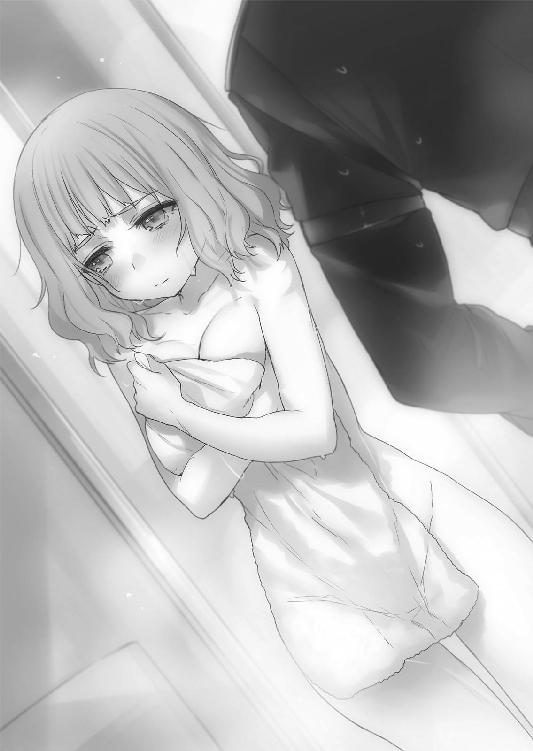

| 対魔導学園35試験小隊 4.愚者達の学園祭<対魔導学園35試験小隊> (富士見ファンタジア文庫) | |
| 柳実 冬貴 | |
| (2013) | |
対魔導学園35試験小隊
４．愚者達の学園祭
柳実冬貴

富士見ファンタジア文庫
本作品の全部または一部を無断で複製、転載、配信、送信したり、ホームページ上に転載することを禁止します。また、本作品の内容を無断で改変、改ざん等を行うことも禁止します。
本作品購入時にご承諾いただいた規約により、有償・無償にかかわらず本作品を第三者に譲渡することはできません。
本作品を示すサムネイルなどのイメージ画像は、再ダウンロード時に予告なく変更される場合があります。
本作品は縦書きでレイアウトされています。
また、ご覧になるリーディングシステムにより、表示の差が認められることがあります。
口絵・本文イラスト 切符
プロローグ
「──それで、学業の方はどうなっているのですか？」
羊皮紙で出来たライトスタンドからもれる明かりの下で、眼鏡をかけた初老の女性がデスクにて、書類に書き込みを行っている。
対面。天然革製のソファに座っているのは、西園寺うさぎだ。
うさぎは肩ほどまで伸びたブロンドの癖っ毛を垂らし、緊張した面持ちで縮こまっている。その姿は、まさに寒空の下で親からはぐれた子兎のようだった。
彼女の目の前にいるのは、西園寺桔梗。現当主の妻、つまりはうさぎの母である。
「あ......ぅ......ぁの」
「時間を無駄にさせないでちょうだい」
強い語気で言われて、うさぎは肩を震わせた。
完全に目が泳いでおり、胸は鼓動を響かせて激しく躍動している。
桔梗は目尻の皺を一層濃くさせて、うさぎを睨んでいた。
うさぎは必死に気持ちを落ち着かせて、スカートの裾を強く摑む。
「が、学園での生活は......その......とても、充実しています。ま、毎日が楽しいです」
「............」
「仲間も！ で、できたんですのよ！ 皆出来の悪い落ちこぼれですし、変わり者揃いですが、面白い人達ですわ。もちろん、わたくしが一番優秀ですっ。わ、わたくしが引っ張っていかないと、何もできませんからねっ。この前なんか──」
「──うさぎさん」
ぴしゃりと窓を閉めるように、桔梗はうさぎの言葉を遮った。
うさぎの肩は、背中に冷水でも流し込まれたかのように上下した。
「私の質問を理解しているのかしら？」
「ぇ......ぅ」
「私は、進級できるのか、できないのか、それを聞いているのですよ。つまらないことに貴重な時間を割かせないでちょうだい」
「も、申し訳............ありま、せん」
絶句にも等しい表情で、うさぎは下を向く。桔梗は灰皿に置かれた細長い煙管に火をつけ、深く紫煙を吸い込んだ。
「まあ、話を逸らしたくなるのも無理ないでしょうけれどね。こんな成績では、進級などできようはずもありません」
おもむろにデスクから書類を取り出して、投げ捨てるようにうさぎへ寄こす。
うさぎは受け取ることができず、書類は絨毯の上に散らばった。
成績表だった。対魔導学園での成績、総合的な順位が記されている。
「誤魔化せるとでも思っていたのですか？ 学園の業績は逐一私の耳に入っていますよ」
そんなつもりじゃなかった。そう言おうとしても、喉が震えて声が出なかった。
うさぎは別に、話を逸らしたかったわけでもなければ、成績について隠したかったわけでもない。ただ目の前の母とされている人と、家族としての会話がしたかっただけだ。
「この様子では卒業はおろか、二年生へ進級することも不可能ですね」
「それは、まだわか──」
「ノルマの期限はあと数か月。どう見積もっても無理でしょう。仕方がありません。もともと誰からも期待などされていなかったのですから、学園に入れる必要などなかったのです......お祖父様も余計な遺言を残してくれたものですよ」
桔梗の言葉に顔を上げ、うさぎは怯えたような表情をした。
「例の件、予定を早めましょう。あちらのご子息から催促も来ていたのです。あの方もたいそうあなたを気に入っているようですし、何も問題はないでしょう」
「ま、待ってください！ そのお話は学園を卒業してからと──」
「学園に通うのは今月いっぱいまでとしましょう。こんな無駄な学費を支払う余裕は、今の西園寺家にはありません」
「お願いです......！ もう決して失望させたりはしません！ 無駄にならないようにがんばりますから！ だから学園をやめるのだけは！」
「黙りなさい。あなたは西園寺家存続のための贄となるのです。私情は捨て、自分の立場をわきまえなさい」
言って、桔梗は眼鏡の端を手で押し上げて、椅子から腰を上げた。
「待って！ お母様──！」
うさぎも慌てて立ち上がり、桔梗の手を摑もうとした。
桔梗は、うさぎの手を乱暴に払った。
「触らないで。私はあなたの母などではありません」
怯えとショックにより、うさぎは完全に動けなくなる。
「あなたがいなければ、全ては上手くいっていたのです。自業自得でしょう」
桔梗はそう言い残し、失意に沈むうさぎを放って部屋を後にした。
「............」
乱れた髪を直しもせずに、うさぎは絨毯に散らばった書類を拾い、胸に抱いた。
「大丈夫......だい、じょうぶ......」
この家に、私の居場所はない。それを再確認する。
こういう時は、無性にあの場所へ帰りたくなる。
うさぎにとっての、唯一の居場所。
狭苦しくて、火薬臭くて、何も無いけれど、とても大切な人達がいるあの場所へ。
そんな居場所も、あと少しで失われてしまうと思うと、途方もない孤独感がうさぎの胸中を襲った。だけどうさぎには抗う術が無い。
この家に縛られる運命は変えられない。
なるべくしてなった。それだけだった。
こうなることは、最初から決まっていたことなのだから。
第一章 魔女狩り祭
＊＊＊
郊外の林道にて、一つだけぽつんと存在する街灯の下に、二人の人間が相対している。
一人は対魔導学園の生徒。もう一人は、暗闇のせいで判別はできない。
「ようやく追い詰めたぞ、メフィストフェレス！」
少年が点滅する街灯の下へ殺意を向ける。
明かりの点滅が激しいせいもあり、街灯の下にいる人物は判然としない。
男なのか女なのか、それすらもわからない。ただ何故か、その人物が笑っていることだけは、少年にはわかってしまった。
「笑っていられるのもいまのうちだ......仲間の仇は、討たせてもらうぞ」
拳銃を前へ向けたまま、少年は一歩一歩近づいていく。
なおも人影は笑みを絶やさない。蛍光灯の点滅に合わせて、口元を吊り上げていく。
「──仇ぃ？ なにぃってるんだぃ？ 僕と君は親友どうしじゃなぁぃか」
音の強弱をめちゃくちゃにしたような、明らかに普通ではない声が、闇夜に響く。
少年の眉間に皺が寄る。トリガーに当てた指先に力がこもる。
外さない。この距離ならば、確実に心の臓を貫ける。
少年は奥歯を嚙み締めて、弾丸を放った。
少年の放った弾は真っ直ぐに、人影の左胸、心臓へと直撃する。
人影はよろめき、壊れた人形のように膝を折ると、そのままうつぶせに倒れた。
近づき、少年は足を使って死体をひっくり返す。
同時に、点滅を続ける街灯の明かりが、死体の顔をはっきりと映し出した。
少年の顔が、悲しみに歪む。
「......っ。ちく、しょ......！」
少年とこの死体は、苦楽を共にした唯一無二の親友だった。
「仇はちゃんと......討ったからな......安らかに、眠ってくれ」
少年が、開いたままだった死体の瞳を閉じようと、瞼に触れる。
その行動が間違いだったと気づいたのは、死体が突然動きだし、少年の腕を摑んだ瞬間だった。
「な──に!?」
少年が驚愕するよりも早く、死体が身体を起こす。
眼前に寄せられた親友の顔に、少年の顔は引きつった。
「ざぁんねぇんでぇしたぁぁあぁぁあ！」
「......心臓は破壊したはずなのに！」
「あひゃ！ あひゃひゃひゃひゃ！」
死体の身体がボコボコと音をたてて波打つ。
数秒経つと、左胸の弾痕から、ドクドクと脈打つ心臓が存在していることが確認できた。
「内臓の位置を......移動させたのか!?」
「心臓は右ぃ、貴重な呪符だったけど使ってよかったよぉ。危ない危なぁい」
形勢が完全に逆転したことを素早く察し、少年は敵の額に銃口を押し当てる。
「イっ──ぎぃぃぃいぃぃいい！」
次の瞬間──悲鳴を上げたのは少年の方だった。
声にならない声が、暗闇の林道に響く。
同時に、少年の腕を摑んでいた死体が、事切れたように地面に伏した。
蛍光灯の点滅がさらに激しくなる中、少年は頭を抱えたまま、よろよろと道を彷徨った。
「ひ、ひぃっ、ゃ、やだ、出て行け......俺の頭に、は、はい、はぃ、はぃってくぅな！」
舌が勝手に躍り、少年の呂律が回らなくなる。
「お願いだぁ......！ やめてくれぇ......っ！」
頰の肉の痙攣は自分ではどうすることもできず、少年は笑いながら泣いていた。
「ゃだ──無理──待ってくれ──無理だよぅ──」
口調が変化する。少年の意思に逆らって、口が動き、思考が動く。
瞼からこぼれ落ちる涙の数々は、まるで少年の魂そのもののようだった。
「助けて──無理だって──無駄無駄──消さないで──がんばるだけ、辛いよぅ？」
死の宣告のような言葉が自らの口から放たれると、少年は叫んだ。
「いやだああああああああああああああああ！──ぎゃはは！──消えたくないいいいい！──ぎゃははははははは！──うわああああ！──ぎゃははははははははははは！ お母さ──ぎゃははははははははははははははははははははははははははははは！」
断末魔すら搔き消されて、笑い声だけが支配する。
空に浮かぶ三日月のように口を裂けさせて、少年はひとしきりに笑った。
蛍光灯の光が完全に消え、闇が到来する。闇の中でも転げ回りながら延々笑い続けていたが、少年は突然ぴたりと笑い声を止めた。
のそりと身体を起こし、身体についた砂を払う。自然に見える彼の挙動は、しかし、先程とは打って変わって落ち着いていた。
口元には、三日月のような笑みがそのまま残っている。
「人間とぃぅのは、どうしてこう、死に際の言葉がママなんだろうねぇ」
侮蔑を込めて、少年が歯をカチカチと鳴らす。悪魔じみたその仕草は、彼の身体に何か別のモノが居座っているようだった。
その時突然、少年がぴたりとにやけ顔を止めて、草木生い茂る闇の中へ顔を向けた。
その闇の中に、人間のシルエットがある。闇を照らすような純白に身を包んだ、美しい女性。彼女は、明らかに地面から足を離して、浮遊していた。
「......おゃぁ？ なんでこんなところにいるのかねぇ？」
少年の中に入り込んだナニカが、女性に声をかける。
女性は深く目を瞑り、音も無く浮遊しながらソレの近くまでやってくる。
女性が進んだ後を、絨毯のように地面を埋め尽くしていた落葉が風に吹かれたように舞う。枯れ葉であったその落葉達は、空中を舞うと同時に、瑞々しい青葉へと変化していった。
まるで女性が、その枯れ葉達に生命を分け与えているような光景だ。
慈悲に満ちあふれたその姿は、聖女と呼ぶに相応しい、汚れなき神聖さを身体に宿している。
女性はソレの前までやってくると、面を上げた。
「お久しぶりです。メフィストフェレス」
背筋が凍るほどに澄み渡った声で、女性はソレを呼んだ。
メフィストと呼ばれた代物は、一瞬だけ眉根を寄せた。
「内側の連中が何の用だぃ？ わたしの食事を見学するんだったら見物料を要求しちゃうよぉ、マザーグース」
クヒヒ、と、楽しげにメフィストが笑う。
マザーグースと呼ばれた女性は、彼のそばに横たわる死体を見た。メフィストの魔法を理解している彼女は、この場所で起こったおぞましい惨劇に、薄目を開けた。
ルビー色の美しい瞳が、メフィストを睨む。
「......汚らわしい。同じ魔女として、私は貴方を軽蔑します」
「誉め言葉として受け取っておくよぅ。いいからさっさと出向いてきた理由を述べな」
気にした風もなく、メフィストが問う。マザーグースもすぐに話を切り替えた。
「英雄による強襲、及び二階堂マリの情報漏洩防止が失敗したことは知っていますね」
「うん、知ってるよぉ。わたしを誰だと思ってるのさ」
「率直に言いましょう。この失敗はホーンテッドだけでなく、あなたにも責任があります」
声音は優しく、けれど言葉の意味は、そのまま彼を責め立てた。
「元々、作戦は貴方とホーンテッドが合同で行う手はずでした。貴方が攪乱を、ホーンテッドが強襲を......そういう予定だったはずです」
「そうだったかねぇ」
「あなた方が手を取り合っていれば、このような結果を招くことは無かった」
周辺の草木がマザーグースの声を聞いて、若干のざわめきを見せた。
マザーグースの特性を理解しているメフィストは、木々のざわめきを目の当たりにしても、さして動揺はしなかった。
「......わたしとあの男が手を取り合うことは無いねぇ。戦い方は近いものがあるけれど、根源にあるものが違いすぎるのさ。あの男はわたしのスタンスを容認できないし、わたしもあの男の在り方には虫酸が走る」
「だからと言って、本部へ連絡も取らず、行方知れずになっていた理由にはなりません。私の任務は、貴方の居場所を突き止め、本部へと連れ帰ることです。強制的にでも、という意味で受け取っていただいて構いません。任務を放棄した罰だと思っていただきます」
さらに木々がざわめくが、やはりメフィストは動じなかった。
「任務を放棄ぃ？」
震える木々に囲まれながら、メフィストは唇の隙間から長い舌を覗かせた。
「わたしの仕事は、順調に継続中だよ」
「......どういう意味です？」
「禁忌区域の開放......それがわたしの任務だろぅ？」
二人は向かい合ったまま視線を交差させる。
唐突に蛍光灯が息を吹き返し、明かりを点滅させる。メフィストの顔が点滅に合わせて影を落とし、その造形が見えなくなる。何者なのかが、わからなくなる。
「わたしの手にかかれば、異端審問会を潰すどころか、こっちの手中に収められる。そうなりゃぁ、あそこに捕らえられている魔女の解放なんざ造作もなぃ」
「............」
「わたしだって、あそこに保管されている自分の身体を取り戻したいんだよぉ。君らとわたしの利害が一致してるのに、放棄するわけがないだろぅ」
その言葉に噓偽りは無いと、マザーグースには思えた。
「見てるといいさ......悪魔と呼ばれる、わたしの戦い方をさ」
メフィストフェレスと呼ばれる魔女は、その存在自体があやふやだ。
それ故に、異端審問会の危険指定にも登録されていない。ただの噂。言い伝え。おとぎ話。誰もがそう口にする、伝説の魔女。
悪魔。彼の正体は、彼女自身ですらわからない。
＊＊＊
白い壁に囲まれた薬師病棟。薬品の臭いが鼻を突くためか、タケルはこの場所があまり好きではなかった。
タケルは白い廊下を、若干緊張した面持ちで歩いていた。
学内なので制服を着ているが、その両手には花束を抱えていた。
「三〇六......三〇六......と」
病棟三階にある病室を端から数えながら、目的地を発見する。
三〇六号室には、トーナメント襲撃時に学園が保護した、吉水明のクローンが入院している。あれからもう一か月近くも経つが、明はまだ目覚めていなかった。
複製は普通よりも身体が弱いと聞くが、タケルも詳しくはわからない。
（今日も京夜は来ているんだろうか......）
部屋をノックしようとしたところで、少しだけ思いとどまる。
受付の薬師の話によると、京夜は毎日明の病室に入り浸り、日が沈むまで彼女のことを眺めているらしい。前に来た時も、同じように明の前でうな垂れている京夜を見た。京夜はホーンテッドに腹を貫かれた後、倒れた管制塔の下敷きになり、両足を失っていた。
タケルはやるせない気持ちを抱きながらも、病室のドアをノックした。
換気のために窓が開いているのか、ドアが開いた瞬間、心地よい風が頰を掠めた。
簡素なベッドと清潔なシーツ、風に揺れるカーテン。以前来た時と、何も変わらない。
「......あれ？」
ただ、そこに明の姿が無かった。生命維持のための機械やらも、全て無くなっている。京夜の姿も無い。完全に、空き部屋になっていた。
病室が変わったのだろうか？ 以前と比べて容態が落ち着いたと聞いたので、さっそく見舞いに来たのだが、タイミングが悪かったらしい。
その時、腕時計型のデバイスに、全校生徒への通達があった。
小さな液晶画面のボタンを押すと、小型照射装置から、立体映像が浮かび上がった。
訝しげに目を近づけると、そこには、
【魔女狩り祭実行委員より緊急連絡。対魔導学園、『魔女狩り祭』開催のお知らせです。本日一限目は生徒集会となります。全員総合体育館へ集合してください】
「......魔女狩り祭......？」
タケルは訝しげにしながら、一人で首を傾げた。
『魔女狩り祭』は、古くはデンマークの祭であり、カカシを魔女に見立てて燃やすという、一見おぞましいイベントだ。当時は魔女が猛威を振るっていた時代であったため、魔除けのためという意味合いが強かったらしい。
今は冬至。本来は夏至に行われるものであるところからわかるように、対魔導学園の魔女狩り祭は名前を借りているだけに過ぎない。
内容を簡単に言ってしまえば、どこにでもある学園祭のことだった。
「──諸君、いきなり呼び出してすまない！ この度、長らく廃止になっていた魔女狩り祭が、今年は開催される運びとなった！ 学生のための伝統行事だ、皆喜んでほしい！」
壇上で爽やかに宣言したのは、対魔導学園魔女狩り祭実行委員長、天明路礼真である。
金髪に碧眼、整った顔立ち。そして爽やかな笑顔が女子に人気の、好青年だ。
「もちろん、再開されるのには理由がある。最近になって、この学園が魔女達に狙われ始めたのは、皆も知っているだろう。異端審問会や我々に対する危機感の無さが、報道でも指摘されている。前々から制度見直しを叫ばれてきたが、その声がさらに強くなってきた。だが、俺はこの学園の在り方に疑問は抱いていない。実戦での研ぎ澄まされた感覚を身に着けてこそ、異端審問官という職を得ることができると考えているからだ」
礼真は真摯に、多少大仰にではあるが、集まった生徒達に語りかけている。
「皆も同じだと思う。我々の努力が否定されるのは、耐え難いものだ。そういうわけで、俺は今回のイベントを復元させようと考えた。この伝統行事は、かつては街の人々に愛されていたと聞く。つまりその、世間へのイメージアップを図ろうということになるんだが......そこは、浅い考えだなと、笑ってくれて構わない」
照れくさそうにする礼真の笑顔に、女子生徒達から黄色い声が上がる。
「たまには一般校と同じような学園生活を送るのも、悪くないと思うんだ。みんな、どうだろう？ 協力してもらえないだろうか？」
彼の爽やかな物言いに、女子生徒達は歓声を上げた。
他の生徒達の反応は、あまりよろしくない。別に女子に好かれる礼真に嫉妬しているからではなく、彼らは学園祭をくだらない余興程度にしか思っていないからだ。
模擬戦トーナメントと違ってポイントがかかっていないので、やる気が湧かないのは当然と言えば当然である。元々参加する生徒数の少なさから、三年前に廃止となっていたイベントなのだ。体育館にひしめく全校生徒の半分は、渋そうな顔をしていた。
「魔女狩り祭ねえ......嫌な響きだわ」
マリがタケルの右隣で不機嫌そうな顔をして言った。
タケルの左横にいる斑鳩は、ミントキャンディーをもごもごさせながら、ひょこっと顔をマリに向けた。
「本質はただの学園祭よ。一般校と変わらないって言ってたでしょう」
「そうなの？ ただの学園祭だって言うなら、ちょっと興味あるかな。経験無いし」
マリがどことなくワクワクしたような顔で言う。
タケルは表情がころころ変わるマリを見て、ほどよく和みつつ、壇上を見た。
「生徒会主催じゃないイベントって珍しくないか？ 普通こういうのって、生徒会長とか理事長が企画するもんだよな？」
疑問に感じたことを口に出すと、斑鳩がミントキャンディーを口から離した。
「理事長はアルケミストのガサ入れで、魔女狩りを引き連れて奔走中よ。生徒会長は......草薙も知っているでしょう？ きっとめんどくさいとかなんとか言って祭りなんてやりたがらないわよ」
「......まぁな。しかし魔女狩り祭実行委員なんてあったんだな、うちの学園。あの壇上にいる人も初めて見るけど」
「確か、先月だかに転校してきた分校の生徒よ。向こうじゃ生徒会長だったって話だし、魔女狩り祭を復興させてアピールしようって魂胆でしょ。いけ好かない顔してるけど、会長がやるよりはいいんじゃない？」
言われて、現生徒会長の人格を知っているタケルは、苦笑いをした。
対魔導学園の生徒会長は、星白流と言う。学年は二年。燃えるような赤い髪が印象的な背の低い少女だが、性格は吞気、放任、自堕落の三つが揃った変人だ。
彼女は、いつものほほんと目を細めて、てきとーな感じで全校生徒に話すので、なんだかこっちまでやる気が無くなってくるのである。いい人なのかもしれないが、頼りないタケルから見ても頼りない人で、何故生徒会長に選ばれたのかよくわからなかったりする。
ただ、一部の人達には『リトル理事長』などと呼ばれており、結構恐れられている人物でもある。そこらへんの事情は、タケルはよく知らない。
生徒会長のことを思い出したのか、斑鳩は髪の毛をいじりながらため息を吐く。
「苦手なのよ、ああいう何考えてるのかわからないタイプ」
「なにそれ同族嫌悪？」
半笑いでマリが言った。
「この学園の上に立つ人って、みんな曲者よね。その生徒会長っていう人は、聞いた限りじゃ頼りない感じだけど......まあでも、あんまり堅物でも面白くないわ。どこぞの誰かさんみたいのが生徒会長やってたら、きっと戦前の旧日本軍よろしく極端に堅苦しい学園になってたに違いないしね～」
蔑みを込めてそう言うと、マリの右にいた桜花の肘鉄が鳩尾に炸裂した。
おぶぅ、という情けない悲鳴を上げて、マリが蹲る。
「誰が堅物だ」
「......ツ、ツッコミ......キツすぎでしょ......！」
「わざとではない。癖だ。攻撃する時は自然と急所を狙ってしまう」
「今はっきりと攻撃って言ったわよね!? 急所狙うなよ！ そもそも攻撃すんなよ！」
「うるさいな。わざとではないと言っているだろう。そもそも貴様の鳩尾がそんな位置にあるのが悪い」
「万人共通で鳩尾の位置はここだっつーのー！」
いつも通りのほっぺたつねり合い（強）を始めた二人を、タケルは懸命に宥める。
なんだか最近、狂犬を何匹も飼っているブリーダーのような気分になってきた。当然、静まり返っていた集会でやかましいのは雑魚小隊と、実行委員長にキャーキャー言っている女子群だけだった。
「なんだなんだ、乗り気なのは女子とそこの一年生だけか？ まあ、お前達の損得勘定は俺も承知の上だ。そこで！ ポイントが欲しいお前達に朗報だぞ。今回の魔女狩り祭には新しい趣向がプラスされている」
苦言を呈しつつも、礼真はニヤリと笑う。
予想外の展開に少なからず興味が湧いたのか、生徒達は面を上げた。
礼真は意気揚々と生徒達を指差し、高らかにこう言った。
「金を稼ぐんだ！ そしてその金を学園に上納すれば、お前達の望む物が手に入る！」
生徒達がいる体育館がどよめいた。
礼真はスタンドからマイクを外し、新体制の説明を始めた。
魔女狩り祭特例制度。各々の小隊で何らかの出し物を催し、外部からの一般客から特殊貨幣を対価としてもらう。その特殊貨幣をより多く集めた小隊は、試験小隊制度のポイントがもらえるとのことだった。
特殊貨幣の価値は通常貨幣と等価だ。特殊貨幣は生徒が自費をポイント交換に用いることを防止するためのもので、交換所でなければ通常貨幣と交換はできない。
ポイントの交換率は貨幣一万分で一ポイントとなる。それ以下は端数として切り捨てられるので、ポイントには加算されない。単純に考えて、特殊貨幣一〇万は、Ｅクラス魔導遺産と同等の価値となる。
無論、この半年で進級ノルマに達している猛者達もいるため、彼らへの配慮として、特殊貨幣を通常貨幣へ交換することも可能とされている。
経費は学園持ち。ただし必要な売り物や出し物は全て生徒が自作すること。
「──他にルールは無い！ 法に反しない限り何でもアリだ！ 楽しめ！ そしてポイントを手に入れろ！ こんなに有意義なイベントは他にないぞ！」
礼真が生徒達を鼓舞する。
逆に生徒達は静まり返っていた。誰一人騒がしく叫んだりはしない。
ただ、不気味なほどの闘志と、闇夜に光る豹の目の如き双眸が、やる気を物語っていた。
この学園の生徒らしいと言えば、らしい反応だった。小隊活動をしなくてもポイントがもらえる？ 戦闘や捜査もが不要？ 命の危険も無い？ ただ金を稼ぐだけ？
......──僥倖！
皆静かに殺気立っていた。斑鳩はやれやれと首を振った。
「清々しいほど俗物ね。さすが任務系の学園だわ。餌が無いと食いつかないのね」
「でもこの方が盛り上がって面白いかもねー。あんた達も成績ビリっけつなんだから、これを機会に稼ぎなさいよ。あたしも手伝ってあげっからさ～」
マリがウィンクをしながら言うと、横にいた桜花が納得できない顔をしていた。
「......魔法が使えない貴様は無能だろうに」
「あ～、この前の戦いであたしに助けられても、まーだそーゆことゆーんだ？ それに、アルケミストの件で援護してあげた功績を認められて、あたしの魔法の使用制限が緩んだのを、知らないとは言わせないわよ？」
いしし、と意地悪く口に拳を当ててマリが笑う。
あの戦いの後、マリのグレイプニルは改良され、少しだけ魔法を使用できるようになった。といっても、他者に危害を加えるほどの魔力は放出できないし、許可無しに攻撃系の術式を組めば問答無用で爆発する。制限のレベルは五段階に分けられており、より高いレベルが解放されればさらに強力な魔法が使用できるようになる。
ただし。その制限を解放する権限を持っているのは──
「ふん、私の許可無く魔法を使えば、お前の首が吹っ飛ぶということを忘れるな」
桜花と、理事長だけだ。理事長は桜花の責任感と魔女に対する敵意を信頼して、レベル２までの解放を許可したのである。
「ぐ、ぬ......なんでタケルじゃなくてあんたなのかしら......！」
「私ならば、躊躇無く爆破できるからな」
「爆破すんなよ！」
「燃料タンクに火をつけたら、それはそれは鮮やかに弾け飛ぶのだろうな」
「そのあだ名いつまでも引きずってんじゃないわよ！」
憤慨するマリを無視して、桜花はやれやれと首を振る。
「話を戻すが、私は魔女狩り祭に賛同できない。試験小隊制度は異端審問官になるための試練だ。ポイントを金で得るなど、本末転倒ではないか」
「あんたってどこまで堅物なのよ。もしかしてそのムカつくくらい形のいい胸も、石みたいに硬いんじゃないの？」
「茶化すな。貴様もこの学園の生徒なのだから、いい加減わかったらどうなのだ。ここは普通の教育機関ではないのだぞ」
「わかってるわよ。でもあんたら、あとが無いんでしょ？ チャンスと思いなさいよぅ」
「貴様には関係のないことだ」
「関係あるわよ！ あんた達がいなくなったら──」
あたし一人じゃん！ と言おうとして、マリは顔を赤くして目を逸らした。
斑鳩はニヤニヤと横目で見やり、桜花も察しているのか、微妙に反応に困っている。
「とにかく、魔女狩り祭に参加するくらいなら、真面目に小隊活動を行った方がいいと、私は思うのだ。草薙、隊長としてお前もそう思うだろう？」
「────」
「............草薙？」
反応が無いことを不思議に思い、桜花はタケルの顔を覗き込んだ。
瞬間──背筋に怖気が走った。
横に、その場にいる誰よりも殺気とやる気を放っている草薙タケルがいたのだ。
「く、草薙？」
恐る恐る肩に手をかけようとしたが、触れずとも伝わってくる異様な熱気に手を引っ込めた。マリも、何事かとタケルの形相を見ている。
おかしい。こんなにもやる気満々のタケルは、今まで見たことがなかった。
「草薙諸刃流皆伝、草薙哮。一身上の都合により、この祭、本気で参加させてもらう！」
いきなり作戦会議をすると言われて、小隊室に集まった雑魚小隊メンバー。
タケルは皆がソファに座るなり、胸の前に腕を組んでそう告げた。
いきなり謎の宣言をされて、桜花とマリは後ろを向いて耳打ちし合った。
「ねね、タケルは、なんでいきなり戦闘シーンの口上みたいなこと口走ってんのかな？」
「わからん......熱くなると性格が変わるのは見たことあるが、何故あのタイミングで......ポイントが欲しいと言っても、普段はあまりやる気を感じないしな」
「謎、多いよね......妹がいて貧乏ってことくらいしか知らないわ。草薙諸刃流ってそもそもどういう剣術なのかな？ 戦闘中に技名叫ぶのも意味不明だし」
「！ それは私も常々思っていたのだ。いろいろ考察はしてみたのだが、気合いを入れるためか、もしくは......」
「......もしくは？」
「単純に、本人がかっこいいと思って叫んでいるのかもしれんな」
「っ。やだ、後者だったら、ちょっと引くけど、ある意味かわいい」
タケルを他所にこそこそと耳打ちしていると、退屈そうにミントキャンディーを駒にして遊んでいた斑鳩が、二人の謎に答えを出す。
「技名は置いておくとして、今現在暴走気味なのは、金のせいよ、お・か・ね」
マリと桜花は眉をひそめた。
「「お金？」」
「そ。こいつ一人暮らしで、身よりもなく妹とふたりぼっちだけど、親が残した借金があるらしいのよ。しょっちゅう借金取りに追われて、学園に逃げ込んだりしていたわ」
「貧乏なのは知っていたが......それは初耳だ。そんなに貧窮していたのか」
桜花が同情を込めてタケルを見る。
「あたしも貧乏だったから気持ちはわかるけどさ、でもだからってこれは......」
マリは、顔を引きつらせながら燃え滾るタケルを見やった。
「稼いだ特殊貨幣は通常貨幣に変換可能で、お小遣いにしてもいい。ここにピンときちゃったんでしょうね。今の草薙は金の亡者よ」
「もしかして......タケルって、ドケチだったりする？」
「度し難いドケチよ。自分自身に対してだけだけどね。二階堂、草薙をデートに誘うなら割り勘は覚悟しときなさい。間違ってもこいつに奢らせちゃダメよ。奢ってくれるだろうけど、血を吐きそうな顔すると思うから」
デートという言葉に、マリの顔は赤くなった。
「あ、あたしタケルに奢ってもらおうとか思わないし。自分の分くらい出すし？ あたしは、その、デートしてくれるだけで嬉しいし」
「あざとい貧乳だわね」
「貧乳余計だろうがーッ！」
いつも通り騒がしくする三人組だったが、どんっ、とタケルが両手でテーブルを叩いたことで、びっくりして三人ともタケルに向き直る。
「いいかお前ら、今回の魔女狩り祭は遊びじゃねぇんだ。気を引き締めてかかれ。事前にきちんと作戦を練るぞ。採用案が決まり次第、必要な材料をリスト化して物資の調達に取り掛かる。出し物にもよるが、空き教室の確保も、早めに行っておいたほうがいいだろう。店を開くならば立地条件は最も重要だ」
「「「............」」」
「俺らは確かに不器用の塊だが、他の連中だって商売は専門外なはず......隙は必ずあるはずだ。極めて苦手ではあるが、接客はコンビニのバイトをしているから慣れている。お前達に指導くらいはできるはずだ。やってやろうじゃねぇか......俺達で天下を取ろうぜ！」
「く、草薙が隊長のようなことを言っている......！」
「怖い......！ タケルがものすごく隊長っぽいわ......！」
一同、ドン引きだった。
やる気満々のタケルというのは、とても不気味だった。
「やるぞ......俺はやるぞ。勝つためなら何だってやってやる！ 背負うぜぇ......半分とは言わねぇ、全部背負う！ これに勝てば誰も不幸にならねぇってんなら俺は......っ、俺は──魔女狩り化も辞さない！」
「いやいやいや辞せ！ そこは辞せ！ なんで学園祭で魔女狩り化する必要がある!?」
「ダメだ、完全に聞こえてない。目がイッちゃってる......」
あまりの豹変っぷりに絶句する桜花とマリ。
しかし、斑鳩からしてみれば、このタケルは見慣れたものだった。この程度の暴走は理詰めで攻めれば元に戻ることを知っていた。
「草薙。金がどうこう言う前に、進級のためのポイントがノルマに達してないでしょう。それともなにかしら、私達の将来をドブに捨ててまで金が欲しいの？」
極めて冷静に、ぼんやりとした表情で斑鳩は言った。
タケルは、こういった責任感の追及に弱い。タケルの身体から熱気が消え、赤く染まった瞳も、見る見るうちに元に戻っていく。
標準に戻ったタケルは、こめかみに汗を浮かばせながら、数秒だけ難しい顔で顎に手を当てた。しかし、すぐにハッとなり、再び、
「案ずるな。残り一二〇ポイント──つまり一二〇万稼げばいいだけだ。一二〇万以降の特殊貨幣は皆で山分けと行こうじゃないか！」
暴走。無駄にポジティブだった。
「一日で一二〇万稼ぐってどれだけ難しいかわかってる～？」
斑鳩が真っ当な意見を返すと、タケルは悪魔じみた不敵な笑みを彼女に向けた。
「難しいが不可能じゃねぇ。杉波、お前は重要なことを聞き逃していただろう」
「？」
「今回の魔女狩り祭は、他の小隊と同盟を組むことが許可されているんだぜ？ おまけにその同盟で一二〇万稼げば、加入している小隊全てに一二〇ポイントが入る仕組みだ。このシステムの圧倒的な隙を──俺は聞き逃しちゃいなかったぜ！」
まるで強敵を出し抜いたが如く、気迫を見せながらタケルは斑鳩を指差した。
ところが斑鳩の表情に変化は無く、頰杖をついてぼーっとしながら、冷静に口を開いた。
「で、どこの小隊が私達なんかと組んでくれるのかしら？」
「──!?」
「日頃の小隊活動だって合同は許可されていたはずよ。もちろんそっちはポイントが分割されるけどね。今までだってその案が出なかったわけじゃないでしょう？ それでも組めなかった。どこも組んでくれなかった」
「............」
「それともあんた、ツテあるの？ 私は無いわよ」
タケルは斑鳩から視線を外し、桜花を見る。
当然だが首を横に振られた。桜花はクラスの女子に人気ではあるのだが、持ち前の堅物さと外見のとっつき辛さが災いして友人はできていない。
次にマリ。マリは両手を上げて苦笑した。当然だ。魔女なのが大前提として、まだ学園に通いはじめてさほど時間が経っていない。知り合いすらも小隊メンバーだけだ。
そしてタケルだが、これは論外である。女子からは目つきが殺人鬼みたいで怖いとか、刀をぶらさげてる変人だと思われている。逆に男子からは、外見が恐ろしいだけで何もできない腑抜けだと陰で嘲笑われ、小隊メンバーが全員女子で、全員並以上のスペックなので、やたらめったら嫉妬されていたりする。
友人などいないし、唯一話しかけてくれる一五小隊の京夜や明も今は入院中。
タケルの闘気が、水をかけた焚き火のように、シューと音を立てて消えていく。
どころか、そのまま空気が抜けたようにシオシオになっていった。
「ごめん......なんか俺......夢見ちゃったみたいで......ごめん」
小隊室の隅っこで、タケルが膝を抱えてカビを生やし始める。
「急落ぶりがすごいな。あれだけ躍起になっておきながら突然干し芋のようになったぞ」
「タ、タケル......別にやる気出すのは悪いことじゃないんだからさ、ね？ 普通にがんばろ、普通に」
マリが恐る恐る近づき、タケルの背中をさすって慰める。
「ごめんなみんな......駄目な隊長で......目先の利益に囚われて熱くなるなんて隊長失格だ......面目次第もない......ハハッ、ほんと馬鹿だな......俺って......」
桜花もマリも、内心で「めんどくせぇこいつ」と呟いた。
「............」
負傷した目の検査を終えたうさぎは、小隊室のドア向こうから聞こえる楽しげな声を聞いて、動けずにいた。いつもならこの騒がしさに安らぎのようなものを感じるはずなのに、今日は不思議と声が遠い気がした。
ここに自分がいなくても何の問題も無いのではないか。
雑魚小隊は自分がいなくても機能するのではないか。
そんな考えが頭を過ぎる。
普段からそういったことを考えていなかったわけではない。自分は雑魚小隊の中でもとびきり駄目だ。先の戦いの時も、うさぎ自身は足を引っ張ってしまったと思っている。決め手である狙撃を失敗し、皆の命を危険に晒した。落ち込まなかったわけがない。申し訳ないと思わなかったわけがない。これでもうさぎは、責任を感じられる人間だ。だからこそ戦場で緊張と恐怖を覚え、失敗した時のことを考える。
いつか呆れられて「お前なんかいらない」と言われてしまうのではないかと思ってきた。
自分の両親がうさぎに対してそうしたのと、同じように。
うさぎは、いつだってそれだけが怖かった。
ここは唯一、自分が自分でいられる場所だ。この場所だけは、失いたくなかった。
だから今まで、皆に後れを取らないように必死にしがみついてきた。
それなのに......。
（......もう、しがみつく必要も......なくなってしまったんですね）
うさぎは目を細めて、胸に手を当てる。
（......どんな顔して、入っていけばいいんでしょう）
どんな顔をして、学園を去ることを皆に伝えればいいのかが、わからなかった。
それでも無理矢理に心を納得させて、うさぎはドアノブに手をかける。
『悪い、なんかトリップしてた。そういや、うさぎ、まだ終わってないのかな？』
『目の怪我は長引くからな。きちんと治してもらったほうがいい。細部はともかくとして、狙撃は小隊の要だ。西園寺の目は我々の目でもある』
小隊の会話に自分の名前が出てきたことで、再びうさぎの動きが止まった。
（こんな時に......そういう嬉しいこと言わないでください）
要と言われて思わず嬉しくなり、同時に、辛くなった。
『魔女狩り祭にとっても要よ。知ってる？ あの子、意外と男子からの人気が高かったりするの。何を催すにしても客引きになるわ。あの外見と身体つきは即戦力よ』
（......ん？）
うさぎの感慨とは裏腹に、会話の流れが怪しくなっていくのに、うさぎは気がついた。
『あー、可愛いもんね～うさぎちゃん。兎っていうより子犬っぽいけど。なんと言うか......いじめてオーラって言うの？ あの子が涙目になると、ぞくぞくぅってするのよね』
『マリ......お前って......』
『えっ!? タケルわかんない!? うそぉ!?』
（............あれ？）
『はぁ......わかってたまるかこの変態マフラーが』
『毎度毎度変なあだ名つけるんじゃないわよ！』
『いじめてオーラなら二階堂もいい勝負してるわよ。寂しいと死んじゃいそうだし』
『鼻の穴にそのミントキャンディー突っ込むよ!?』
（........................）
『......兎で思い出したのだが、西園寺は名前で呼ばれるのを嫌っていたはずだ。しかし私には、どう見てもあのカチューシャが兎の耳にしか見えないのだ......すごく、その、可愛らしいとは思うが』
『おお。鳳が可愛いとか言うのって、珍しいな』
『む。私だって、女子として最低限の感性は持っているのだぞ。馬鹿にするな』
『あんぱん食べるくらいしか趣味の無い女が言っても説得力無いわね～』
『──貴様にあんぱんの何がわかるッ！』
『キレるとこそこなの!? ぎャー！ マフラーを引っ張るなー！』
（..............................）
『でも言われてみればそうだな。なんで、あんな兎っぽいカチューシャしてるんだろう』
『うふふ、わかってないわね、草薙。あの子、実はうさぎちゃんって呼ばれるのを悦んでいるのよ。嫌よ嫌よも好きのうちってやつ。もっと素直によがっていいのに、うふふ、あの子ったら』
『こいつのほうがよっぽど変態でしょ......。でもそうかぁ、実はうさぎちゃんって呼ばれたいのかぁ。よし、あたしもう遠慮しない。今度からウサちゃんって呼ぶわ！』
............バタン！
「その呼び方だけは絶対に許しませんわよこの腐った蜜柑どもがぁ──ッ！」
感慨に耽っていたのが馬鹿馬鹿しくなって、うさぎは怒濤の勢いでドアを開け放った。
そこには、いつも通りビスケットと紅茶でまったりしている雑魚小隊メンバーがいた。
全員、さして驚きもせずに、ビスケットを口に咥えながらうさぎを見つめていた。
「よぅ、おかえりウサちゃん」
「おかえり～ウサちゃ～ん」
「遅かったわね。おかえり私のウサ公」
「!? お、おかえり、う......ウサちゃん？」
全員揃って、うさぎのことをそう呼んだ。嬉しいけど、ムカついた。
「キィィィィィ呼ぶなって言ってるそばから！ わざとですかそれとも鳥頭なんですかっ!? わたくしのことを話しているようだから聞き耳を立ててみればなんですの!? しんみりした人の気持ちも知らないでキャッキャウフフして！ 鳳まで無理して空気を読むんじゃありませんわっ！」
「いや......自分なりに空気を読んでみたのだが......ど、どうだっただろうか？」
「どうだったじゃないですわ！ ここは空気を読まなくていいんですっ！」
怒り心頭のうさぎに怒鳴られて、「またダメだった......」と、しゅんとする桜花。
すっかりいつもの調子に戻ったうさぎは、腰に手を当ててフンスと鼻を鳴らした。
「まったくまったく！ このカチューシャはお祖母様の形見なんですっ。馬鹿にしないでいただけますかっ？」
「別に馬鹿になんかしていないわ。ただ似合ってるって誉めてたの。ねえ、草薙もそう思うわよね？」
タケルは、突然斑鳩に話を振られたものの、すぐさま頷いてみせた。
「ああ。可愛いと思うぞ。すごく似合ってる」
タケルは真っ直ぐにうさぎを見つめながら、笑顔で言った。
うさぎは硬直した。
「か、か、かわ......突然......なんですか......いきなり」
見る見る内に自分の頰が赤くなっていくのを感じて、うさぎは両手を頰へもっていく。
なんでこの男は、いつも他意なくこういうことを口走るのだろう。タケルは根っからの正直者なので、この賞賛は素直に嬉しいのだが、誉められることには慣れていないので、うさぎは激しく照れくさかった。
「ん？ あれ？ 別に他意は無いぞ。率直な感想だ」
「はいごちそうさま～」
「杉波、なんだ？ なんだごちそうさまって」
「「............」」
「お前ら二人も、なんで睨んでくるんだよ」
「「別に、もう慣れた」」
斑鳩はニヤニヤとして、マリと桜花は憮然とした態度でズズズとお茶をすすった。
うさぎは動揺を隠せず、両手をわたわたさせている。
ああ、どうしてこうもいつも通りになってしまうのだろう。
ここにいると、いつも落ち込んでいるのが馬鹿らしくなってくる。
「............」
さっきと違って、全然遠くには感じられない。こんなにも近い場所にいる。
うさぎは、学園を去ることはギリギリまで黙っていようと考え直した。
まだもう少しだけ時間はある。できることなら、期日まで楽しく過ごしたかった。
（もう、長くはいられないけれど......もう少しだけ、いままで通りに、このままで）
うさぎは大切そうに目を細めて、いつも通りの西園寺うさぎとして皆の前に立つ。
「おほん！ かわいいとかっ、そういうのはいいんですっ。あなた達は魔女狩り祭の作戦会議をしていたのではなくてっ？ まったく、どうしていつもいつも主旨が逸れて雑談になってしまうんですの。ほんとに、わたくしがいないとダメなんですか──」
──ら、と言いかけた時、突然うさぎの肩に手が置かれた。
「失礼。ちょっと、いいかしら」
振り返れば、見知らぬ女生徒が背後に立っていた。
生徒は一人だけではなく、さらに後ろに二人、控えている。
「何か、用ですの？」
「......隊長さんは、いるかしら？」
女生徒は断りを入れて小隊室に入ると、タケル達の前までやってくる。
「いきなりごめんなさいね、私達は第二三試験小隊。単刀直入で申し訳ないんだけど、魔女狩り祭のことで相談があるの」
相談と言われて、タケルはかしこまって肩をすくませた。
女生徒は真剣な表情を向けて、長い眉毛を逆ハの字にさせながら、重い声でこう言った。
「同盟──組まない？」
それは、雑魚小隊にとってあまりに驚くべき提案だった。
第二章 落ちこぼれ同盟
願ってもない話だった。
小隊室を訪ねてきた二三小隊は、雑魚小隊と境遇が似ており、現在は三人構成。抜けた三名は負傷と家の事情で退学したとかで、満足のいく小隊活動ができず、現在のランキングはワースト３。
二三だけでなく、他にも第八小隊、第四二小隊も同様の理由で成績が低く、今回の魔女狩り祭のルールを有効活用するために同盟を組んだらしい。
そこへ、雑魚小隊も加わらないか、という提案だった。
「よく来てくれた。歓迎するぞ、我々のダークホース」
眼鏡をかけた優等生っぽい生徒が、組んだ手の上に顎をのせながら、雑魚小隊に言った。
どうやら、彼が同盟のまとめ役らしい。
彼の前には、『落ちこぼれ同盟暫定リーダー』と書かれたプレートが置かれていた。
（落ちこぼれ同盟って......）
自分で書いちゃってるあたり、タケルは親近感が湧いた。
暫定リーダーは机に両手をつくと、ゆっくりと立ち上がり、静かに燃える眼光を、集まった落ちこぼれ達に向けた。
「さて、知っての通り、我々はこの学園の底辺だ」
「......いきなり自虐的だね」
二三小隊の女生徒がぼそりと言った。
「自虐ではない。事実だ。我々はこの事実を重く受け止める必要があるのだ」
拳を振り上げて力説するリーダーの熱に、いまいちノリ切れない他メンバー達。
タケルもさっきの闘志はどこへやら、今は冷静さを取り戻して、部屋の隅に積もった埃のように、用意された席に鎮座していた。
「故に今回の魔女狩り祭はチャンスと思おうではないか。人手ならある......知恵もある......そして、この綺麗どころが揃っている！ 負ける気がしないッ！」
暫定リーダーが、ズビシィッと雑魚小隊の面々（女子）を指差した。
綺麗どころ。確かに言われて見れば、雑魚小隊の女子メンバーは外見的にはレベルが高い。内面的には目も当てられないのは言うまでもないが、少なくとも街中で歩いているだけで目を引くレベルには達している。
だが、それが魔女狩り祭と何の関係があるのか。
「なるほどね」
椅子に座りながら脚を組んでいた斑鳩は、首を横に振った。
「私達を同盟に加入させたのはそういう魂胆？ 売り子で客を釣りたい、と」
言われて、ギクリと暫定リーダーは肩を震わせた。
ようは雑魚小隊の女子を使って、客引きにしようという事だろう。雑魚小隊が誘われた理由はお情けではなく、それなりに理由があったというわけだ。
メンバーの顔が、一気に不愉快そうになった。
斑鳩だけが、余裕の表情でリーダーに対応している。
「あるある、売り子にキャラの声優使ったりコスプレイヤー使ったりわざわざ女にやらせるサークル。売るために形振り構わないその姿勢......私は嫌いじゃないわよ」
......何の話なのか、タケル達にはわからなかった。
しかし力強く頷き合う暫定リーダーと斑鳩は、何かが通じ合ったようだった。
「──でもね」
共感したのもつかの間、斑鳩は偉そうに足をダンッと机の上に載せた。
「うちの子達を使うなら、それ相応の企画が用意してあるのでしょうね？ うちだって腐っても試験小隊......メリット無しであんた達に手を貸すほど、お人好しでも切羽詰まってもいなくてよ？」
ミントキャンディーを煙草のように指に挟みながら、商人の目をした斑鳩が言った。
ピリピリとした空気が漂う中、雑魚小隊は後ろを向いてお互いに耳打ちした。
「......杉波の変なスイッチが入った気がするのは、私の気のせいだろうか？」
「アイドルかなんかのマネージャーみたいになってるわね......なんかしきってるし」
「悪い傾向ですわ......あの杉波は汚い杉波です」
「綺麗な杉波だった例があったっけな......俺は知らない」
自然にひそひそ話に交ざってきたタケルに、桜花が不満そうな顔をする。
「草薙、隊長はお前だろう。他小隊との交渉はお前の仕事だろうに、何を悠長に端っこに座っているのだ」
「あまりに定位置だったから違和感なさ過ぎたわ。そうよタケル、ここは隊長らしくあんたがしきりなさいよ」
「一理ありますわ。このまま杉波に任せていては、わたくし達が何をさせられるかわかったものではありません」
ギロリと、全員の視線がタケルに集まる。
タケルはすぐに顔を逸らした。
「や......俺、こういう空気苦手で」
「腑抜けたことを言うな。魔女狩り祭のシステムには賛同できんが、これがきっかけとなれば、小隊活動で彼らの力を借りることもできるようになるかもしれんのだ。コミュニケーションを築くチャンスだと思え」
「一番コミュニケーション取れない奴が言うことじゃないけど......あたしも、杉波に任せておくとギスギスした協力関係にしかならないと思うのよ。今後のことも視野に入れて、協力し合うなら円満な関係の方がいいと思うけど？ うさぎちゃんもそう思うよねぇ？」
同意を求められて、うさぎは困惑した。
「こ、今後、ですか？」
「？ 一番躍起になってたの、うさぎちゃんでしょ。あと数か月しか無いんだから、他と組んででも、ポイント稼いだ方がいいよね？」
うさぎは黙り込んで、微かに視線を下に落とした。
「わたくしは......別に小隊メンバーだけでも......そっちの方が......き、緊張しませんし......何より、思い出に──」
うさぎが言いかけた時、同盟会議の状況が急変した。
暫定リーダーが声を張り上げたのだ。
「馬鹿な！ 魔女狩り祭は重要な戦局だぞ！ 皆の力を合わせて作戦を練るべきだろう！何のための同盟だと思っている!?」
斑鳩に食ってかかる彼の必死さを見て、全然話を聞いていなかった雑魚小隊は目を見張る。斑鳩は腕を組みながら、嘲笑を浮かべていた。
「雑魚がいくら集まっても──生まれてくるのは雑魚の発想でしかないのよ！」
他小隊の面々は苦い顔をしたが、タケル達は総じて同じことを思った。
（（（（お前が一番ろくでもない発想するくせに......））））
斑鳩の発想のくだらなさを知っているが故に、ツッコミたくて仕方がない。
斑鳩は構わず強行する。
「その点、私には必ず成功させる自信と実力がそなわっているわ。この企画、全て私に任せなさい。何を隠そう私は死の商人、元アル......歩く、商売女よ」
極秘事項を口にしそうになって誤魔化したはいいが、それでいいのか杉波斑鳩。
「そうはいかん。こっちだってプライドくらいあるのだ。君一人に主導権を握らせるわけにはいかない。杉波君......たとえ君が我々の要、雑魚小隊の隊長だとしてもだ」
暫定リーダーは真剣な顔で、負けじと斑鳩に反論を示す。
タケルも、彼の意見には同意できた。
（うんうん、そりゃそうだよな............って、あれ？）
何かが引っかかって、タケルは一瞬思考停止した。斑鳩の目の前に視線をやる。
参加者の前に置かれている名前プレート。
斑鳩の前にあるプレートには、雑魚小隊隊長と書いてあった。
タケルは映画上映中にトイレに行く人の如く、こそこそと腰を低くして斑鳩に近づいた。
「......あ、あの......杉波さん......君はいつからうちの隊長になったんでしょうか」
「知らないわよ。なんか私の目の前に置かれたから、それっぽく振る舞っていただけよ」
「気づいてたんなら、それっぽく振る舞うなよ......」
「草薙にこの同盟をまとめることができるのかしら？」
「それを言われると何も反論できねぇが、なんでお前そんなやる気満々なんだ......？」
「やる気満々？ そう見える？ 気のせいでしょう？」
そう言った斑鳩の瞳は、キラキラと光る夢見る乙女のそれだった。
「うふ、うふふふ、乗っ取るわよこの同盟......今まで人手が足りなくてできなかったこと、全部やってやる......やってやるわよ容赦無く......うふ、ふひ、うひへへへ」
訂正。ギラギラと光る野獣の瞳だった。
その後、他小隊やタケルの為す術なく、斑鳩にこの同盟が乗っ取られたのは言うまでも無い。
企画進行、杉波斑鳩。
これだけで、何が起こるのかは目に見えていた。
「......こんなことになって申し訳ない」
タケルは、二三小隊隊長からメモを受け取りつつ、廊下で平に謝った。
メモには斑鳩が企画のために書き記した、必要材料が書かれている。ここに記されている物を買いに行くのが、とりあえずのタケルの役割だ。他のメンバーもそれぞれ別々に買い出しに出かけて行った。
メモにあるのはどれも布だとか、裁縫道具だとか──猫耳だとかスク水だとか、メイド服だとかそういうものだった。
（............趣味全開じゃねぇか。これ絶対コスプレ喫茶でもやるつもりだろう）
この時点でだいたい何を企画しているのかが、透けて見える。
「草薙君が謝ることじゃないよ。こっちこそごめんね。てっきりあの白衣の子が隊長だと思っちゃってさ......暫定リーダーに伝えたの、私だから、ごめん......」
気にしなくていいと言いつつ、タケルは自分の存在感の薄さに笑顔で涙を流した。
気を取り直して、魔女狩り祭の会話へ戻す。
「でも同盟の連中は是が非でもポイントが欲しいだろうし......言っちゃなんだが、杉波に任せておくとろくでもない結果になるぞ」
「うん、まあでも、私らや他の子達も、俗世の趣味とか学園祭についてよく知らないのよ。普通の学校に通ってたのは小学校までだからねぇ。こういう行事には自信無い。だから、あの人みたいに引っ張ってくれるタイプの方が、いい結果になると思うよ」
「あ、あはは......そう、かもな」
自分が引っ張っていくタイプではないと言われた気がして、またも深い傷を負う。
後ろにいる桜花が、ぽんぽんと慰めるように背中を摩ってくれた。
「そういえば、鳳さんと話すのも初めてだよね。お噂はかねがね。私は第二三試験小隊の隊長で、石田って言います。草薙君と一緒で、入学当初は隊長じゃなかったんだけどね」
よろしくね、と、石田が桜花に手を差し出す。
さらに後ろの二人が、「南でーす」「皆川でーす」と続いて握手を求めてきた。
桜花はおおいに戸惑っていた。一瞬タケルに助けを求めるような視線を送ってきたが、タケルはあえて気づかないふりをする。
スカートの裾で手の汗を拭くと、桜花はようやく石田の手を握った。
「よ、よろしくたのみゅ」
嚙んだ。おまけに表情も身体もガチガチで、ロボットのようだった。
「あ、あはは。鳳さんって、結構かわいい人だったんだね。もっとクールなイメージだったよ」
「だねー。前は独特な取っつき辛さがあって、話しかけられなかったから意外だわ。よかったら今度、魔女狩りとして活動していた時の話とか、聞かせてほしいな」
「あのあの！ 前から気になってたんですけど、すっごい髪の毛綺麗ですよねー。地毛なんですか？ トリートメント何使ってます？」
三人の生徒に言い寄られて、桜花があからさまにおろおろする。
タケルは隠れてクスクスと笑った。
やはりまだ、雑魚小隊以外とのコミュニケーションの取り方がわからないらしい。
微笑ましい、と思う。殺伐とした人生を送っていた桜花が、こうして小隊以外の生徒と会話しているのを見るのは、かなり貴重だった。
（学園祭ってのはいい機会かもな......）
本来試験小隊同士は、ポイントを競い合うライバルであり、協力関係になったとしてもそれは一時的なものだ。こうして一つのものを一緒に作るという行動は、小隊活動とは違って戦闘技能が重要視されない分、お互いに壁が無いように感じられた。
廊下を歩いてみても、学園の雰囲気がいつもと違うことに気づく。
必死なのはポイントがかかっているので変わらないが、慌ただしく走り回ったり、教室を装飾したりしている姿は、年相応の無邪気さが感じられた。
死と隣り合わせの学園生活を送っているといっても、彼らはまだ一〇代の子供だ。
命がけの共闘よりも、こういった和気藹々の共同作業の方がしっくりくる。
「くそっ！ 他小隊からの妨害工作だ！ 機材が全部壊されてる！」
「五二小隊の連中と出し物が被った......！ 生クリームの発注急げ！ 買い占めろ全部だ！ 連中に先を越されるぞ！」
「諜報担当は他校の生徒から学園祭の情報収集！ 前衛は全員街へ出てビラ配り！ 整備は借り教室の装飾に取りかかれ！ インカムのスイッチは切るなよ、何かあれば逐一報告しろ！」
「馬鹿な......！ せっかく第二体育館を占拠したのに人気アイドルや歌手を呼ぶのはＮＧだと......!? 歌えと言うのか、我々に......！」
と思ったが、よく見るとわりと四面楚歌だった。
「必死すぎて逆にシュールだ......」
「実力主義の対魔導学園では当然の結果だ。ポイントを賭けないのなら私も賛同するが、こんなのは間違っている」
質問攻めから逃れた桜花が、腕を組みながらクラス委員のようなことを言った。
「せっかくなんだから楽しもうぜ。ここ最近、ずっと物騒なこと続きだったんだし、息抜きも必要だろ」
タケルが宥めるように言うと、桜花はむすっとした顔をした。
「息抜きにするつもりはないぞ。納得はできないが、やるからには全力だ」
「......お前って結構、負けず嫌いだよな」
「形振り構っている暇はないのだろう？ お前はこのまま二年に上がれずに、三五小隊が解体などということになってもいいのか？ 私は嫌だぞっ」
「......おぉ......」
桜花は、しまったという顔で目を逸らす。
タケルは、嬉しそうに顔を綻ばせて前を向いた。
「そうだな。うん。このままじゃ、お前らと一緒にいられなくなっちまうもんな。そりゃ困る。俺も嫌だ」
「なんだ！ なんでそんな嬉しそうな顔をしている！ 私はもう一度魔女狩りに戻るために──」
「わかってるって。別に何も言ってないだろう？」
タケルがニコニコ顔を向けると、桜花は下を向いて前髪で顔を隠そうとしていた。
柄にもなく意地が悪かったかな、と反省する。タケルには、桜花にとっても小隊が大切なものになりつつあることが、とても嬉しかったのだ。
「と、とにかく、やるからには本気だ。さっさと買い出しに行かねば。他の連中に買い占められてしまいかねんからな」
いそいそと誤魔化すように、ポケットからメモを取り出そうとする。
そこで、桜花の携帯電話の着信音が鳴った。
桜花は携帯を取り出し、メールらしきものを開いた。
「......すまない、草薙。呼び出しをくらってしまった。私の分の買い出しも頼めないだろうか？」
「？ 別に構わねぇけど、呼び出しって誰からだ？ 理事長は今、アルケミストのガサ入れで長期出張中だろ。魔女狩りの人達もあんまり残ってないし......」
「いや、生徒会からの招集だ」
本人も怪訝そうにしながら、携帯を閉じる。
生徒会？ 何故桜花が呼ばれるのだろう？
「......まあ不思議ではない。以前、生徒会に入らないかと誘われたことがあったからな」
「生徒会に？ お前が？」
「元魔女狩りで理事長の娘という立場を、ポテンシャルだと判断されたようだ」
「すげーじゃねぇか、出世街道だ」
タケルは感嘆の声を上げた。
対魔導学園生徒会。
毎年行われる生徒会選挙で、立候補者の中で優秀な人間が入ることができるのだが、通常の学校の生徒会とは少し赴きが異なる。
対魔導学園生徒会は、特殊な試験小隊である。本来は学年によって小隊は別々にされるのだが、生徒会は特例で全学年の生徒での共同編制となる。
普通ならば一年生は二〇〇、二年生は三〇〇、三年生は四〇〇ポイントを一年間で稼がなければならないのだが、生徒会は一〇〇〇ポイントも稼がなければ昇級できない。代わりに、生徒会だけはＢクラスの事件を扱っていいことになっている。
他にも学校行事の主催や、試験小隊が必要とする備品の発注、任務を行っていいかどうかの判断なども任されることがある。理事長は審問会会長も担っているため、学園行事はほとんど生徒会がこなしているのが現状だ。生徒会に入ることは上層部の人間になる最短の道だと言われており、古くから優秀な人間を審問会へ輩出していた。
「出世には興味がない。上層部に行っても仕方がないからな。お前も私の目標は知っているだろう。まだ、諦めたわけじゃない」
桜花は目を細めて、瞳に少しだけ闇を宿らせた。
桜花の目的は、家族を自分に殺させた魔女を狩ることだ。直接手を下さなければ気が収まらないのだろう。上層部にいては、捜査を行うことはないのだから、上に興味がないというのもわからなくはなかった。
復讐。タケルも、かつてはその負の感情に翻弄されていた。だが、タケルはもうその感情に踊らされることはない。もっと他にやるべきことがあると、気づかされたからだ。
だからといって、桜花の復讐心を否定するつもりはなかった。
復讐は何も生まない。タケルはこの言葉が心底大嫌いだ。
ただ、復讐だけに囚われることは、あまりに救いが無いのは同意できる。
だからそばにいると決めた。半分背負うと決めた。
全てが終わった後に、抜け殻になってしまわぬように。
タケルは立ち止まり、桜花は突き進む。
この判然とした違いを抱えつつも、二人は不格好に隣を歩く。
「だいたいだな......生徒会に入ってしまったら、小隊にいられなくなってしまうだろう」
「ん？ 何か言ったか？」
「なっ、なんでもないっ。と、とにかく行ってくる。私の分の買い出しはしっかり頼むぞ！ 任せたからな！」
桜花はタケルの肩を叩いてから、逃げるようにその場を去っていく。
タケルは苦笑しながらその背中を見送り、渡されたメモを見た。
今後二日間は、魔女狩り祭準備期間である。
自主参加ではあるがほとんどの生徒が、今回の魔女狩り祭には躍起になっている。
夕暮れ時、オレンジ色に染まった空の下、生徒達は忙しなく走り回っている。情報収集担当に任命されたうさぎは、学園内の他小隊が企画している出し物の視察を行っていた。
「わたくし、隠密希望者じゃないんですけどね......」
口を尖らせながら、メモ帳を片手に一人で中庭を歩く。
こうして見ると、中庭には一個小隊で出し物を企画している連中もいれば、合同で大きなものを目指しているところもあった。
焼きそばやクレープなどの学園祭定番のものも、あるにはある。
だが一部には、自作ドラグーンの展示、本物の抗魔素材を用いたエアガン、魔法障害への対策本や、抗魔効果を持つ薬草の販売、抗魔素材を加工して作ったアクセサリー、演習場での体験実戦演習などなど、殺伐としたものもあった。
世間知らずというよりは浮世離れしているという印象だ。
「こんなもので喜ぶのはミリタリーオタクか杉波くらいのものですわ」
やれやれと首を振る。
「......はぁ」
うさぎは調査を中断して、中庭のベンチに座った。
夕焼け色に染まる生徒達を眺めながら、しばし呆ける。
皆必死ながらも、いつもと違って楽しそうに見えた。
はてしなく遠い風景だ。こうして他人が楽しそうにしている光景を眺めるのは、中等部以来だった。中等部の頃は、いつも独りだった。元の性格やコンプレックスのせいでもあるが、根本的な原因は西園寺家での自分の立場が足枷となっていたせいだろう。
西園寺の名をこれ以上汚さないように、結果が出せずとも、自分は西園寺の人間だと豪語した。そんな彼女を他人が嘲笑い、遠ざけるのは当然だった。
辛くなかったと言えば、噓になる。
あまりにも普通な自分には、西園寺という名は重すぎたのだ。
「............」
高等部に入り、三五小隊に入隊してからは、こうして遠い風景を見て寂しいと感じることは無くなった。
「......また......あの頃に戻らないと、いけないんですのね」
空を見上げ、思い出す。
押し潰されそうなあの頃の感覚。自分自身が殺されていくあの苦痛。ゆっくりと心が死んでいく痛みが再び待っているかと思うと、絶望に暮れそうになる。
「............ふんっ！」
うさぎは沈みそうになった気持ちを覆すために、自分の頰を両手で挟むように叩いた。
こんなことではいけない。せっかくの魔女狩り祭だ。学園をやめる前に、一生懸命楽しい思い出を作らなければ。
うさぎは、よしと自分に気合いを入れて、ベンチから立ち上がろうとした。
身体を起こそうとした時、目の前に誰かが立っていたのか、顔面を押しつけてしまった。
「あっ......ご、ごめんなさいですわ。ぼーっとしていて」
謝ろうと、慌てて顔を上げる。
上げた瞬間、うさぎの顔は凍りついた。
夕日に影となって相手の顔は見えないが、それでも恐怖はうさぎの中に湧き起こった。
「やあ、久しぶり、うさぎ」
その少年は優しそうに微笑んだ。
男性にしては繊細な、ブロンドの前髪。整った顔立ちと、翡翠のように澄んだ瞳。
そしてこの優しさに満ちた笑顔を、うさぎが忘れるはずもなかった。
天明路礼真。魔女狩り祭実行委員長にして、現倫理委員会会長の息子。
うさぎの幼馴染であり、婚約者となる予定の男だった。
「れ......いま......さ、ま」
「おいおい、様は勘弁してくれよ。昔みたいに呼び捨てで構わないよ。最近、会いにいけなくてごめんな。俺は街を離れていたし、会うのは数年ぶりか。少し背が伸びたんじゃないか？」
頭に手を置いて、礼真はうさぎを撫でた。
その仕草は慈愛に満ちている。全てを包み込むような優しさに溢れている。
されどその瞬間、うさぎの背筋には怖気が走った。
思い出される過去の記憶。己が枷を明確なものにした、あの夕暮れの日。
心に傷を負わされた記憶が、蘇る。
うさぎの身体は硬直し、完全に動けなくなった。口はわななき、合わせた歯がカチカチと音を立てる。礼真は固まっているうさぎを見て、不思議そうに顔を覗き込んだ。
「お......おい、怯えてるのか？」
「い、え......そんなこと、は」
「もしかして、子供の頃のことをまだ引きずっているのか？」
礼真が問うと、うさぎはさらに下を向いた。
「......あの頃は俺もガキだったし、家でいろいろあってな......お前に酷いことを言ったこともあっただろう」
「......っ......う」
「でも、俺ももう大人になったんだ。あの頃とは違う。俺はもう、自分の大切な物を傷つけるようなことは言わないよ」
膝を曲げ、目線をうさぎに合わせて、礼真は言った。
「学園生活はどうだ？ この学園は大変だろう。俺もお前が対魔導学園に入学すると聞いて、心配していたんだ。お前が傷物になりはしないかと、いつも不安に思っていた」
礼真に顎を持ち上げられて、うさぎは強制的に彼と顔をつき合わせる。
うさぎの顔が、恐怖に歪んだ。
「......ひっ......ひ......っ」
「でも安心しろ。もうこんな危ないところにいる必要なんかないんだ。もうがんばらなくていいんだよ、うさぎ」
「......ぅ......ぁ」
うさぎの震えが頂点に達して、膝が折れる。
もう立っていられなくなって、うさぎはそのまま崩れ落ちそうになった。
礼真はうさぎの身体を支え、眼前に顔を寄せる。
「先月からこっちに転校してきたんだ。びっくりしたか？」
「......っ......ぅぅ」
「実は、今日から西園寺家にも厄介になることになった。ご両親に、転校してきたのなら是非うちにって言われてね。お母様はいたく感激していたぞ。よかったな、お母様に悦んでもらえて」
「──！」
「これからは、俺とずっと一緒だぞ」
礼真の指先が頰に触れ、うさぎの唇を優しく撫でる。
反面、うさぎは絶望に暮れたような顔で、震えることしかできない。
彼女の中に刻み込まれたトラウマが、コンプレックスの原因が、軋みをあげていた。
と、その時、
「──うさぎ？」
大荷物を背負ったタケルが、うさぎに声をかけてきた。
タケルは、うさぎの様子を見てから、訝しげに礼真を見た。礼真はすぐにうさぎから手を離すと、タケルと向き合った。
「えーと......うさぎの知り合いか？」
タケルは礼真のエンブレムが二年生のものであると確認して、うさぎに問うた。
うさぎは答えない。何も言わずに、うつむいている。
妙な空気を察したタケルは、歩いてうさぎの前に立ち、礼真と向き合った。
「......？ あんたは、確か魔女狩り祭実行委員の......」
タケルが微かに礼真を睨むと、それに対して礼真は、
「ああ！ もしかして君がうさぎのいる小隊の隊長さんかい？」
ぽんと手を叩いて、明るい顔を向けた。
タケルは、逆に怯んでしまった。
「......は、はい。そうです、けど」
「話には聞いてるよ。いつもうさぎが世話になってるみたいだな。俺は天明路礼真。今朝の集会で演説やってたから知ってるよな」
礼真が警戒心無く、自分から手を差し出してくる。
不意を突かれて戸惑ってしまったが、反射的にタケルは礼真と握手を交わした。
「うさぎとは親戚......というよりは、幼馴染ってやつでね。兄妹みたいなもんだと思ってくれ」
「そうだったんですか。そういえば、確かに少しだけ......」
髪色を見て、少しだけど似ている、と思った。
「この髪か？ 西園寺と天明路は先祖が元々北欧の人だったらしくてね。あそこからこっちに流れてきた人種は少ないから、ブロンドは目立つよな」
礼真の言う通り、確かにこの土地ではあまり金色の髪の人は見かけない。不可視災害と戦争の傷跡の残る土地から逃げ延びてきた人々と血が混じり、人種という境目がほとんど無くなったといっても、極東の旧日本ではやはり黒髪が多かった。
「いえ、綺麗でいいと思います。似合ってますし」
「......君は男にもそういうことを言うのか？ 嬉しいが複雑だな......」
「いや！ そういう意味では断じて！」
少し引かれてしまい、タケルがまたも狼狽する。
礼真は、爽やかに笑ってタケルの肩を叩いた。
「冗談だって、本気にするなよ。正直な奴なんだな」
「すんません......」
「安心したよ。そういう人なら、うさぎを任せられる」
「......？」
「短い間だろうが、うさぎのことをよろしく頼むよ。俺の大切な物だからね」
礼真が優しげに微笑む。
その時、背後からぎゅっと制服の裾を摑まれた。
「......うさぎ」
振り向こうとして止まったまま、裾を摑むうさぎの手を見る。
震えていた。
「どうした、うさぎ？」
「......ぁ、ぃぇ......」
小声で訂正のような言葉を口にするが、服を摑む手は離れなかった。
普通ではないと感じたタケルは、礼真に頭を下げた。
「すみません。ちょっとこいつ、具合悪いみたいなんで、保健室に連れて行きたいんですけど、いいすか？」
「そ、そうなのかうさぎ!? だったら俺も手伝うよ」
礼真が申し出た瞬間、さらに服を強く摑まれた。
「あー......いや、先輩は実行委員で忙しいでしょうし、ここは俺がやっときます」
「そうかい？ まあ、察しの通り役員の仕事が忙しくてね。じゃあ、うさぎのこと、頼めるか？」
「はい、保健室すぐそこですし」
「今度ゆっくり話もしたいし、お礼に食堂で飯でも奢らせてもらうよ」
気さくにそう言ってから、心配そうにうさぎを見つめて、礼真は微笑む。
「それじゃあ......またな、うさぎ」
別れの挨拶を手短に済ませ、礼真は去って行く。
その背中を見届けてから、タケルは裾を摑むうさぎの手に自分の手を重ねた。
「......もう、大丈夫だぞ」
何があったのか。礼真とうさぎがどういう関係なのか。それはタケルにはわからない。
ただ、彼を前にして、うさぎが怯えていたのは確かだった。
手を握られて、ようやくうさぎが顔を上げる。
「うさぎ......!?」
その瞳は涙に濡れて、恐怖に強張っていた。
呼吸は乱れ、尋常じゃないほどに肺が脈動している。
以前にも、うさぎは希にこのような症状を見せたことがある。これは緊張からくる過呼吸だ。最近はだいぶ回数が少なくなっていたし、戦闘中であれどなんとか平静を保っていたので心配はしていなかったのだが、今日はあまりに様子がおかしい。
「大丈夫だ。落ち着け、ここにいるのは俺だけだ。他には誰もいない」
「......はっ......はっ」
うさぎは挙動不審に辺りを見回し、何度も肩をびくつかせる。
「うさぎ、俺の目を見ろ。俺だけ見てろ」
タケルは彼女の肩にそっと手を置いて、なんとか落ち着かせようと努力する。
斑鳩から教えてもらった、過呼吸の対処法だ。本当は「しゃべらせる」のが一番らしいが、周りが見えていない状況ではまずは落ち着かせるのが一番だ。
「はっ......はっ......ごめ......なさ」
うさぎは眼球を激しく動かしながら、誰に対してかわからない謝罪を口にする。
（......まずいな、人が集まってきた）
うさぎの激しい呼吸音のせいか、中庭で作業を行っていた生徒達が心配そうに歩み寄ってくる。今他の連中に近づかれるのはよくない。こういった些細な経験でも、記憶に刻まれてしまえば再び過呼吸を起こす原因になりかねない。
タケルは驚かせないようにゆっくりと、手をうさぎの頭の上に載せ、髪を優しく撫でた。
「......ッ......ふ......ひっ」
「心配すんな。俺がついてる」
「......たす......け......草薙......っ」
「ああ助けるさ。独りじゃない。俺がそばにいる」
穏やかに語りかけていると、次第にうさぎの呼吸が落ち着いてくる。
そして、目の焦点が合い、憔悴しつつも安堵したような顔をタケルに向けた直後、うさぎは気を失った。
タケルは前のめりに倒れようとしたうさぎを、しっかりと抱き止めた。
「............」
原因は何だろうと考えて、真っ先に礼真の顔が浮かぶ。
幼馴染だと言っていたが......本当にそうなのだろうか。
（全然悪い人には見えなかったが......ちょっと引っかかるな）
タケルはそのままうさぎを両手に抱えながら、保健室へ直行した。
「............」
うさぎと別れた礼真は、校舎の裏からタケルとうさぎの姿をのぞき見ていた。
「なるほど......それなりにガードは堅いわけだ」
さっきまでの礼真と違い、彼の顔からは優しさが失せていた。
無表情、というよりは、神経質な監視者の表情をしている。
礼真は深く息を吐いて、歩き出した。
「まあ、いい。魔女狩り祭が終わるまでの辛抱だ」
顔を元の柔和なものに戻して、礼真は校舎裏をゆったりと歩く。
焦ることはない。なるようになる。
そう自分に言い聞かせ、笑う。邪悪とはほど遠いその笑みは、まるで、
「楽しみだ......どうやって飼ってやろう。縋る相手がいないあいつは、どんなことをして俺を悦ばせてくれるのかな」
まるでプレゼントを楽しみに待つ、無邪気な子供のようだった。
生徒会からの召喚に伴い、桜花は多目的教室棟の第三資料準備室にやってきた。
おかしい。生徒会の呼び出しならば、生徒会室を指定するのが普通だ。こんな人目につかない場所を選択する理由など、わかりきっている。何かの罠の可能性は捨てられない。
きな臭さを覚え、待ち合わせ場所へ着く前に桜花は銃を確認した。
「──鳳桜花さんね？」
背後から声がして、桜花は咄嗟に銃口を後ろへ向けた。
桜花は元魔女狩りだ。気配を察知する能力には長けている。
そんな彼女の背後を取るとなれば、相当な手練れと判断するに余りある。
殺気を込めて銃口を向ける桜花だったが、すでに背後の人物は両手を挙げて無害を主張していた。桜花が銃口を向けてくることを、あらかじめ予想していたのだろう。
長く美しい黒髪をきっちりと揃えた、真面目そうな女生徒だった。
「こんな出迎えでごめんなさい。私は生徒会の人間です」
「............」
「全校集会で見たことくらいあるでしょう？ 生徒会書記の泉堂静です」
「......身分を証明できるものを、見せてもらいます」
桜花の態度に、泉堂と名乗る女性は、どういうわけか安心したように微笑んだ。
「会長の見込み通りの人ですね。そのくらいでないと、今回の件に関わらせるわけにはいきません」
「......？ どういう意味です？」
問いかけに答えず、泉堂は断りを入れてから身分証を取り出し、桜花に投げてよこした。
「............確認しました。ご無礼を」
「いいのです。ついてきてください。ここでは敵に気づかれる危険性が高い」
......敵？ 桜花は、ますますわからない顔をする。
泉堂と連れだって歩き、資料室へ足を踏み入れる。埃っぽさとかび臭さが立ちこめる資料室に明かりは一切無く、薄闇が広がっていた。
泉堂は迷うことなく資料室内を進み、一番奥の本棚で足を止めた。
「......あの？」
桜花が怪訝そうにしていると、泉堂は本棚の本を小さく傾けた。
ガゴンという音がして、本棚自体がスライドして動き出す。
見ればわかる。これは、隠し扉だ。
「本棚の書物がスイッチ......古典的ですよね。会長の趣味なの」
「生徒会が作ったのですか？」
「第二生徒会室と私達は呼んでいます。大昔の生徒会が作ったものだけど、無駄に改造を施したのは現会長。知ってるとは思うけど、馬鹿なのよ、うちの会長は」
言われてみて、桜花は現会長のことを思い返す。
彼女なら、無駄な思いつきでこういうことをやりかねない、と思った。
桜花は泉堂に促されて、隠し扉をくぐる。扉は二重になっており、第一の扉が閉まってから、泉堂はカードキーを第二の扉に差し込んだ。
重い音を響かせて、扉が開く。強すぎない蛍光灯の光が差し込んで、中の様子が見て取れた。まず目に飛び込んできたのは、壁にかけられた銃器の類。次に壁自体の素材......恐らくアダマンチウム製だろう。まるで強固な要塞のような部屋だった。
そして、最後に部屋の中央──そこに何故か、こたつが置いてあった。
そのこたつに、温そうに目を細めながらだらける女生徒が一人。
燃えたぎるような深紅の髪と、吸い込まれそうな琥珀色の瞳。高校生と呼ぶにはあまりに背の低い、子供じみた体型。
星白流。二年生にして対魔導学園生徒会長に上り詰めた、学園で一番の実力者とされている人物だった。流は猫みたいに目を細めて、こたつに顎をのせていた。
「やほ～、桜花ちゃ～ん。久しぶりだね～ん」
第一声が桜花のやる気を削ぎ取った。
ゆるみきった顔で蜜柑を口に放り込む流を見て、桜花は頰をひくつかせる。
「......相変わらずですね、星白生徒会長」
桜花は、生徒会に誘われて以来、彼女とは顔見知りだ。
正直、第一印象からあまりいいイメージを抱いてはいない。自由奔放、厚顔無恥、自堕落の極みを行く彼女は、桜花のような生真面目人間には激烈に合わない。何より流の呼び方が気にくわない。気安く桜花ちゃんなどと呼ばないでほしいと、常々思っている。
威厳も何もあったものではない流の態度に、桜花は怒りすら覚えた。
「君はおっかないねー。あんま怒ると血圧上がってハゲるよ～？」
「女性にハゲるは失礼ですよ、会長」
「しずかちゃんもおつかれさま～。はい、蜜柑」
泉堂がこたつに入り込み、流から蜜柑を受け取って皮を剝き始める。
なんだこのまったりとした空間は......桜花の顔がさらにひくついた。
「桜花ちゃんもおいで。ぬくいよ～？ 蜜柑、おいしいよ～？」
「結構です。そんなことより、さっさと本題に入ってくれませんか」
桜花が敵意を込めて言うと、流は寂しそうに口を尖らせて、頰杖をついた。
「つれないなぁ」
「......魔女狩り祭の運営を実行委員に任せて、こんな場所に引きこもっている理由がわかりません」
「人をニートみたいに言うなよ～」
「何が違うのですか」
責め立てるような姿勢を桜花は崩さない。桜花の流に対する認識は、颯月と同じだった。この女は、他人を利用する類の曲者だ。普段はこうして怠け者を装い、こちらの詮索をのらりくらりと躱すのだ。反面、いざとなると途端に信じられないような行動に出る。
決して気を許してはいけない曲者の一人に、彼女は間違いなく含まれる。
「引きこもってるんじゃなくて籠城って言ってほしい......これでもうちは、学園を守ってるつもりだよ？」
「学園を守る？ 何からですか」
桜花が流を鼻で笑う。
流はため息を吐き、桜花を自分のペースに引き込めないと悟ったのか、糸目を開けて琥珀色の瞳を桜花へ向けた。
「もちろん、魔女からだよ」
「それは当然でしょう。魔女の脅威から世界を守るのは我々の責務です。この学園にいる者全てに当てはまるかと思いますが」
「そういうことじゃないんだってば......信じてもらえるか自信はないけど、桜花ちゃんが思っている以上に事態は深刻だよ」
「......何が起こっているのですか」
桜花は、ようやく真面目に話し始めた流を前に、気を引き締める。
流は、極めて真面目な顔でこう言った。
「この学園は、一人の魔女の手に落ちようとしている。完全に魔女に支配されるのも時間の問題だね」
あまりに突拍子もない話に、この時ばかりは驚愕と啞然を両方表情に出してしまった。
「意味が......わかりません」
「だからリラックスさせてから、順を追って話そうとしてたんでしょ～？ 君が急かすのが悪いんだよ～」
このせっかちさんめ、と流は桜花を非難しつつ、とんとん、とこたつを指で叩いた。
座れ、という意味らしい。桜花は仕方なくではあるが、こたつに足を入れ、流と向き合った。流は頰杖をついたまま、桜花を真っ直ぐに見つめ、学園で何が起こっているのかを、静かに話し始めた。
「桜花ちゃんは──メフィストフェレスっていう魔女、知ってる？」
第三章 メフィストフェレス
対魔導学園の保健室は全ての棟に備えられている。当たり前だが、怪我をする生徒が普通の学園に比べて遥かに多いからだ。保健室内の設備も、完璧とまではいかないが、簡単な手術が行える程度には充実していた。
「......しばらく平気だったから安心していたのだけれど、相変わらず人騒がせな子ね」
ベッドで眠るうさぎの額を軽く撫でて、斑鳩はいつものけだるそうな顔で言った。
「あたしも倒れたって聞いてびっくりしたよ......結構頻繁に起こるものなの？」
丸椅子に座って心配そうにうさぎを見つめるマリが、タケルと斑鳩に尋ねる。
「高等部に上がったばっかの頃は何度かあったが、こんなに酷いのは初めてだな」
「中等部の頃はしょっちゅうだったらしいわ。私もその頃のうさぎをあんまり知らないけれど、よく女子トイレの個室で気絶してたって話は聞いたことがある」
「そっか......うさぎちゃんとは、二人も半年しか付き合いがないんだもんね。最近、何かあったのかな......」
マリが唸りながら、記憶を探るように天井を見上げる。
タケルも、心当たりが多すぎて定まらない。英雄襲撃から数か月に亘って、あまりに過酷な出来事の連続だった。その無理がたたってこうなってしまったのかと思うと、巻き込んでしまっているのが自分なだけに、やりきれない。
「アルケミストの事件の後、少し落ち込んでるのはわかっていたけど、声をかけるべきだったわ」
斑鳩も髪の毛をもしゃもしゃといじりながら、反省を口にする。
「この子ってね......私なんかよりずっと本心を隠すのがうまいのよ」
「......そう？ 一番わかりやすい気がするんだけど」
マリが首を傾げる。斑鳩は、自らの顎に手を当てた。
「うまいというのは、ちょっと違ったわね。正しく言えば、いつでもどこでも無理をして気を張っているから、その姿に見慣れてしまって、本当にやばい瞬間がわからないのよね。もっと言えば、いつでもこの子はこういう状態になり得るってこと」
「それは、なんとなくわかるかな。いつもあわわ～って感じだもんね、うさぎちゃん」
「あれってギャグでやってるんじゃないのよ。本人はマジなの。私達に迷惑がかかると思っているから意地を張ってるの。誰よりも我慢強くて、誰よりも弱いのがうさぎなのよ」
「そっか......個性だと思ってたから、あたしも全然わかんなかったよ。ごめんね、うさぎちゃん......」
涙もろいのか、マリがぶわっと瞳を潤ませる。
「たぶん、実家でのこともあるんじゃないかしら」
斑鳩が予測を口にすると、マリは興味深そうにした。
「どこぞのお嬢様なんだよね？」
「西園寺家は異端審問官の家系よ。父親は審問会上層部の人間らしい。優秀な家系だから、教育も厳しいと思うわ。小さい頃からプレッシャーを抱えて育ったのは、容易に想像できる。もっとも、実情は知らないけれどね」
「杉波でも、やっぱ家のこととかは聞いてないのね」
「私は相手が話さない限り聞いたりしないわ。私にだって知られたくないことがたくさんあったし......誰かさん達のせいでいろいろバレちゃったけど、そういう干渉は苦手なの」
冷たい言い方に聞こえるが、これは斑鳩なりの気遣いだった。いくら仲間だと言っても、踏み込んではいけない領域はある。
タケルは距離感を摑むのが苦手なため、わりと無神経に踏み込んでしまいがちなのだが、よほど深刻な事態でなければ黙って見守るように心がけてきた。
だが、今回は深刻な予感をひしひしと感じていた。
「......うさぎ、倒れる前に魔女狩り祭実行委員長と話してたんだ」
「魔女狩り祭開催の、演説してた人？」
「ああ......どうやらあの人とうさぎは、親戚同士で、幼馴染らしい」
タケルは、礼真を止めに入った時の事を思い出しながら、呟くように言った。
斑鳩が反応を見せた。
「天明路礼真ね。天明路は倫理委員会会長の名字と一緒よ」
「？ そうなのか？」
「ええ。滅多にある姓じゃないから、恐らく会長の息子でしょう。親戚だったなんて知らなかったけれど、そう......幼馴染なのね......」
「でも異端審問会と倫理委員会って、犬猿の仲だよな......？」
「組織の存在意義だけ見ればそうなるけど、別に犬猿ってわけじゃないわよ。倫理委員会が魔女差別について異議を唱えてから、異端審問会も意見を受け入れるようになったし、倫理委員会だって審問会を潰そうなんて考えてないはずよ。どっちもお互いに必要としている部分はあるし、元々は同じ組織だったのよ」
「知らなかった......杉波って、結構組織間の情勢に詳しいんだな」
「......草薙、あんたこれ、下手すると小学生でも知ってる時事なんだけど」
「......マジで？」
マリも、「さすがにあたしでも知ってるよ......」と呆れ顔を示す。
倫理委員会は元々異端審問会上層部の鳩派と監査室が、魔女擁護のために立ち上げた組織であり、最初から別個だったわけではない。
魔女裁判倫理機構。事実上、異端審問会の監視を行っている組織である。
マリは倫理委員会と聞いて、複雑そうに苦笑いを浮かべた。
「異端審問会も黒いけど、あそこもかなーりやばいところあるよ。あたし魔女だけど、裏事情知ってるだけにあんま好きじゃないわ。鳳桜花の言い分じゃないけどさ、平等を叫びながら魔女の優遇を求めてる感じ？ 正直、普通の人間があんなに必死になって魔女の権利を訴えているのは、違和感バリバリだわ」
「そうね。力のある組織が理念だけで成り立っていると考えるのは、甘ちゃんよ」
政治的な話をされてもタケルにはあんまりよくわからなかったが、礼真が倫理委員会側の人間なのに、対魔導学園に通っているのが不思議だった。
「天明路家の御曹司が学園に入学したのは、審問会を中から変えるってのが名目でしょ。分校の生徒会長だったらしいし、優秀なんでしょうね」
「コネだったりして」
「可能性は否定できないわね」
「けっ、けっ、どっかのいけ好かない女みたいだわっ。ていうか鳳桜花は何やってんのよ！ うさぎちゃんが大変なのに！」
ぷんすかしながら、マリが桜花を非難する。
タケルは、マリに事情を話した。
「あいつには連絡入れてないんだ。生徒会に呼び出されたらしいから、さすがに邪魔するわけにもいかないだろ」
「生徒会ぃ？ ふんっ、生徒会とうさぎちゃんのどっちが大事なのかしらっ」
「いや、報告してないの俺だし......連絡を入れたらすっ飛んでくるんじゃねぇかな」
苦笑を浮かべて、頰を搔く。
タケルはそう思ったからこそ、桜花に連絡は入れなかった。命に関わるようなことではないし、うさぎが目覚めてからでも遅くはない。あまり周りから心配されるのも、うさぎの精神的によろしくないと判断したのだ。
ただ、さすがに黙っているのは怒られると思うので、夜にでも一報入れておこうと、タケルは思った。
丁度その時、保健医の薬師がカーテンを開けて顔を出した。
「お前達、まだ残っていたのか。西園寺は目が覚めたら私が家に送り届けてやるから、早く帰れ」
再びカーテンが閉じて、薬師の女性が顔を引っ込める。
短く息を吐いて、斑鳩は椅子から立ち上がった。
「あんた達、今日は帰りなさいな。目覚めるのが遅くなるようだったら、うさぎは私の部屋に泊めさせるから」
「魔女狩り祭の準備中だから、学園に泊まってもいいんじゃないの？」
「やることがまだ定まってないの。本格的な作業は明日からだから、養生しときなさい」
不気味な笑みを浮かべる斑鳩を無視して、マリが時計で時間を確かめる。
もう日が落ちてだいぶ経っていた。
「一緒したいとこだけど、あたしはこれから魔法生物の召喚実験があるのよね。タケルは？」
「俺はこれからバイトなんだが、せめて起きるまでそばに......」
タケルも立ち上がろうとしたが、その時、服の袖の部分を誰かに引っ張られた。
眠ったままだが、うさぎがタケルの服を摑んでいた。
斑鳩がニヤける。
「あらあら、愛されてるわね」
「うーん......起きたら、俺が家まで送っとくわ」
「なんなら、私の部屋に二人とも泊まってもいいわよ？ 初体験を三人で、というのも背徳的で興奮しちゃ──」
「俺はこのあとバイトがあるんだよ！ お前に構ってる暇はねぇ！」
卑猥な思惑に対してタケルがツッコミを入れる。
マリは、タケルに疑惑の眼差しを向けていた。
「......寝てるうさぎちゃんにいやらしいことしようってんじゃないでしょうね？」
「しねぇよ！ 俺がそんな奴に見えんのか!?」
「「............」」
「何か言ってくれ!!」
誤解をされて必死になるタケルだったが、二人は冗談よとばかりにカーテンを開いた。
「そういうことなら任せるわ。私達が心配してやってきたと聞いたら、この子、また責任を感じてしまいそうだしね。エロスなことはしてもいいけれど、する時は私に連絡するか、撮影して私の携帯に──」
「エロスなことは許さないからね！ やったらいろいろもぎとるよ！」
二人に指差されながら言われるも、もはやタケルには苦笑すら出なかった。
病室にうさぎと二人きりになったタケルは、もう一度彼女の寝顔を見やる。
安らかな寝顔の裏に何が隠されているのかは、タケルにはわからない。いつもの緊張からくる過呼吸だったのかもしれないが、他の可能性がどうしても拭いきれなかった。
うさぎの怯えた表情。そして、礼真のあの言葉。
それが、どうしても頭から離れない。
「......メフィストフェレス、ですか？ 聞いたことくらいはありますが......」
顔をしかめて、桜花は若干呆れたような顔をした。
流はその反応が予想できたのか、苦笑を浮かべる。
「都市伝説として世界中に知られている存在だね。いわく、心を喰う魔女、魂を掌握する悪魔。その姿を見た者は誰もいない......何故なら見た者は全員魂を喰われて死んでしまうから」
「............」
「そいつが本当に存在して、今この学園を支配しようとしているとしたら、桜花ちゃんどうする？」
流が探るような目つきで桜花を見た。
桜花は、目を閉じて、首を横に振った。
「失礼ですが、馬鹿馬鹿しいです」
「そぉ？ それを言ったら、この世界に魔法というものが存在することこそ、馬鹿馬鹿しい話になっちゃうよ。いてもおかしくないと思うけどな～」
「......噂になるくらいですから、似通った魔法は存在します。ですが、魂の原理はいまだ解明されていませんし、器に固定されている魂をどうにかできる魔法は、霊体化ぐらいしかありません。あれらは自発的なものですし、他者の魂をどうこうできるようなものではありません」
「......果たして、そうかなー」
流の物言いに、桜花は目を鋭く細めた。
「憑依魔法って、桜花ちゃんどう思う？」
「............。またそのようなおとぎ話を。憑依は悪魔と呼ばれる魔法生物のみが使用できる魔法です。人の魔女とは魔力の性質があまりに違いすぎるので、使用は不可能。たとえ悪魔の召喚に成功したとしても、憑依できるのは悪魔であって、魔女本人ではない」
通常、魔女達が行う召喚魔法は、位相の違う別次元の世界とコンタクトを取り、魔力と引き替えに契約を行うことで魔法生物を限定的に呼び出すというものだ。幻想生物は世界に実在する歴とした生き物だが、魔法生物は人間とは住む世界が違う。
動物霊、人間霊、妖精、精霊、英雄霊、幻想霊、天使、悪魔、神性類。
最も召喚が容易なのは、世界の位相が比較的近い、人間霊のような死後の存在である。マリの使用した愚者の火や、ホーンテッドの喚び出した絶望の花などは、妖精に位置する。
そもそもこれらの存在は単独では現界できないので、常に術者からの魔力供給を得るか、生贄が必要となる。
よって上位召喚である『英雄召喚』や『伝説召喚』などは、多大な犠牲を必要とする。
下級ならば可能だが、上級悪魔や天使、神などを喚び出す『神話召喚』は、世界そのものを捧げるぐらいでなければ喚び出すことはできない。これらの生物が生きる別次元の世界は、未だにほとんど解明されていない。召喚魔法を扱う魔女達も、ギブアンドテイクの関係を対象から強要されるので、魔法生物と意思疎通をすることはできないのだ。
故に、魔法生物の使用する魔法は、人間には解明できず、使用不可なものが多い。
「相変わらずたいした知識量だけどさ～、凝り固まりすぎててよくないよ～。残念だけど、憑依魔法を扱う魔女は実在するよ」
《憑依》
他者の肉体に強制的に己の魂を定着させる魔法であり、悪魔が用いる。俗に言う悪魔憑きや狐憑きなどと喚ばれるものがそれに該当する。この魔法をかけられた者の魂は、悪魔の魂との混濁が生じ、果ては食い尽くされてしまうという。
最後に残るのは、元のものとは別の魂を宿した、人間の皮を被ったバケモノだけ。
しかし、桜花が言ったように、人間には使用できないと言われていた。
「うちらは実際に、ここ最近ずっとそいつと戦ってきたんだよ」
はっきりと言って、流はお茶をすすった。
こんな話を信じろというのは無理な話だったが、桜花は黙って聞くことにした。
「Ｂクラス魔導遺産を追っていたうちの部下達が、奴に襲われたらしいの。一人は肉体を乗っ取られて、他の連中はみんな殺された」
「生徒会の部隊が......全員ですか？」
「うん。みんなで殺し合ったらしいよ」
「......殺し合った？」
「誰の中にメフィストが入り込んだかわからなくて疑心暗鬼になったんでしょ。生き残った一人も、うちに敵の存在を知らせた後、自殺しちゃったよ。肉体を奪われた子は行方不明。たぶんもう生きてはいないでしょ」
「............」
「奴はどういうわけかこっちの情報を知っていて、こっちから攻めても裏をかいてくる。生徒会はほぼ全滅。別の生徒に乗り移って学園に入り込んだと、うちは予想するね」
「......それが本当なら、上には報告したのですか？」
「桜花ちゃんだってこんな話信じてないでしょ？ 同じだよ。鼻で笑われておしまい」
おかげで頭がおかしいと思われたよ、と、流は微笑みを浮かべた。
噓を言っているようには見えなかった。
「生徒会はほとんど殺された。役員はうちとしずかちゃんだけになっちゃった」
やれやれ、と寂しげにお茶をすする。
生徒会がほぼ壊滅状態。だから流はこの小さな部屋に一月も引きこもって、籠城しているのだという。
動けないから桜花にメフィストを討つのを手伝ってほしい、と。
呼ばれた理由はそんなところだろう。
「ところで桜花ちゃん............天明路礼真をどう思う？」
流は湯飲みを両手で包みながら言った。
「天明路......魔女狩り祭実行委員の、ですか？ 知っていることは多くはありませんが、倫理委員会会長の息子だということぐらいは」
彼が何か？ と、桜花は問う。
流は若干目を鋭くして、湯飲みの中のお茶をくゆらせていた。
「あいつ、不自然だと思わない？」
「......不自然？」
「普通に考えてみてよ。あいつは転校生。この学園に来て、まだ一月しか経ってない。しかも倫理委員会側の人間だよ？」
「............」
「倫理委員会が認められるようになったと言っても、魔女の人権保護を訴える姿勢に賛同する生徒はほとんどいない。むしろ倫理委員会側の人間って立場はデメリットでしかない......それなのに、あいつはあれだけの人望がある」
不自然さは理解できた。
世間で魔女に対する差別意識が減ったと言っても、閉鎖的な対魔導学園では、その考えはあまり通用しない。異端審問官を目指す生徒達が、魔女をどういう目で見ているか......それはマリの現状を見ればわかること。
魔女を擁護する組織の人間も、同様のことが言える。孤立するのが道理。
「そんな奴がどうして魔女狩り祭実行委員なんてやってるのか、不思議じゃない？」
「......確かに、それはそうですが。以前通っていた分校では生徒会長をしていたと聞いています。人柄や実力があれば、不思議は無いのでは？」
「うちもそう思って、前の学校のあいつの評判と成績、調べてみたんよ」
言って、流はこたつの中から成績表を取りだして、桜花に手渡す。
桜花は成績表に目を落とし、渋い顔をした。
「............酷いですね」
「そー。そいつ勉学も実技もスキル皆無なの。普通の学校ならそんな成績でもよほどの人望とリーダーシップがあれば生徒会に入れるかもしれないけど、うちの学園は違う」
流の言う通り、対魔導学園は実力と人望の両方がそなわってなければ生徒会には入れない。たとえ分校であっても、それは同じだ。
「上層部のコネでしょうか......いや、それにしても、これは......」
限度がある。生徒会に入れるか入れないかは、大人ではなく生徒達が決めるのだから。
「おかしいよね。にもかかわらず、天明路は二年にして生徒会長になっていた。評判について聞いたら、分校の生徒はみぃんな彼を賞賛していたよ。礼真様、礼真様って、不気味なくらいね」
桜花は、ふと朝の緊急集会で、礼真へ向けて黄色い声を上げていた女生徒達の様子を思い出す。似ている、と桜花も思った。
礼真が本校へやってきたのはたった一か月前......一か月であれほど人気なのはおかしい。
「参考にならないから、第四分校から転校した生徒を見つけ出して、その子に天明路礼真について聞いてみたの。一年時の彼はどんな感じだったのかをね。そしたら......」
「............」
「嫌な奴。感想はたったその一言だった。今奴が人気者で、分校で生徒会長をしていたって言ったら、噓でしょって笑われたよ」
それを聞いて、桜花は顎に手を当てた。
「生徒会がメフィストに襲われたのはいつ頃ですか？」
「一か月とちょい前」
「場所は？」
「第四分校に比較的近い廃墟。二回目は同じく近い場所にある林道」
桜花は礼真の成績表を睨みつけるようにして、拳に力を入れた。
流の言いたいことはわかった。ようは、メフィストは、現在の天明路礼真である可能性が高いということ。性格の豹変、不自然な人望。もしも魂が別物で、正体が魔女であるとすれば、この急激な変化に納得はいく。
恐らく精神干渉魔法を用いて、多くの生徒を魅了したのだろう。
となれば......。
「......魔女狩り祭の再開は、天明路の企画ですよね」
「うちは自分の身を守るために、最近ずっとここで引きこもってたからね～、実行委員ってくらいだから一〇〇％そうでしょ」
「もし万が一彼がメフィストだとすると......魔女狩り祭を開催するのは」
「生贄、かもね。奴は今回の魔女狩り祭で人を集め、学園内で何らかの大魔法を実行するつもりかも......」
そこで桜花ちゃんの出番ってわけ。流は真剣な表情を崩して、ふにゃっとした。
「君にはしずかちゃんと協力しつつ天明路礼真を調査して、証拠を手に入れてから......できれば奴を確保してほしいわけよ～。まだ奴がメフィストと決まったわけじゃないから、確証を得てからでお願いね」
「あの、私が既に敵の手に落ちている可能性は考えなかったのですか？」
「君はレリックイーターの契約者でしょん？ そんな奴に憑依とかしたら一発で審問会にバレるって～」
流はあっけらかんと言ってのけた。
桜花がレリックイーターの契約者であることは、生徒ではまず知り得ないことだ。独自で調べ上げたのか、横の繫がりか。この女の底は知れたものではなかった。
流は薄目から琥珀色の瞳を覗かせて、さらに続ける。
「桜花ちゃんを選出したのは、信用できるからだよ？」
「何を根拠に」
「君は理事長のこと、信用してないでしょ？ あの白髪オバケに裏がないかどうか探ってるの、知ってるよ。君は今の異端審問会に疑問を抱いている......違うかなん？」
「............」
「だったら君はうちらの仲間だ。正しい判断のできる子だって思うよ。たとえ理事長の義娘だとしても、是非うちの下についてほしいね」
「お断りします。組織間の権力争いや個人的な野望に興味はありません」
「個人的な野望～？」
「あなたは絵に描いたような野心家だ。いずれ、審問会のトップに立つおつもりでしょう。今回の件も、生徒会で片をつけて、メフィストが実在したことを盾に、理事長に責任を追及するつもりだ」
「......そこまでわかってんのね。すげーな～桜花ちゃん」
一瞬、流の顔に本性が浮かび上がる。上に立つ人間独特の、駆け引きと策略に陶酔した外道の本性。だが、颯月ほどではないと、桜花は流を評価している。
流のものは、少しだけ人間味があるのだ。
「だいたい合ってるけど、ちっとばかし違うかな。メフィストを殺したいのは、一番は個人的な野望じゃなくて......恨みだよ」
恨み？ 聞き返すと、流は困ったような笑みを浮かべて、くるくると湯飲みを回した。
「仇討ちって～やつかな～。困ったことにうちはこういう人間で、他人が死んでも悲しいとか、悔しいとか、あんまそういうこと感じられないんよ。でも、殺された子達は違うでしょ。悔しいでしょ、悲しいでしょ。その殺された子達の無念っていうのをさ～、なんとかしてあげたいわけさ」
苦笑をして、流は首を傾けた。
「あの子らが死んだのは、全部うちのせいだしね」
「............」
「うちはこうやって指示を出すことはできるけど、戦闘はからっきしでさ。成績はいいんだけど、実際の戦闘ってなるとどーにもとろくさくなっちゃって。なさけないよね～」
「............」
「それでも、うちはほら、死んでいった子達が選んでくれた生徒会長だから。責任取るのが、うちの仕事さ～」
えっへん、と、ゆるい感じに流が胸を張る。
「まあこっちの事情が何にせよ、桜花ちゃんにとっても止めなきゃでしょ。君の復讐とか、君の大切な仲間とか、その他いろいろのために......ね～？」
くふふ、と流が口に手を当てて、猫みたいに笑う。
人間味のある話をしたかと思えば、これだった。物言いから察するに、桜花の事情もほぼ全て知っているのだろう。桜花は、ますますこの女が嫌いになった。
「仲間の仇討ちならばなおのこと、何故自分で手を汚さないのですか。仇討ちとはそういうものでは？ 私はそうするつもりですよ」
「何故って......桜花ちゃん。メフィストの存在を知る者がいなくなったら困るでしょ？ 大将が前に出てどうするのさ」
流は、人差し指を立てて、指先をふらふらとさせる。
「トップに立つ人間ってのはね、常に後方に控え、安全な場所からぬくぬくと手下を動かさなきゃなんないのさ～。死ぬのは最後......悲しいことにねー」
桜花は流の考え方に不快感を感じつつ、こたつから出て立ち上がった。
「お、やってくれんの？ さっすがうちの見込んだ女。メフィストの存在、信じてくれると思ってたよ～」
「いいえ。信じていません。私は──」
桜花は流に背を向けて、
「──自分の目と耳で確かめない限り、決断を下さないように決めているだけです」
己の信念を口にして、第二生徒会室を後にした。
時刻は夜九時。月明かりの差し込む保健室で、うさぎはうっすらと瞼を開けた。
「ぅ、ん............？」
辺りが暗いことを不思議に思いながら、自分がどこにいるのかを確認する。
身体を起こそうとした時、隣に誰かがいることに気づいた。
「ん、起きたか。おはよう、うさぎ」
ベッドの横に椅子を置いて、窓の月を背にしながら、タケルが薄く微笑みかける。
「わたくし......どうして」
「中庭で倒れたんだ。覚えてないか？」
うさぎは記憶を探る。夕暮れのオレンジ色と、影になった礼真の顔が頭を過ぎり、微かな寒気を覚えたが、精神が乱されるほどではなかった。
はだけたブラウスのボタンを直しながら、うさぎはちらりとタケルを横目で窺う。
「ずっと......そばにいてくれたんですの？」
「いるって約束したからな」
倒れる直前、目の前が何も見えなくなって、闇に沈みそうになった時に聞こえた声。
独りじゃない。俺がそばにいる。
あれはタケルの声だったのかと、うさぎは思わず赤面してしまう。
保健室の壁にかけられた時計を見ると、時刻は九時。四時間以上眠っていたことになる。
「ご、ごめんなさいですわっ。こんな時間まで、わたくし......！」
「気にすんな。俺も寝てたしな。最近バイト続きで寝不足だったから丁度よかったぜ」
タケルは唸りながら身体を伸ばした。
気にするなと言われても、四時間も待っていてくれたと知れば、誰だって申し訳なく思う。うさぎはタケルがバイトをしていることを知っているし、九時なら遅刻どころではすまない。きっと休んでまで付き合ってくれたのだろう。
「ごめん......なさい」
つくづく自分の悪癖が嫌になって、もう一度静かに謝る。
タケルは謝罪を聞いてか聞かずか、薄く笑いながらうさぎの頭を撫でた。
「帰ろうぜ。送ってくぞ」
何も言わず、ただ笑っていてくれるタケルの優しさに、うさぎは小さく頷いた。
「し、支度するので、待っててもらってもいいですか？」
ベッドから降りようと身体を動かした時、自分の右手に温かいものが触れていることに気がついた。
見れば、うさぎの右手は、タケルの大きな手をしっかりと握っていた。
「あ、あわ......わわ」
「？ ああ、これか」
「も、もしかして、わたくし、ずっと握ってましたの!? 寝てる間、ずっと!?」
「寝ぼけてたんだろ。それに最近寒くなってきたから、あったかくて丁度よかった」
うさぎは慌てて手を離して、頰に手を当てる。
顔が熱くなっていくのを感じながら、はしたない、と下を向く。
よくよく考えれば、四時間も寝顔を見られていただけでも相当に小っ恥ずかしい。
寝言で変なことを口走っていないだろうか。よだれとか垂らしていないだろうか。
そんな考えが頭の中を巡り、うさぎはまた過呼吸を起こしそうになってしまった。
「落ち着けって、手を握るくらい、いいじゃねぇか。俺は頼られてるみたいで、むしろ嬉しかったぞ」
「ぅぅぅ」
「......だから、な......落ち着け」
タケルが微笑みながら、再び頭を撫でてくる。
彼に頭を撫でられると、いつも何故か不安が消えていく。
彼の手は、うさぎにとってとても懐かしい感じがして、安らぐのだ。
（どうしてわたくしはいつも......この手に甘えてしまうんだろう）
身を委ねてしまいたいという思いとは裏腹に、うさぎの中では、このままではいけないという思いが木霊する。
いずれ訪れる別れの日を迎えるのが、辛くなってしまう。
それが唯一の心配だった。
帰り道、高級住宅の並ぶ通りを二人で並んで歩く。
保健医に車で送ると言われたが、ゆっくりと話したいこともあったので、タケルは丁重に断りを入れた。
二人の間に会話は無い。うさぎは見るからに元気が無く、下を向いてとぼとぼとタケルの横を歩いていた。
「ご迷惑を、おかけしましたわ。もう二度と無いように、気をしっかり持ちますので」
「そのことはもう気にすんなって言ったろ？」
「もう絶対に取り乱さないようにしますわ......だから......だから」
続く言葉を口にせず、うさぎは再び黙り込む。
少し神経質なくらいに気にしているようだ。
確かに、過去にはあがり性のせいで致命的なポカをやらかしたこともある。
でも、それでもタケルはうさぎのことを頼りにしている。英雄テロの時も、トーナメント襲撃の時も、この前のアルケミストでの時だって、小隊はうさぎに助けられた。うさぎがいなければ確実にタケルは命を落としていただろう。
感謝こそすれ、責め立てようなどと思ったことは一度も無い。
結果はあまり伴わずとも、今までうまくやってこれたと思う。
うさぎがこうも気弱になっているのは、恐らく......。
「実行委員長......天明路だっけ。親戚なんだよな」
話を持ち出すと、うさぎの肩が小さく震えた。
タケルはその反応を見逃さない。
「......あいつと、何かあったのか？」
なるべく刺激せぬよう、何気なくを心がけて、タケルは問うた。
うさぎは下を向いたまま、歩調を少し緩めて、タケルの後ろを歩き始めた。
うさぎは答えない。表情も窺えない。
ただ、いつまでも黙っている。
「悪い、忘れてくれ。家族の問題だろうし、俺が首つっこむようなことじゃねぇよな」
うさぎに背を向けたまま、タケルは言った。
自分から話さない限り、プライベートには干渉しない。斑鳩の時は彼女に危険が迫っていたから無理にでも干渉したが、うさぎは違う。彼女の場合は、心の問題だ。
暗黙の了解に近い三五小隊の掟は、守るべきだと思った。
「......わたくしは、杉波や他の方みたいに、特別なものは何も背負っていませんわ」
うさぎが小さく呟いた。タケルは黙って聞いていた。
「家の事情です。だから、言ってもしょうがないことですわ」
いつもの気丈な態度や、高飛車とも取れる口調はなりを潜め、うさぎの声は掠れている。
「......どうしたよ。いつものお前らしくもない」
「............」
「関係無いだろ。他の仲間と比べてどうするよ。だいたい、悩みの重さなんて他人にとって小さくても、本人にとっては重いもんだろ」
「............」
「お前にとってその悩みが重いなら、俺にとっても重い」
「............」
「どんな代物だろうが、お前が助けてほしいって言うなら、俺は全力で助けるだけだ」
タケルの言葉に、うさぎの足が止まる。タケルも止まって、後ろを振り返った。
ちょっとかっこつけすぎたかな、と思ったが、噓は言っていない。
車が横切り、ヘッドライトの明かりが二人を照らして通り過ぎて行く。
うさぎは、困ったような笑顔をタケルに向けた。
「草薙には、無理ですわ」
「無理じゃねぇ。やる前からそんなこと言うな。俺にだって、お前のためにできることの一つや二つ──」
「じゃあ草薙は、わたくしと結婚してほしいと言ったら、してくれるんですの？」
......今、なんて？
タケルは放心した。
「わたくしを妻に娶ってくれますか、という意味です」
タケルは、うさぎが何を言っているのか理解するのに数秒かかった。
ケッコンって言ったのか？ なんで結婚？ この状況で冗談を言うとは思えない。結婚、とはつまり、これはプロポーズか何かだろうか。いや、そんな雰囲気でも無い上に、本気の言葉とも思えなかった。
涙ぐんだうさぎの瞳は、笑ってなどいないのだ。照れてもいないのだ。
瞳には期待も込められていない。あるのは諦めだけだった。
「ね？ 無理でしょう？」
うさぎは涙を拭い、胸に手を当てて下を向く。
「わたくしの抱えているものは、そういう問題なんです。天明路礼真はわたくしの婚約者、倫理委員会会長の御曹司です。西園寺家は異端審問会で立場的に危うい状況なのです。おまけにわたくししか跡取りがいませんわ。そのわたくしが出来損ないなのですから、両親はわたくしを政略の道具にすることを決定しました」
「......今時、そんな話......あるのか？」
つまりは政略結婚。本人の意思に関係なく、親同士によって生涯のパートナーを決められてしまう悪しき風習。タケルには別世界の話だ。
「学園で結果が出せなかったわたくしの利用価値なんて、もうそのくらいしか残っていないんです。元々祖父が倫理委員会寄りの方でしたので、鞍替えする理由には十分ですし、それしか西園寺には道が残されていませんの。仕方のないことですわ」
「だからって......間違ってるだろ」
「じゃあ......どうすれば......いいんですの？」
真っ向からの問いかけに、タケルは答えられなかった。
うさぎの表情には、我慢が明らかに見て取れた。
暗闇の中で、助けてと叫んでいるように、タケルの目には映った。
こんな浮世離れした話、タケルに解決案が思い浮かぶはずがなかった。それこそ、うさぎの言う通り、結婚してやるくらいしか考えつかない。
だが、それはそれで間違いだ。
理由をつけて結婚するんだったら、政略結婚と何も変わらない。
「......ごめんなさい。やっぱりこんなこと、草薙に話すことではありませんでした」
「............」
「わたくしは、今月一杯で学園を去ります。だからせめて、最後までいつも通りに小隊で過ごしたかったのですけれど......自分の心の弱さが嫌になります」
伏せた目から、涙が一粒こぼれ落ちた。
きっと、こんな状況に置かれていても、いつも通りを心がけようと必死だったのだろう。それなのに、礼真を前にして現実を突きつけられて、崩れてしまった。
でもタケルには、まだ納得ができなかった。
政略結婚。それだけの理由で、はたしてあれほどまでに怯えるだろうか？ タケルは西園寺家でうさぎがどういう扱いをされてきたのかを知らない。
まだ何かある。それは確かだろう。
だが、うさぎが学園を去ろうとしていることは真実だ。
本人の意思でないのなら、そんな横暴は仲間として断じて許せない。
ならば、どうする？ どうやってうさぎを助ける？ 戦ってどうにかなるものでもないし、明確な敵がいるわけでもない。いままでメンバーの事情でいろいろな壁にぶち当たってきたが、ある意味で一番厄介かもしれない。
単細胞のタケルにできること。剣術しか能の無いタケルにできること。
家庭の事情に首を突っ込んで、結婚を取りやめさせ、うさぎが学園にいられるようにする方法、それは......。
「うさぎ」
タケルは前へ出て、うさぎの近くへ歩み寄った。
うさぎが力無く顔を上げ、タケルを見つめる。
タケルも、真っ直ぐにうさぎを見つめ返して、肩に手を置いた。
そして、
「お前──今日、俺の部屋に泊まれ」
どうしてそういう結論に至ったのか全くわけがわからないお誘いを、うさぎにした。
うさぎは赤面するのも忘れて、ぽかんとしながら目を見開くだけだった。
夜一〇時、眠りにつくにはまだ少し早い時間。
湯気が視界を濁し、水音の響く浴室で、うさぎは頭からシャワーをかけながら、かれこれ一〇分ほど放心していた。
彼女は今、タケルの部屋にいる。部屋に泊まれと言われた後、タケルはおどおどしているうさぎの手を無言で摑み、有無を言わせず部屋に連れ込んだ。
あんなに強引なタケルを見たのは初めてだ。
（初めて......）
その言葉が連想させるイメージに、うさぎの顔がぽっと赤くなった。
「わ、わわ、わた、わたくし何を......不健全ですわっ......破廉恥ですわ......っ」
頰に手を当てて、かぁっとなる身体を冷まそうとシャワーの温度を下げる。
しかし、考えれば考えるほど、タケルが自分を部屋に誘った意図が、そういう意味でしか解釈できなくなる。だいたいうさぎにシャワーを浴びせる理由が、「長くなると思うから先に風呂入っとけ」、だ。
単純解釈すると──今日は寝かせないぜ？
「ぬなぁ～～～～......！」
ぶんぶんと頭を振って、煩悩を打ち消そうとする。
そもそも、結婚してくれるかと聞いたのは自分の方だ。もしかすると、あれをプロポーズと真に受けて、それでこんな行動に出たのかもしれない。
「真に受けてのお誘いってことは......ＯＫされたんですの？ わた、わたくしとけっ、結婚してくれるってことですの？......ふあぁぁ......？」
タケルの真意もわからないし、もし本当にプロポーズの答えだったとしたら自分がどうしたいのかもわからない。風呂場で転げ回りたい気分だった。
「でででですがこういう行為は、結婚してからではないのですかっ......初めてって、そういうものですわよね......？」
いや待て、と、うさぎは思い留まる。
（よ、世の中には既成事実という言葉がありますわ。ようは子供を先に作ってしまえば、礼真様と結婚せずに済む。意外と、合理的なんじゃ......子供ができてしまえば、草薙とずっと一緒にいられるでは......って、待って待って待ってくださいですわ！ そもそもわたくしは小隊にいたいのであって、草薙とだけ一緒にいたいわけじゃないんですのよっ。杉波だって大切だし、鳳や二階堂だって、気にくわないですがもう仲間ですわっ）
ぶんぶんぶんとさらに首を横に振る。
でも、タケルの妻となり、そばにいられるならそれはとても幸せなことではないか？
妻になれば彼を独占できる。いつでも、どこでも、頼めば頭を撫でて誉めてくれる。
自分を一番大切に思ってくれる。愛してもらえるかもしれない。あれほど欲していた、家族からもらえなかった愛とやらを......タケルがくれるかもしれない。
（いやいやいやいやいやいや！ それって抜け駆けになりませんか!? 家の事情を盾にして同情を誘ってるだけって思われませんか!? そもそも既成事実って、そういう意味の言葉じゃないですかっ。子供ですのよ子供！ 作るにしても動機が不純すぎますっ。そもそも子供なんて、わたくしは別にほしくなんか......）
と、思って想像してみる。タケルが父親で、うさぎが母親。貧乏だけど温かな家庭。手を取り合って過ごす家族としての日々。
優しそうに微笑むタケルのそばで、赤ん坊を抱いている自分。
............。
すんげぇ幸せそうにしている自分の姿が頭に浮かんだ。
「あぅぁ～～～......」
頭に血が上って倒れそうになり、壁に手をつく。
自分の思考がどこまで行くのか不安になり、うさぎは考えるのをやめた。
「......もう、なるようになれ、ですわ」
真っ赤な顔をそのままに、いつもより念入りに身体を洗ってから、湯船に浸かる。
風船のように浮かぶ自分の胸に手を当てて、微かに圧力を加える。うさぎのコンプレックスでもある、背の低い身体に不釣り合いな大きな胸。邪魔くさくて、男にじろじろ見られて、悪いことの要因にしかならなかった大きな胸。
......男というのは、結構な割合で大きいものが好きだという。
「......草薙は......喜んで、くれますかね......」
初めていいことの要因になってくれるかもしれない。
うさぎは自分のいやらしさに耐えられなくなり、湯船に勢いよく頭を沈めた。
うさぎが風呂に入っている間に連絡を済ませたタケルは、腕を組んであぐらをかいていた。
とりあえず、タケルのやるべきことは一応頭の中で整った。
あとは皆の意見をまとめてから、全力で行うのみだ。
うまくいくという保証は無い。うさぎの両親を説得できる自信もない。
けれど、納得できるだけの成果があれば、話くらいは聞いてくれるはずだ。
そのためには、やるべきことをやらねばならない。
タケルは「よし」と呟いて、左手の平に右手の拳を当てた。
丁度その時、風呂場のドアが開き、中からうさぎが出てきた。
「おぅ、出たか。小さい風呂でごめん──な......ぁ」
タケルは出てきたうさぎに視線を固定したまま、硬直した。
目を疑った。バスタオルを胸の前に持っただけの、裸のうさぎが立っていたのだ。
「お、おま、なん、で......裸」
「......ぁ......ぅ、だって......替えの服が置いて......ませんでしたし」
うさぎが、視線を向けては外してを繰り返す。
タケルは、しまった、と思った。
思い立ってすぐにうさぎを部屋に連れ込み、考え事をしていてすぐに風呂に入れてしまったので、脱衣所に置いたのはバスタオルだけ。服を置いておくのを失念していた。
「悪かった！ 俺のだけど、すぐにジャージを──」
「......結構ですわ......」
「えェ!?」

なんで!? 思わずツッコミそうになった。
うさぎは視線を下に落として、潤んだ瞳と火照った顔で、恥ずかしそうにこう続けた。
「どうせ......裸に......なるんですし」
............なんで!? 思わずツッコミそうになった。
立ち上がり、タケルはジャージをどこに仕舞ったか思い出そうとする。
が、うさぎの身体に目が行ってしまって、思考に集中できなかった。
「ぁ、の......草薙......」
うさぎが、不安そうに足を一歩踏み出す。
やめろまずい。こっちに来るな。近づかれると男として非常に──
刹那、身体がよく拭けていなかったのか、畳に落ちた水滴で、うさぎが足を滑らせた。
タケルは反射的に動いて、うさぎの身体を抱きしめてしまう。
必然的に、密室で二人、抱きしめ合いながら固まってしまった。
（ま、まずい......この状況は非常にまずい......）
密着するうさぎの肌は、柔らかく、濡れていて、そしてどうしようもなく熱かった。
小さく震える肩、濡れた髪、潤った唇。押しつけられる二つの膨らみは、服越しであっても、それはそれは殺人的な心地よさで......。
うさぎは髪を揺らしながら、上目遣いでタケルを見つめた。
「わた、くし......初めてなので、どうすればいいか......わかりませんの」
「ふぇぇ？」
うさぎの表情が殺人的な愛らしさで、もうどうにかなってしまいそうで、とても情けない声が出た。
「だから草薙に......任せても、いいですか？」
「ま、待て......早まるな。何の話をしている......！」
「......？」
「不思議そうな顔すんなよっ。どうしてこうなったのか説明してほしいっ」
タケルがそう言うと、うさぎはショックを受けたように目を見開いた。
そして、見る見るうちに瞳を潤ませて、ぎゅっとタケルの服を握りしめた。
「酷いですわ......わたくしに、ここまでさせておいて」
「............ッッッ」
「これ以上......恥を、かかせないでください」
上目遣いと涙目。そしてこの台詞に耐えられる男は、そうそういない。
タケルも例外ではなかった。自分の理性に自信はあったのに、まさかここまで追い詰められるとは思わなかった。
やべぇ。その一言しか頭に浮かばない。見つめ合うこと数秒間。やがてうさぎは、少しだけ顎を上げて、静かに瞼を閉じた。
薄桃色の唇は、潤いに満ちていて、熱い吐息を漏らしている。
タケルも、自然に身体が動いて、己の唇をそっとうさぎに近づけた。
そして、
「タッケル～～～～♪ こんばんは～～～♪ 遊びに来たけどあんたの部屋インターフォン壊れてるよー！」
──まさかのタイミングで、部屋のドアが思いっきり全開された。
現れたのは、ヒマワリみたいな笑顔のマリだった。
「いやー、この前お邪魔した時は心霊スポットそのものだったけど、タケルが部屋にいると一切怪奇現象が起こらない......んだ......ね.........」
マリは靴を脱ぎ捨て、そのままタケル達が抱き合っている部屋に上がり込んでしまった。
目があった。続いて、
「おい貴様！ せめてノックをしてから入れ！ 親しき仲にも礼儀ありと言うだろう......靴も脱ぎっぱなしではないか......まったく」
マリが脱ぎ捨てた靴を整頓して、桜花が部屋に上がってくる。
目があった。さらに、
「学園の外に出たのは四年ぶりだけど、まさか二番目に訪れる場所が草薙の部屋とはね......さっそくだけど、エロ本を探しましょう、エロ本」
いつもの眠たそうな顔の斑鳩が、ゆらゆら揺れながら部屋に足を踏み入れた。
目があった。
「「「............」」」
ド修羅の予感に、タケルは泣きそうになった。うさぎも、タケルの胸の中でわなわなと口を動かしている。
だからこの状況はまずいと、タケルは再三に亘って思考していたのだ。
「あ......あれほどエロスはダメって言ったのに......あたしというものがありながらっ」
「草薙、お前という奴は......まさかまさかと思っていたが......本当に......っ」
「どうして......？ 草薙......うさぎ......なんで、二人だけで......っ」
三人はそれぞれの怒りボルテージを上昇させていく。
タケルは、この後起こるであろう猛攻に備えて、うさぎを自分から離してから、軽く身構えた。掃魔刀は使わない。俺は悪くねぇと言いたいところだが、さっきまでの煩悩を否定できないので、甘んじて──
「この浮気者がぁ───っ！」
「本当にすけこましだったのかぁ──ッ！」
「私も交ぜなさいって言ったでしょ──ッ！」
「頼むッ！ お願いだから急所蹴りだけはやめ──ハァーン！」
鬼の形相──約一名恍惚──で飛びかかってくる三人に、タケルは為す術無く男のシンボルを蹴り上げられた。
悲しみの夜空に、タケルの悲痛な断末魔の叫び声が響いた。
ひとしきり蹴り転がされた後、必死に事情を説明し終えたタケルは、正座しながら小隊メンバーと向き合っていた。
うさぎの家庭のこと。婚約者のこと。学園をやめなければならないこと。
了解を得てから、全てうさぎ本人の口から話してもらった。
「──もう草薙と結婚しちゃいなさいよ、二人で子供作んなさい、子供」
斑鳩が開口一番にそう言った。
青あざだらけになったタケルが、ビシッと斑鳩を指差す。
「はい却下！ お前！ 真面目に！ 考えろ！」
ビシッ、ビシッ、ビシッとさらに斑鳩を指差す。
「真面目よぅ。二人が結婚するなら歓迎するわよ。私は愛人でいいし。もちろん二人にとっての愛人ね」
「てめぇを愛人にするつもりは死んでもねぇよ......っ！」
「？ じゃあ私と結婚する？」
「そういう問題でもねぇ！ 本気で不思議そうな顔してんじゃねぇぞコノヤロウ！」
さすがのタケルもビキビキと血管を浮かばせて斑鳩に怒っていた。
当の斑鳩は我関せずだが。
「子供もいいと思うわ。草薙はともかく、うさぎの子ならべらぼぅに可愛いだろうし？ 愛でるわよ～ぅ？ ほら、うさぎは乳がデカいから子供の成長になんら問題──」
「おっぱいの大きさは子供の成長に関係ないでしょ!? 子供ができれば小さくても出るもん出るっつーのー！ デカさじゃなくて栄養価で勝負しなさいよ！」
「......どうしてそこで二階堂がキレるのよ」
「うっさいわねムカついたからよ！ だいたいね、結婚なんてダメよダメ！ お母さんは許しませんからね！」
いつからお母さんになったのか、マリはあぐらをかいて腕を組みながらプンスカしている。続いて桜花も、腕を組みながら低く唸った。
「け、結婚は......さすがにな。確かに、そろそろ結婚できる歳ではあるが、お前達はまだ学生なわけだし。あとそういう理由で結婚するのはどうかと思うのだ......もっとちゃんと、二人がお互いに......あ、あぃ......愛してるかどうか確かめて、からでなければ......」
「愛を確かめ合う......つまり一発やれってことね」
「!?!? そ、そそそそういう意味で言っているのではない！ 前から言おうと思っていたが、杉波は下品すぎる！ お、お、乙女としてぇ！」
桜花の声が乙女のところで裏返った。
斑鳩はそんな桜花を見て、恍惚とした表情を浮かべていた。
いつもの光景だった。こうして話がどんどん明後日の方向へズレていくのである。
軌道修正しようと、タケルが口を挟もうとした時、
「......あのぅ」
うさぎが、おどおどしながら手を挙げた。
「そもそもどうして、みなさんがここにいるんですの......？」
初歩的な疑問を口にして、うさぎはタケルの部屋にやってきた三人を一人ずつ眺めた。
三人は、視線をタケルに向ける。タケルは改まって、皆と向かい合った。
「こいつらを呼んだのは俺だ。ちょっと作戦会議をしようと思ってな」
作戦会議？ うさぎが不思議そうな顔をする。
桜花達は話を察したのか、黙って聞いていた。
タケルはゴホンと咳払いをしてから、胸の前で腕を組んだ。
「──これより、西園寺うさぎ救出作戦のミーティングを行う」
タケルの宣言を聞いて、うさぎは耳を疑った。
「作戦の内容は魔女狩り祭で西園寺家を納得させるだけの成果を稼ぐことと、こいつの両親を説得することだ。ポイントで説得できなかった場合も考慮して、代案をどんどん出してほしい」
真剣なタケルの顔を見て、うさぎの瞳が微かに揺れた。
「こうなったからには、魔女狩り祭は全力でいくぞ。仲間の危機だ、全員気を引き締めてかかれ」
「元からそのつもりだったけど、失敗は許されなくなったわね......いいわ、全力よ」
「うさぎちゃんがいなくなったら寂しいもん。あたしも手伝うよ」
「実戦でポイントを稼がないのはよろしくないことだが......西園寺に抜けてもらっては困る。微力ながら協力させてもらうぞ」
皆の意見が一致を示し、三五試験小隊は決起する。
うさぎは言葉を失い、皆を見つめるばかりだった。
「私に任せておけば悪い結果にはならないわ。大船に乗った気でいなさいな」
「......この女がやる気満々だと逆に不安じゃない？ 他に手を考えときましょ......鳳桜花、あんた義理だけど理事長の娘なんだからなんとかできないの？ 権力権力ー」
「う......まあ、その手は私も考えた。でも最終手段だと思ってほしい。あの人には頼りたくないのだ。ろくでもない結果が待っていそうではないか......諸刃の剣すぎる」
「理事長の手なんて借りなくても大丈夫よ。絶対成功するって言っているでしょう？」
「「その自信が一番心配だ」」
わいわいと騒ぎながらも、メンバー達はさっそく案を出し合っていた。
「......あ、ぅ」
うさぎは耐えられなくなり、一人うつむく。
涙が出た。胸の奥からわき上がる感情に、耐えられなかった。
改めて自分の居場所はここなのだと思った。家庭のことについては諦めていた。永遠に逃げられず、翻弄され、死ぬまで縛られ続けるものなのだと、漠然とそう思っていた。
本人は諦めていたというのに、彼らは自分のために全力を出してくれるという。
一緒にいたいから。必要だから。それだけの理由で、力を貸してくれるという。
誰からも必要とされなかったうさぎにとって、こんなに嬉しいことは、他に無かった。
静かに涙するうさぎの頭に、タケルの大きな手が置かれる。
「二人でどうしようもなくても......みんな一緒なら、なんとかなると思ってな」
「......草薙」
「お前は一人ぼっちじゃねぇんだ。俺らがついてる」
「......でも、わたくしは、みなさんに何も返せません......わたくしは、足を引っ張ってばっかりで......助けられてばっかりで......」
下を向いたままでいるうさぎの頭を、拳を握ってこつんと叩く。
「バーカ」
「な、なにするんですの～っ」
「......俺達が、どれだけお前に命を救われてきたと思ってんだよ」
少しだけ怒ったように、タケルは言う。
「英雄との戦いの時、お前は生身の俺を狙撃で救ってくれた。お前がいなかったら俺は殺されてた」
「............」
「トーナメントの時だってそうだ。俺がボロボロにやられた時、片目が潰されていたってのに、お前は鳳とマリを救った」
「............」
「第五研究所の時、お前が撃たなきゃドラゴンの背中に皹を入れられなかった。お前が作った皹があったから、俺は剣を突き入れることができたんだぜ？」
タケルは再びうさぎの頭を、今度は優しくゆっくりと撫でた。
「お前がいるから、今俺達はこうして生きてるんだ」
「............っぅ」
「俺達には、これからもお前が必要だ。だからこうしてみんな集まったんだ。それだけは、わかっていてくれよな」
うさぎはタケルの言葉を聞いて、声を上げて泣き出した。
目をみはるほどの大泣きだった。
何事かとメンバーが集まってきて、何故かタケルが非難された。
「タケル！ あんたうさぎちゃんに何言ったのよ！」
「まったく、どうせまたクサいこと言ったんでしょう？ こんなに泣かせてどうするのよ......はいはいよしよし、泣かない泣かない」
斑鳩とマリがうさぎを宥め始める。
確かにちょっとクサかったかもしれない。タケルは苦笑しながら頰を指で搔いた。
「そういえば草薙......西園寺の婚約者というのは、学園にいるのか？」
うさぎの相手をする二人を余所に、桜花が身を寄せてくる。
「詳しくはわからねぇんだけど、うさぎとは幼馴染らしい」
「ふむ......名前はなんというのだ？」
「ああ、天明路礼真。魔女狩り祭実行委員長。朝会で、演説を行ってた人だ」
「────」
「どうした？」
「............いや、何でもない」
桜花はタケルから顔を逸らし、深刻そうに目を細めた。
タケルは少しばかり気になったが、この時は深く考えなかった。
その後桜花は、皆が泊まって作戦会議をするという中で、生徒会に頼まれた仕事があると言い残し、一人だけ帰宅した。
第四章 私が私でいられる場所
翌日、学園祭準備期間二日目。
「私が考え出した必勝の一手──題して、コスプレキャバ......コスプレ社交会よ！」
小隊がタケルの部屋に泊まった日の翌日、同盟の小隊が全員揃った後、斑鳩が借り教室の教壇で声高らかにそう叫んだ。
しん......と教室内が静まりかえる。タケルも、口元が激しく痙攣していた。
今こいつ、キャバ......って......。
企画がコスプレ関連であろうことは、正直わかっていた。でもキャバは予想外。
「お前今、明らかにキャバ──」
「社交会！ 社交場よ！ 誰がなんと言おうがいかがわしいお店じゃないわ！」
「......さすがに喫茶あたりにしとこうぜ？」
「ハァ!?」
斑鳩の本気のがなり声に、思わずタケルは後ずさった。
「コスプレした女がただ茶ぁ持ってくるだけの催しの何が楽しいというの!? 普通の喫茶店と違うのは服装と、アホくさいジャンケンするだけでしょ!?」
「や......よくは知らんが」
「そんなチョロい商売に興味はないのよ！ いい!? ターゲットは普段女性と接点が少ない男性なの！ そういう男はみんな可愛い女の子と話がしたいの！ キャッキャウフフしたいの！ そういう場を求めてやってくるものなのよ！」
「ターゲット勝手に絞るなよ......それだったらコスプレ必要ねぇじゃん......？」
「ふざけないでちょうだいッ！ 金を稼ぐのに一番必要なのは──エロスよッ！」
コスプレとエロスが直結する辺りが末期だと、タケルは思った。
「だぁいじょうぶ。お触り厳禁、もし触れようものなら法外な値段で罰金を要求するわ。お話しして、お茶して──視るだけよ！」
意気揚々と拳を握る斑鳩。
そこで眼鏡を光らせていた暫定リーダーが、スッと手を挙げた。
「いろいろ問題はあるだろうが......一つ、重要な事を聞いておきたい」
「何よ。言ってみなさいな」
緊迫した空気が教室内を満たし、二人の間で火花が散る。
「──撮影は、ありなのかね？」
キュピーンという音を立てて、暫定リーダーの眼鏡が輝いた。
斑鳩も、キュピーンと瞳を光らせて答える。
「──もちろんＯＫ。ただし有料よ！ さらにポーズによって値段が変わるわ！」
「──勝てる、これは勝てるぞ諸君！ 男のＳＡＧＡを利用した天才的な企画だ！」
意気投合して、がっしりと握手を交わすリーダーと斑鳩。
タケルはついていけなかったが、他小隊の男子生徒はわりと乗り気なのか、苦笑しながらも賛同していた。
「女子がいいならそれでいいんだけどさ......やっぱ、レベルによるんじゃね？」
「まぁなぁ。広告用のビラに写真を添付して載せるくらいはやるだろうし......それなりのレベルじゃないと、客来ないんじゃね？ ただでさえ最近いろいろあって、一般人は学園に来たくないだろうし」
「素人のコスプレってやっつけだろ。メイクとか服とか、俺らにそんな知識無いぜ？」
賛同しつつも、もっともな意見を口にする。
だが、斑鳩はその意見をものの見事にはね除ける。
「──この私を誰だと思っているのかしら！」
そう言って、斑鳩は教壇横にある、カーテンに包まれた簡易更衣室に手をかけた。
中の様子を窺ってから、勢いよくカーテンを開く。
瞬間、ギャラリーに感嘆の声が上がった。
「「「「「「おおおおおおお!?」」」」」」
そこには、目を見張るほど艶やかに変身した、女子の姿があった。
「──す、杉波！ いきなり開けるんじゃない！ 私はまだこの格好でＯＫを出したつもりはないぞ！」
一番手前にいたのは桜花だった。
まず目に入ったのは、赤色だ。桜花の髪色にマッチしたその衣装は、繊細なシルクでできているのか、ぴっちりと肌に張りついている。桜花の形のいい胸がなおさら強調されて、形がくっきりとわかった。
同じくらいに目を引くのは、美しい曲線を描く脚だった。
異様に短い裾と、腰どころか胸のあたりまで切り込まれているスリット。
桜花は脚を隠そうと必死に裾を引っ張りながら、皆の前に立っている。
見えてしまうのではないかというくらいに肌を晒したその姿、その衣装。
魔改造されているが、チャイナドレスだ。
「胸もいいけど鳳の価値はこの美脚にあるわ。それを最大限に生かすには、やっぱこれでしょう」
「ひ、ひ、人の価値を勝手に決めるな！」
「裾の短さとスリットはやりすぎなくらいが丁度いいわ。でも全部見せちゃいけないの。少し隠れているからこそ際立つエロスもあるの。奥が深いわ。見てこの太もも。むしゃぶりつきたいわよね？」
「貴様らー！ じろじろと見るんじゃなーい！」
真っ赤になって客席の男子群に怒鳴りつける桜花を押しのけて、「はい次ー」と後ろの人物を前に出す。
「～～～～！ あのさぁ......！ あたしがいろいろと小さいのは自覚してるんだけどさぁ......！ いくらなんでもこれは無いんじゃないかなぁ......杉波ぃぃ......！」
マリの登場に、再び男子群から歓声が上がる。
マリは水着だったが、普通の水着ではなかった。旧日本に古くから伝わっていた伝統的な水着。いつの間にか競泳水着に座を奪われてしまった悲しき歴史を持つ、尊い遺産。
スクール水着。ご丁寧にも、胸のところの名札には「まり」と名前まで書かれている。
それだけではない。頭と、お尻の付近に、モフモフとした猫耳と尻尾までついていた。しかもその耳と尻尾は、まるで生きているかのように動いてる。
「はい、そこの巨乳とか美脚に興味が無い一部の男子──これが欲しかったんだろ？」
「ドヤ顔してんじゃないわよー！」
「無いには無いなりの良さがあるってね。どうしてスクール水着って、こうも背徳的なのかしらねぇ......悪戯したくなるわ」
「したらぶっ殺すわよ！ あと胸が無いだけでロリにしようとすんな！ ＮＯロリータＮＯタッチ！」
「猫耳と尻尾は、捜査用の魔力感知機材を応用して、体内の魔力に反応して動くようになってるの。魔女にしかできないコスプレ、画期的でしょう？ あとオプションで赤いランドセルを追加可能よ。背徳感と犯罪臭急上昇！ 料金上乗せですけどね！」
「絶対背負わない！ それだけは絶対に背負わないからね!?」
はいはいどいてねー、と斑鳩はマリを押しのける。
「次は飛び入り参加の特別ゲストよ～。貧ときたらもうあとは無しか残ってないってね。お次は実にシンプル」
そう言って、次の少女を前へ出す。
そこにいたのは、
「............」
タケルは思わず噴き出した。ラピスだった。
《──人手が足りないとおっしゃられていたので》
《ここ数日そばにいないと思ってたのに、なんでこんな時だけ出てきやがった!?》
《施設にて定期調整を行っていたのです。戻った折、杉波様に声をかけられまして》
魔力共振中に、無表情にタケルを見つめてくるラピス。
他の小隊メンバーは「誰？」と訝しげにラピスを見ていた。
その姿は、あまりにマニアックだった。
上は大きめのワイシャツ。下は何も穿いていない。いわゆる裸ワイシャツというやつだが、問題なのはそのワイシャツが──濡れてスケスケになっていることだった。
「お風呂上りに裸ワイシャツ......男のロマンよねぇ。こういうのってスタイルがいい子の方が似合うのだけれど、ダボダボ系はロリぃ方が可愛かったりするわ。このワイシャツ、濡れているように見えるけど、実は普通にスケスケな素材なのよ。はいそこ、目を凝らして胸を見ない。ここだけ見えないようにできてるわよー。あ、でも、下は穿かせていないわ。文字通りスケスケ 裸 ワイシャツね」
!? 一部男子が、さらに目を見張った。
「言いたいことはわかるわ。これだけじゃちょっと地味よね。そこはまたオプションで次の台詞を吐かせるつもり」
はいどうぞ、とラピスの肩を叩く。
ラピスは肩を叩かれて、無表情のまま小首を傾げた。
「──今日は一緒に寝てもいい？ おにーちゃん」
............。
ゴフォッ！ 同盟の一部男子が血を吐いて倒れた。
その後も、斑鳩は次々とコスプレ少女達を披露していく。
他の男子達はおおいに盛り上がっているようだったが、タケルとしては小隊メンバーが気の毒でならない。普段ならば斑鳩を殴ってでも嫌がっただろうに、きっとうさぎのことがあるから引くに引けず、苦渋の思いで了承したのだろう。
涙が出るほどの仲間想いだった。
「オチツキナサーイ。次が最後よ。私の最高傑作」
斑鳩が不敵に笑う。
「世の中にはね、大と小の二つで区別できない代物というのが存在するの。大と小が同居して存在する、一見アンバランスに見えて、その実完成形であるという、全ての要素において尖った体型。その奇跡のスタイルを最高に輝かせる姿が──これよ」
斑鳩に促され、おずおずと少女が前に出てくる。
今まで同情に近い感情で少女達を見ていたタケルも、この時ばかりは顔を赤くした。
「......ぁ、の......これ......ちゃんと、隠れて......ますわよ、ね......？」
もじもじとしながら、頰を染めて前へ出てくるその少女。
うさぎだった。一番目を引くのは頭の大きなうさぎ耳だろう。ふわふわとした素材でできた大きな耳。バニーガール。しかし、オーソドックスなのはそこまでだった。
「ぅぅぅぅ......ぅぅぅぅぅぅぅぅ......」
うさぎの肌は、そのほとんどが見えてしまっていた。身につけているものはタイツやレオタードではない。というかもはや服ですらなかった。
肝心な部分は隠れているが、それを隠しているのは──明らかにシールだ。
ふわふわとした羽毛のようなものが生えている、ただのシール、貼り物。
しかも極めて範囲が狭い。まさに、ギリギリだった。
シールは身体の要所要所に貼られており、模様のようになっているのでいろいろとごまかせているが、実際これは、裸とほとんど変わらない。
「ひ、酷いですわ......こんな格好で......殿方の前には......っ」
今にも泣きそうになりながら、うさぎは下を向く。
それでも我慢しているのは、仲間が自分のために必死になってくれるからだろう。自分だけ嫌だとは言えなかったに違いない。
でも、それにしたってこれは......あまりに。
（......エロすぎやしないか......）
心の中で斑鳩を批判しながらも、タケルの目はうさぎに釘付けだった。
うさぎはタケルを見てから、涙をぽろりと流して下を向く。
「も、もう......お嫁に......いけません......」
恥じらいどころか、汚されたという顔で、口に手を当てるうさぎ。
何か、純粋なものを汚してしまったような背徳感が男子達を襲う。それはそれは恍惚とした背徳感だった。
うさぎの姿を堪能すると、全員が静かに斑鳩の方を向いた。
そして昇天したかのようなスッキリした顔で、親指をグッと立てた。
斑鳩も、凜々しい顔でグッと親指を立てて返す。
「素晴らしい！ 完璧だ！ 同盟に雑魚小隊を呼んで心から良かったと思うぞ！」
「バリエーションがすげーよ杉波！ いや、もう杉波さんと呼ばせてくれ！」
賞賛と拍手喝采を受けて、斑鳩は「当然でしょ？」としたり顔で胸を張る。
「何でも言ってくれ！ 俺達に出来ることなら、雑用だろうが何だろうが全部やるぞ！」
「女子がこれだけ身体を張ってくれてるんだ！ 俺達は労働で返すぜ！」
斑鳩は頭に疑問符を浮かべた。
「何言ってるの。あんた達も着替えるのよ？」
男子が全員固まった。
着替える......？ 男子も、コスプレするの？
世の中にはホストや執事喫茶なるものもあるという。しかし、男性ターゲットの店に女性ターゲットを招き入れるのは無理があるのではないか。教室は一つしか借りられなかったし、別々の出し物をするわけにもいかない。
じゃあ、着替えるって、何に？
全員がそう思っていると、
「まだ、男の娘枠が残ってるじゃない」
──斑鳩がとんでもないことを口にした。
「い、いや、杉波さん......さすがにそれは、無理があるよ」
「う、うん。見ての通り、俺ら美形とはほど遠いし......童顔でもないじゃん？」
男子は斑鳩に、落ち着いてよく考えてみよう、と促す。
「安心しなさい。私のメイクは完璧よ。どんなに男らしかろうが、ちゃんとかわいい娘に仕上げてあげるから」
にっこりと微笑む斑鳩の顔を見て、一同凍りついた。
周りが全員敵だと言わんばかりに、男同士で睨み合う。生贄を探しているのだ。男の娘は二人も必要ない。一人いればいい。
イケメン、イケメンはどこだ。童顔はどこだ。そいつがいれば俺達は助かる。
皆の視線が──タケルに向いた。
「いやあり得ないだろ!? お前らさんざん目つきが悪いとか言って蔑んできたじゃねぇか！ だいたい、俺、結構筋肉あるんだぞ!?」
「細マッチョよね。問題ないわ」
斑鳩が目をパチパチさせて、指でオッケーのサインを示す。
「っ、顔つきだって、完全に男だぞ!? こ、こんな犯罪者面の女装を見たら、客が逃げるに決まってるじゃねぇかっ」
「確かに目つき悪いけど、草薙って結構童顔よ。自覚ない？」
「っ、い、嫌だ。勘弁して──」
タケルが後ずさって出口へ逃れようとした瞬間、がっしりと背後から肩を摑まれた。
チャイナドレスの桜花と、スク水のマリだった。
二人は獣のように光る瞳を向け、赤いオーラを纏いながらタケルを羽交い締めにした。
「放せ！ 俺は嫌だっ、無理だろ普通に考えて！」
「私達がここまでしたのに、隊長のお前一人だけが逃げるのか......？ そいつは通らんよなぁ、草薙ぃぃ......！」
「このあたしが、ここまでプライド捨てたのよ？ 半分背負うって言ったよねぇ？ 背負ってよ、タケルぅ......！」
桜花とマリは、逃げようとするタケルの顔を無理やり動かして、うさぎの方へ向かせた。
「......く、草薙」
うさぎは、恥ずかしさのあまりポロポロと泣いている。
あのあがり性のうさぎですら、ここまでがんばっている。プライドが高いうさぎが、ここまで破廉恥な姿で衆目に晒されている。
あのうさぎが、だ。
──お前は隊長として、恥ずかしくないのか？
「う、ぐ......ぐぐぐ」
タケルは瞳に涙を溜めつつ、歯を食いしばった。
タケルはいろいろなものを諦めつつ、カッと涙に濡れた目を見開いた。
心の中で両親に謝る。父さん母さんごめんなさい。
タケルは......タケルは女の子になってきます。
「く......草薙諸刃流......皆伝！ 草薙......哮！ 今日をもって──男を捨てる！」
草薙タケルは男としてのプライドと、他にもいろいろなものを捨てることと相成った。
一〇分後。
「あははははははははははははははは！」
「きゃはははははははははははははは！」
「......ぷっ......くふ......」
あられもない姿にされてしまったタケルを前にして、斑鳩とマリが爆笑する。桜花も、口元を押さえて顔を逸らしながら、必死に笑いを堪えていた。
「............もうどうにでもして」
意気消沈したタケルは、涙を流しながら皆の前に立っている。
その姿は、フリフリのレースがついたドレスと、これまたフリフリのヘッドドレス、さらにはニーソックスという、いわゆるゴスロリファッションだった。
「いけるいける、全然いけるわ。草薙、自信持っていいわよ。それ絶対お金取れるから」
「うん、すっごくかわいいよ！ タケ子ちゃん！」
「私よりも......乙女なんじゃないかっ......ブフッ！」
「お前ら調子のんなよ!? しまいには抜くぞ!? 刀抜くぞ!?」
ゴスロリに刀装備という意味のわからない格好で抜いたとしても、もはやギャグにしか見えなかった。笑い転げる三人の横で、ラピスもじぃっとタケルの姿を見つめていた。
《おそろい》
ぼそりとタケルへ魔力共振を行った。
《ペアルックというやつですね》
《お前までそういうこと言うなよ......！》
《客観的にしか感想を述べられませんが、何もおかしいところは無いのではないでしょうか。杉波様の手腕のおかげか、女性にしか見えません》
《うれしくねーよ！》
タケルは涙ながらにラピスにツッコミを入れる。
だが、確かにタケルの姿は女子にしか見えなかった。普通なら肩幅が広く、強面のタケルが女装などしても見苦しいだけなのだが、斑鳩の技量が最大限に発揮されているため、ちょっと背が高くて目つきの鋭いゴスな女である。
証拠に、タケルの変身を見届けた男子達は、皆一様に、
「「「「可憐だ......」」」」
「──全員頭おかしいよ！」
結局、タケルは広告ビラに女装姿で写真つきで載せられることになってしまった。
さんざん同盟の連中にからかわれながら、騒がしく時が過ぎていく。
一通り斑鳩のコスプレ披露が終わり、そろそろ教室の装飾に取りかかろうとした頃、
「あー待って待って～！ まだ着替えないでー！ うちの小隊の子が倉庫の備品漁ってたらこんなの見つけたの！」
二三小隊の隊長、石田が滑り込むように教室に戻ってきた。
皆の視線が集まる中、石田は手に持った四角い装置を掲げた。
「ポラロイドカメラ！ 年代物だけど、これでみんなで写真撮らない？」
どお？ と提案してくる石田に、皆が顔を見合わせた。
「さんせーい！ 思い出思い出～！」
「すごく普通の学園っぽいね。いいんじゃないかしら」
「こんな集まり滅多にできるもんじゃないしな」
「期間限定落ちこぼれ同盟結成記念ってやつ？」
「是非とも！ 是非とも雑魚小隊が真ん中で！ 家宝にするから！」
他小隊の連中が賛成を示す中、雑魚小隊も顔を見合わせる。
「ポラロイドというのが不満だけれど、私の芸術が後世に残るのに悪い気はしないわ」
斑鳩は仕方なしにという感じで賛同を示した。
マリも目を輝かせて、手を挙げながら賛同する。
「あたしも賛成！ 写真ってあんまり撮ったことないのよね～」
「......こ、この格好で写真を撮るのか......？ さ、さすがにそれはちょっと」
「どーせ当日になったらさんざん撮られるんだから、もう諦めなさいって」
「だが......このような破廉恥極まる」
「いいからほら！ さっさと行く！」
マリは桜花の背中を押して、撮影の列の中央へ。
タケルも、苦笑しながらその後に続いた。
「............」
うさぎだけが、彼らの背中を見送るように、立ち尽くしていた。
自分は本当にあの中に入っていいのだろうか。そんな考えが頭に浮かんでしまったのだ。
今回の魔女狩り祭に雑魚小隊が真剣に挑むのは、うさぎの事情があるからだ。だからうさぎは、皆の力を借りる代わりに、いろいろなものを我慢して、真剣に挑むつもりでいた。
だから、ここであの輪の中に入っていいのかがわからなくなった。
手伝ってもらっているのだから、楽しむ権利は自分には無い。
そんな風に考えていたのだ。
「ほら～うさぎちゃーん！ 早くおいでー！ 何してんのー！」
マリが真ん中を指差しながら、うさぎに手招きする。
「西園寺、ぐずぐずするな。そして私の前に立ってくれ。脚が写らないようにしたい」
桜花もムムムと渋い顔をしながら、手招きをしている。
「うさぎ、早くいらっしゃい。この企画はあんたが主役なのよ」
斑鳩がカメラのアングルを執拗なほど調節しながら、早く並べと促してくる。
最後に、
「隊長命令だ、早く来い。お前も恥ずかしい。俺も恥ずかしい。みんな恥ずかしい。これは連帯責任だ。だから早く来い」
ゴスロリファッションで仁王立ちしながら、何かが吹っ切れたタケルがうさぎを呼ぶ。
「............」
うさぎは、受け入れられていることの嬉しさに、少しだけ泣きそうになった。
心から、ここにいたいと思った。涙を拭い、うさぎは前を向く。
「い、言われなくても行きますわよっ。急かさないでくださいましっ」
恥ずかしい格好ながらも、うさぎは胸を張って皆のところへちょこちょこと走って行く。
案の定というか、一番真ん中に配置された。
「あぅ～～......やっぱり、は、恥ずかしいですわ......」
途端に縮こまりそうになるうさぎの頭に、タケルがぽんと手を置く。
「まあまあ、今回限りだし、いいじゃねぇか」
「で、ですが......」
「それによく似合ってるぞ。エロすぎだけどな」
「ぬなっ!? エロっ!?」
あわわ、とタケルの顔を見上げる。タケルは前を向いたまま、意地悪な笑みを浮かべていた。うさぎもこれにはムスッとする。
「草薙もエロカワイイですわ。すね毛まで剃られて男だとはとても思えません」
「ぬぐ......言うねぇ」
「ふんっ」
ぷくーっと頰に空気をため込むうさぎを見て、タケルは楽しげに笑う。
「よし、バッチリね......はい五秒前！」
丁度その時、カメラのタイマーをセットした斑鳩がスタターっとこちらに走ってきた。
そしてそのまま、ズサーッと雑魚小隊全員に抱きついた。
「ちょっ！ 杉波あぶな──きゃぁ！」
「ほわっ!?」
「あわわわわっ！」
「バカやろっ──どぁ!?」
雑魚小隊がバランスを崩し、ラピスも含め、全員がうさぎに抱きつく形になる。
後ろの連中も短い悲鳴を上げ、「あ」と口を開けっ放しにしてしまう。
瞬間、シャッター音が鳴り響き、ポラロイドカメラから写真が出てくる。
珍妙な格好をした雑魚小隊が、抱き合うようにバランスを崩している、酷く不格好な写真だった。
けれどその写真に写る少年少女達は、皆年相応の顔をして、楽しげに笑っていた。
写真撮影が終わった後、桜花は教室を離れ、一人で中庭を歩いていた。
天明路礼真の調査を協力して行っていた生徒会書記、泉堂静から連絡が入ったのだ。
「ここ一か月の、天明路礼真が押収した魔導遺産の数が、報告と一致していませんでした。騎士団の隊員も検問では押収品の詳細までは調べませんので、容易く通過できたのでしょう。一番不自然だったのは、一か月にしては押収量が驚異的なほど多いことです」
《やはりそうですか......普通の人間に憑依した場合、肉体は体内幻器を持たないただの人間ですから、魔法が使えないのでしょうね。故に、魔導遺産を学園へ持ち込み、兵器として使用するつもりです》
桜花は携帯を耳に当てながら、忌々しげに顔をしかめた。
「魔導遺産を保管するアダマンチウム製の押収箱も、いくつか紛失しています」
《回収した魔導遺産の魔力漏れを防ぐために、押収箱に保管しているのでしょう》
「......すみません、私からは以上です」
《こちらも収穫が。天明路の監視をしていたのですが、この写真を見てください》
携帯電話に、泉堂から画像が送られてくる。
それは、魔女狩り祭の準備を行っているであろう教室の風景だった。しかし、画面端、礼真と一人の女性徒が話しているのが見える。
解像度を上げると、礼真がポケットから紙幣のようなものを取り出そうとしているのが見えた。さらに解像度を上げ、紙幣の中央に描かれた模様のようなものをズームする。
「魔法陣......これは、魅了魔法の呪符だ」
《ええ。これで天明路礼真がメフィストであることが確定しました》
「さすがですね......でも、尾行なんて危険な真似をさせてしまって、申し訳ない」
《あなたに手伝わせているのは我々ですよ。謝るのはこちらの方でしょう》
「ですがやはり、先輩も生徒会の一員なのですから、会長と一緒にいたほうが安全です」
《......ふふ、心配してくれるの？ 意外と優しいのね。会長もいつもそう言ってくれますけど、私は隠密希望者ですから》
隠密希望者と聞いて、桜花は納得した。
隠密は、いわば異端審問会の諜報部員だ。彼らは命がけで情報収集や暗殺を行い、時には囮・潜入捜査を行うこともある。囮捜査は、敵方の組織に潜入するため、もしも素性がばれようものなら、凄惨な死が待っている。桜花も魔女狩りだった頃は、酷い仕打ちをされて惨殺された隠密の亡骸を何度も見てきた。
それでも彼らが恐れずに死地へと乗り込んでいくのは、情報が捜査の要であることを理解し、それを得ることが自分達の使命であると胸に刻んでいるからだ。
情報のためならば自害をも厭わない。それが異端審問官『隠密』なのだ。
「こちらはあまり有益な情報を入手できず......申し訳ない」
《そんなことないですよ。それに、わかっているから大丈夫。敵の企画だから気にくわないけれど、魔女狩り祭のシステムは面白いと思うわ。ポイントをたくさん稼いで、西園寺さんのことを助けられるといいわね。チャイナドレス、似合ってましたよ》
口調を崩して、泉堂が優しげな声で笑う。
「なっ、何故それを!?」
《私は隠密希望者ですから。安心してください。約束した通り、天明路があなたの仲間に近づこうとしたら、命に代えても彼らを守るわ。素敵な仲間達だもの、守りたいわよね》
言われて、ぐぬぬと桜花は唸った。
手伝うことを決めた日、桜花は泉堂に礼真の尾行を頼み、仲間に何か仕掛けようとした場合は即座に攻撃してほしいと頼んだのだ。
だが、まさかこちらの事情まで知っているとは思わなかった。きっと礼真だけでなく、桜花達も監視されていたのだろう。
（全員に発信器でもつけたな......そこまで私を信用していないのかあの昼行灯！）
君らを守るためだよ～、という流の声が聞こえた気がした。
わき起こった怒りを収め、冷静になるよう努める。
《天明路が一人になったところを一緒に狙いましょう。恐らく逮捕は夜になるでしょうが、こちらからまた連絡します》
「了解です」
《前もって言っておきますが、確保の際は気をつけてくださいね。奴の恐ろしいところは、憑依した相手の記憶を全て受け継いでいることです》
「......記憶を？」
《生徒会が全滅させられた原因はそこにあります。記憶を維持しているため、生徒会しか知らない情報や交流関係なども全て網羅しているのです。魂が変わっても、脳は同じですからね。メフィストは憑依対象の記憶を持っているから、本人になりきることも、アリバイ工作も容易にできてしまう。だから、奴が何を言ってきても耳を貸さないでください》
泉堂の言うことが本当ならば、確かに脅威だった。
魂が違えど、中身は同じ。変装や擬態とは違う。肉体も記憶も本人のものと同じであるのなら、見分ける方法は行動しかない。
《メフィストが憑依を行うには、相手に触れる必要があるはずですから、接近は避けて、麻酔弾で眠らせてください。それが不可能であれば、射殺します》
「了解」
通話を終え、携帯を折りたたむ。
ため息を吐きつつ、準備に賑わう校庭を歩く。
桜花は、どことなく寂しげだった。本当なら、三五小隊の皆にもこの任務を手伝ってもらいたいが、敵方にそれを知られれば仲間が狙われる可能性も出てくる。相手は触れただけで魂を喰い尽くすバケモノだ。仲間をそんなものと対峙させるわけにはいかない。
今回ばかりは、単独で静かに事を済ませるのが最善だ。
昨日今日の調査のおかげで、礼真の有罪は確定。このまま逮捕できれば、うさぎの婚約の件も片付いて一石二鳥。「見返りは何がいい？」と生徒会長に言われた時、礼真を逮捕した後の魔女狩り祭運営続行を頼んでおいた。不思議な顔をされたが、その程度のことならおやすいご用、と快諾してもらえた。
そんなことを流に頼んだ理由は、礼真が逮捕されれば魔女狩り祭が中止になり、ポイントが稼げなくなってしまうからだった。婚約を解消できたとしても、西園寺家はうさぎの退学は取りやめないかもしれない。いずれにせよ、全てはうさぎのためになる。
（......しかし、なんというか）
桜花は、自分自身の変化にこそばゆさを覚えた。
前の桜花だったなら、仲間の家庭の事情など見向きもしなかっただろうし、何があろうと魔女狩り祭への参加を良しとしなかっただろう。
桜花は、魔女狩り祭を楽しんでいる自分にもう気づいていた。
この雰囲気は嫌いじゃない、と思う。
もちろんあんな破廉恥な衣装を着せられるのは心底嫌なのだが、同世代の人間と戦いとは無縁の事に打ち込むのは悪い気がしない。生まれてこの方味わったことのない気持ちが、どうにもむず痒かった。
（腑抜けたものだな、私も）
己の有様に苦笑する。紅蓮姫などと呼ばれていた頃が噓のようだ。最近はめっきりそのあだ名で呼ばれることも無くなった。
桜花は、自分の変貌っぷりに、やれやれと首を振った。
学園は今も賑やかだ。テントを組み立てる者達。出し物の食材を運ぶ者達。装飾なのか、壁や地面に絵を描く者達。普段は見られない風景で、新鮮だった。
だが同時に、微かな違和感を覚える。
「......？」
足を止め、校庭の真ん中で周囲を見回す。
屋台の配置。飾りつけの工夫。一定の間隔の、統率の取れた人々。和気藹々の中に潜む、無造作な動き。壁や地面に描かれた、明らかに不自然な模様。
今まで気づかなかったが、何かが......おかしい。
桜花は、地面に白いペンキで模様を描く生徒達へ近づいた。
「お前達......何をしている？」
警戒しながら、女生徒の一人に問いかける。
女生徒は疑問符を浮かべながら、何気なく顔を上げた。
「......飾りつけ......魔女狩り祭の準備だけど」
「地面に、そんなものを描いてどうする？」
桜花の言う通り、それは装飾と呼ぶにはあまりに不自然な位置で、意味不明な模様だった。よく見れば、その模様は連続的に続き、校舎の壁を登り、屋上にまで続いていた。生徒達は窓拭き用のゴンドラまで使用して、ペンキを壁に塗りたくっている。
おかしい。こいつらはいったい、何をしている？
「別の小隊の人間に、うちの企画をとやかく言われる筋合いは無いわよ」
「企画？ こんなものが出し物の一部だと？」
「礼真様の企画をこんなもの呼ばわりとは失礼ね！」
礼真の名が出たことで、桜花は戦慄した。
「邪魔だからもう話しかけないでくれる!?」
不愉快そうに、女生徒が作業に戻る。他の生徒も、異様な目で桜花を見ていた。
周りではなく、自分が異常なのかと錯覚するほどに、生徒達は楽しげに作業に当たっている。不自然なのは作業の内容だけだった。
桜花はゆっくりと後ずさり、踵を返してその場から離れる。
「......ヴラド、聞こえるか？」
早足で校庭を歩きながら、自分のレリックイーターに問いかける。
《何用か、仮の主よ。余興につき合うつもりはないぞ》
「話は聞いていただろう。余興ではない、もはや事件であることが確定した」
《この程度ならばまだまだ余興。レリックイーターの使用を許可できるレベルではない》
「召喚させろと言っているのではない！ 学園全体を調べたいだけだ、力を貸せ！」
《余は探査タイプではない。魔力の感知は専門外である》
「上空に目を飛ばすぐらいのことはできないのか？ 空から学園全体を見る必要がある」
《ふむ......やってみよう》
ヴラドの返答を聞いて、桜花は目を閉じた。
瞬間、瞼の裏側に映像が飛び込んでくる。まるで鳥になったかのように、視界が地上から空へ勢いよく上がっていく。
《このようなことは本分ではないのだが、近くにいた鳥の目を盗んでみた。どうか？》
「......やはり、そういうことか」
桜花の疑念が確信に変わる。
「魔法陣だ」
生徒達が描いていた幾何学模様のような絵。屋台の不自然な位置取り。単体では意味不明だったが、その一つ一つをパーツとして捉え、上空から一望すれば一目瞭然だった。
まるでナスカの地上絵のように、学園全体に円形の魔法陣が描かれていたのだ。
《ほう。なかなか大それたことを考える輩がいたものだ》
「この魔法陣から発動される魔法が何か、わかるか？」
《今の主に、そこまで奉仕してやる義理はない。契約を果たせ》
「わかった。自分でやる」
桜花はヴラドが与えてくれた視界に集中を注ぎ、魔法陣の解析を行う。
ヴラドを使用するためにため込んだ魔導の知識を総動員し、当てはまる魔法が存在しないかを探る。形、色、模様、細部に使用されている細かな文字。
それらの情報をまとめ上げ、該当する魔法が判明した時、桜花は、恐怖を覚えた。
「......なんてことだ......！」
《左様、この魔法陣は、精神掌握の類だ。魅了などとは比べるべくもないほどに、危険な代物である》
ヴラドの言う通り、魅了は対象を術者に依存させているだけに過ぎず、完全に意のままに操ることはできない。他の精神干渉魔法も、一つの行動を強要するだけでも、長い時間継続して魔法をかけ続ける必要があり、催眠術と同じで掌握と呼ぶほどのものではない。
だが、これは違う。
精神掌握魔法《奴隷の歌》。この魔法にかかった者は、絶対服従を余儀なくされる。術者に命令されれば、それが正しいことだと認識して、その通りに動く。死ねと言われれば、何の疑問も抱かず、毎朝の習慣のような感覚で自らの命を絶ってしまう。
一度かかれば逆らうことはできず、逆らうという意思すら抱けなくなる。記憶や感情自体が改変されてしまうので、一度かけられてしまえば治すことは不可能。
「この規模の魔法陣を使用する場合、どれだけの被害が出る......！」
《『奴隷の歌』は使用者が限られる上に、膨大な魔力を消費する。だが、術者が適応者であり、数多の生贄を捧げたとすれば、学園に留まらず被害は街全体にまで及ぶだろう》
桜花は携帯を手に取り、唇を嚙み締めた。
敵の目的は、生徒会長の殺害だけではない。
学園を生贄にして、街の人々を全て──己が尖兵として使役しようとしているのだ。
桜花が魔法陣を発見したのと同じ頃。
魔女狩り祭準備期間二日目も、無事に夕刻となった。薄暗くなってきたため、園内のいたるところで照明器具が明かりを灯している。
突発的に開催が決まったこともあり、準備期間が二日しかない。
いささか厳しいものがあるのだが、園内で泊まり込みがＯＫという決まりがあるので、昼夜を問わず学園は賑やかだ。
タケルは焼却炉に処分品を捨ててくると言い残して、教室を後にしていた。
「............」
今いるのは多目的教室の並ぶ校舎だった。
タケルはさっきまで二年生の校舎で、ある人物がいる場所を聞いて回っていた。
皆に訝しげな顔をされたが、生徒の一人がしぶしぶ教えてくれた。
静かな廊下を歩く。他の校舎は生徒達で賑わっているのに、ここだけは妙に静かだ。
だが、人の気配が無いわけではなく、目当ての人物がこの校舎にいるであろうことは、タケルも直感でわかった。
丁度その時、抗魔薬品実験室から、天明路礼真が出てくるのが見えた。
礼真は、すぐにタケルの姿に気づいた。
「お、草薙か？ どうしたよ、こんなところで」
いつもの爽やかな笑顔で、礼真は教室のドアを閉めて、鍵をかけた。
「......こんなところで何を？」
タケルが聞くと、鍵を閉め終わった礼真がタケルに振り向いた。
「使用不可の教室の見回りだよ。たま～に許可出してないのに教室使おうとする輩がいるんだよな。特にこういう薬品実験室とかは危ないから、念入りにチェックしないと」
これも実行委員の仕事さ、と礼真。
「そっちこそどうしたんだ？ まさかこのへんの教室を無断で使用しようってんじゃないだろうな？」
「............」
「ダメだぞ。魔女狩り祭実行委員として見逃せない......と、言いたいところだが、何か必要なものがあるなら言ってくれよ。俺同伴だけど、このへんから少しちょろまかすくらいなら許してやる」
悪戯っぽい笑みを浮かべて、礼真は教室のカードキーをひらひらさせた。
こうして見ると、悪い人間には見えない。表面上は、とても人当たりのいい善人だ。
だが、タケルは人の本性を見破ることには長けていた。人の心情を察する能力に長けているというわけではなく、初対面であろうと相手が自分にとって無害なのか有害なのかが動物的な直感でわかってしまうのだ。
「先輩。一つ、聞いていいですか？」
「ん？ なんだ、改まって」
「──うさぎに何をした？」
唐突に、鋭いメスのような問いかけが、礼真へと向けられる。
礼真はきょとんとして、二、三回瞬きをした。
「......えーと......何って？ 俺は別に」
「あいつは先輩に怯えていた。先輩を前にして、過呼吸まで起こした。普通じゃない」
「......ああ、そうか。でもうさぎは、昔から緊張するとああいう風に──」
「違う。いつもはあそこまで酷くはならない。あの時のうさぎの怯えた顔を、見ていないとは言わせない」
答えろ、とタケルは視線で脅迫する。
礼真は、最初は困ったように頰を搔いていたが、しばらくすると、静かに顔を伏せた。
「......まいったな。うさぎの面倒を見てくれたお前には、話しとかなくちゃいけないか。別に隠しておくつもりじゃなかったんだぜ？ ただ......言いづらくてな」
どこか遠い目をして、礼真は過去を語り始めた。
「ずいぶん昔の話になるけど、うさぎと初めて出会った時に、俺はあいつに酷いことを言っちまったんだ。ガキだったってのもあるけど、それじゃ言い訳つかないくらい酷いことを言った。うさぎにとっては、それがトラウマになってるんだろうな」
自分を戒めるように、礼真は拳を握る。
「あいつ......事故で兄姉を失ってるんだ。跡継ぎ候補だった二人が亡くなって、その分の重圧と西園寺家存続の責任を、うさぎが全部背負うことになった」
礼真は淡々としているが、きっと噓は言っていない。
これらは全て、真実だろう。タケルの直感がそう囁いている。
「天明路家の次男だった俺は、そんなうさぎに嫉妬したんだ。うちは兄が優秀だったし、家族は兄にばっかりかまけて、俺は期待されずに育ったから......兄姉が死んでなし崩し的に主役みたいになったうさぎが、羨ましくて......それで」
酷いことを言った、と、礼真はもう一度告白した。
「うさぎはその重圧と責任のせいで、あんな風になっちまったのに、俺がただの嫉妬でどん底まで貶めた。それは事実だ......否定なんかできない」
「............」
「俺は......その償いをしたいと思ってる。聞いてるかもしれないけど、実は俺、うさぎと婚約する予定なんだ。親の決めたことだけど......俺は本気だ」
真摯な態度と姿勢で、礼真は自分の胸に手を当てる。
「これから俺は、あいつのために全てを捧げるつもりだよ。あいつを妻として......俺はあいつの夫として、大事にしていこうと思うんだ。あいつは、俺の大切な物だから──」
「──それだ」
ぴしゃりと、タケルは礼真の言葉を遮った。礼真は疑問符を浮かべ、首を微かに傾ける。
タケルは、最初と何も変わらない鋭い視線を礼真に向けていた。
「俺はそれが、ずっと引っかかっていた。だからこうして確認しにきたんだが......案の定だったな、天明路礼真」
「......待て、何を言ってる？」
「もう噓つくのやめろよ。化けの皮、剝がれてるぜ」
タケルは一瞬で礼真に詰め寄り、胸ぐらを摑み上げた。
「うさぎは、物じゃねぇよ。本当にうさぎを大切に思ってるなら、あいつのことを物だなんて言わない。それにあんたの言葉からは何も感じられないんだよ」
タケルにはわかる。原因がたとえこの男の言う通りだとしても、あんなにもうさぎを追い込んだ人間が、こうも簡単に反省するわけがない。本当に彼が反省しているのなら、何故今までうさぎを放置していたのかがわからない。
うさぎのことを大切に思っているのなら、絶対に物などと呼んだりはしないはずだ。
天明路礼真は、今もうさぎの心に傷を負わせ続けている。今あいつが西園寺家に再び囚われ、この男と人生を共にすることになれば、うさぎは完全に壊れてしまうだろう。
絶対に、そんなことをさせるわけにはいかなかった。
「............」
礼真は最初は驚いたような表情をしていたが、次第に本性を露わにしていった。
気づけば、礼真は見下すような視線をタケルに向けていた。
「......まいったな。草薙って意外と鋭い奴だったんだな」
タケルは驚かない。この男の本性は、最初から予想していたことだった。
「俺からも聞いていいか？ 草薙、お前うさぎとどういう関係だ？」
「......あ？」
「隊長と部下って答えは無しだぜ？ どういう関係か言ってみろよ」
完全にこちらを下に見ながら、礼真が問う。
タケルは、少しも考えずにありのままを口にした。
「大切な仲間だ」
「──プッ、く、くはははははははははははは！」
突然、礼真は笑い出した。
「仲間ときたか！ 大切な!? そうかそうか、なるほど、確かにお前達のような出来損ない集団は、出来損ない同士仲良くやってるんだろうな！」
涙が出るほど笑い尽くした礼真は、タケルの肩を叩いた。
「さっきも言ったけど、俺、あいつの婚約者なんだよ。結婚するの、俺とうさぎ。いやよかったよ。お前とあいつがただの仲間同士で。もしも恋人同士とかだったらどうしようかと思ってな。あいつはこれから一生、俺に好き放題にされるけどＯＫか？ っていちいち断りを入れなきゃいけなかったし」
「てめぇ......！」
タケルが本来の鬼の形相を露わにして、礼真に詰め寄る。
礼真は逃げもせず、下卑た笑みを浮かべた。
「お前がどんなに否定しようが、うさぎは俺の物だよ。俺だけの物だ」
「......っ！」
「あいつは可哀想な奴なんだよ。家族の誰にも認められず、いくらがんばっても誉めてもらえない。あまつさえ、兄と姉を自分の手にかけて殺しちまったっていうんだから、ますます哀れだよな？」
タケルは、礼真の告白に目を見開いた。
うさぎが、兄と姉を殺した？ どういうことだ？
「事故って言ったけどあれは噓さ。本当は......あいつが殺したんだよ」
「それ以上でたらめを言ってみろ......！ 俺はあんたを──」
「熱くなるなよ。まあ、本人も殺る気があって殺したわけじゃないだろうな。あいつにそんな度胸があるわけないのは俺も知ってる。でも少なくとも西園寺の連中は、みんなうさぎが殺したと思ってる」
礼真は嬉しそうに、うさぎが哀れだと口にする。
「あいつは家の中で誰も味方がいない。だから俺に縋るしかないんだよ。西園寺だってうさぎが俺の物になって、ガキを孕んでくれれば万々歳だ。身内になれば異端審問会での立場が無くなっても、倫理委員会で相応のポストがもらえるからな」
「うさぎは誰かの物でも......道具でも無い！」
礼真はタケルの怒りを、余裕の笑みで見下した。
「誤解しているみたいだけどさ、俺はこれでもあいつのことを愛してるんだ。無駄な努力を積み重ねる健気さとか、何一つ報われないところとか、あいつのそういうところが俺はたまらなく愛しいよ。安心しろ草薙、俺はあいつをちゃんと守ってやるつもりだ。もう誰にも傷つけさせたりしないし、泣かせたりもしない。保証するよ」
「────」
「だってあいつは俺だけの物になるんだからな！ これからはあいつを傷つけるのも、泣き叫ばせるのも俺一人！ 誰にも渡すつもりは無いねぇ！ お前にもだよ草薙！」
愉悦と歪んだ愛情を口にしながら、礼真は狂気の宿る瞳でタケルを睨んでいた。
タケルの拳が軋む。礼真という男がこれほどまでに破綻していたとは、さすがに予想していなかった。こいつにだけは絶対に、うさぎを渡してはならない。
「なんだよ、殴らないのか？ ほら、どうした。俺は抵抗しないぞ」
礼真がタケルに頰を差し出してくる。
けれどタケルは殴らずに、礼真の胸ぐらを突き放した。
「......別に俺は、あんたを殴りにきたわけじゃねぇ。確認しに来ただけだ」
よろけながら、礼真がタケルを嘲笑う。
「へぇ、倫理委員会会長の息子である俺を殴ったら、うさぎがどうなるかちゃんとわかってるんだな。感心したぞ。意外と冷静なんだな？」
「冷静？ 馬鹿を言うな。うさぎは全力であんたには渡さない。何をしてでも」
「んじゃあ俺もあいつを全力で手に入れさせてもらうよ。手段は選ばないのはこっちも同じだ」
舌を出して、凶悪な偽善者が笑う。タケルはひとしきり礼真を睨み終えると、そのまま背を向けた。
「誰も俺の運命には逆らえない！ 近いうちにうさぎもこの学園も、全てが俺の物になる！ せいぜい無駄な足搔きをするといい！」
タケルは礼真の戯言にこれ以上耳を貸さずに、自分の教室へと帰って行った。
「......調子に乗せるとすぐこれだ。分をわきまえろよ、クズが」
タケルの背中が見えなくなると、礼真はやれやれと首を横に振った。
「どの道明日までの命。現状を把握できていないお前には何もできはしないよ、草薙」
摑み上げられて乱れた制服をそのままにして、礼真はカードキーを使って薬品実験室をもう一度開けた。
カーテンが閉まっているのか、実験室の中は闇に包まれていて、ほとんど見えない。
ただ、入り口から差し込んだ廊下の光が、あるものを照らし出していた。
女生徒のものと思われる、白い二本の脚。
その足は、まるで人形のようにぴくりとも動かない。
「......さて、と......危うくバレるところだったが、なんとか上手くごまかせた」
礼真は扉に片手を当て、実験室の闇を楽しそうに見つめた。
「──そろそろ身体を変えるとするか？ なあ、おい」
第五章 うさぎにだって牙はある
さんざん着替えさせられ、さんざん礼儀作法を叩き込まれたうさぎは、夕食を皆に振る舞うと言って教室から逃れていた。
「こ、このままあそこにいては......乙女心がいくらあっても足りませんわ」
げっそりした顔で、廊下をふらふらと歩く。
仲間ががんばってくれるのだから、どんな衣装でも着てみせると斑鳩に約束してしまったのが、そもそもの間違いだった。まさか、あそこまで過激だとは誰が予想しようか。
「......でも」
苦笑しつつ、うさぎは懐から一枚の写真を取り出した。
落ちこぼれ同盟全員で撮った、あの時の写真だ。全員に行き渡るように何枚も撮ったのだが、うさぎは一番最初の失敗した写真をあえてもらうことにした。
思い思いのポーズを決めて後から撮った写真よりも、うさぎにはこの写真が愛おしく見えたのだ。皆、生き生きとした顔をしている。
「............楽しいなぁ」
内心を吐露しながら、顔を綻ばせる。西園寺家で認められるために一人でがんばってきたが、仲間が一緒というのは、何よりも心強く、それだけで楽しかった。
自分が必要とし、仲間に必要とされる場所。心安らぐ、楽しい場所。
ここでなら、私は私でいられる。本当に、この学園に入学したこと......三五試験小隊に入れたことを、嬉しく思う。
（たとえ父や母が認めなくても、わたくしは......この学園に残りますわ）
うさぎはもう、受け入れることを止めることにした。これからは抗うと決めたのだ。どんなに恐ろしくても、どんなに身体が震えても、引くわけにはいかない。
でなければ、力を貸してくれるという仲間に顔向けができない。
もしもそれでも西園寺が自分を縛りつけるというのなら、家出だって何だってして、反抗してやればいい。形振り構わなければ方法はいくらでもある。
誰にも縛られる必要などないのだ。西園寺うさぎは、誰の物でもないのだから。
「そうと決まれば、みなさんに美味しい夕餉を振る舞って差し上げなければ！ ふふふぅ、わたくしが得意なのは狙撃だけじゃなくってよ？ 庶民の食材を用いて高級料理の味を思い知らせてあげますわ」
オッホッホ、と高笑いをしながら、うさぎは食堂へ食材の買い出しに向かう。
すでに日が落ちているので、廊下は薄暗い。
準備を行う生徒達の喧騒も遠くに聞こえる。
「......変、ですわね？」
うさぎは不自然さに気づいた。
静かすぎる。いや、うさぎのいる校舎だけが、静寂に包まれているのだ。
昨日も今日も、準備中の学園内はどこも生徒が騒がしく動き回っていたはず。
「──うさぎ」
聞き覚えのあるその声を聞いて、うさぎの心が凍りつく。
咄嗟に写真を懐へ隠し、振り返りたくない気持ちを胸にしつつも、振り返らずにはいられなかった。
刻み込まれた恐怖が、うさぎにそうさせたのだ。
「ずいぶんと浮かれているみたいじゃないか。何かいいことでもあったのか？」
夕焼けに彩られた、希望を否定する笑顔が、目の前にあった。
過去の記憶が蘇る。あの時も、こんな夕暮れだった。
息が詰まり、いやがおうにも身体が震え出す。
「昨日は家に帰らなかったんだな？ 俺はずっと待っていたんだぞ。お母様もたいそうご立腹だった」
うさぎの髪を指で遊ばせながら、礼真は薄目で彼女を見やる。
「いけない子だ......仕置きが必要か？」
うさぎは震える自分の身体に心の中で鞭を打つ。
ここで負けたらまた昔に逆戻りだ。
負けるもんかと、うさぎは自分の唇を強く嚙み、その痛みで恐怖を吹き飛ばそうとした。
「また心を壊してほしいのか？ あの時みたいに」
「......っ、わた、くしは......もう」
「ん？」
「もう──あなた方の、言いなりにはなりません！」
震えた身体で。震えた声で。
うさぎは生まれて初めて、縛りつけようとする者達へ抗った。
「............そうか。わかった」
けれど、その反抗が意味するものは、再びの絶望だった。
礼真は、いじっていたうさぎの一房の髪を、上へと持ち上げて締め上げた。
「あ、ぐ......！」
「反抗期ってやつか？ しょうがないな。俺だってこんなこと言いたくはないんだぞ」
うさぎは苦痛に顔を歪ませながらも、礼真を睨んだ。
「へぇ、お前ってそういう顔もできるのか。いいね。今まで見たことがなかったから、新鮮だよ、それ」
礼真は必死に抵抗を示すうさぎの姿を嘲笑う。どれだけ気を張ろうと、うさぎの瞳には礼真への怯えが宿っていた。礼真はそれを見逃さない。見逃すわけがない。この男は、うさぎの怯える様を見ることを最大の喜びとしているのだ。
「言いなりにならないとか言ってたけど、どうするつもりでいるんだ？ まさか、昨日みたいな家出を繰り返すつもりか？ それで西園寺と俺から逃げられるとでも？」
薄目から覗く瞳が、うさぎの苦しむ様を見て輝きを見せる。
「それとも、お仲間に助けでも請うたのか？ 草薙に、鳳に、杉波に、二階堂とかいう魔女だっけ。あいつらって理事長のお抱えなんだろ......まずいよなぁ、あんな違法な集団が学園にいるなんて世間に知れたらどうなるかな？」
「!? どうして......そんなこと、あなたが！」
「お前のことだからね。全部調べさせた。もはや倫理委員会は政治的には異端審問会と同等の力を持っている。いくら愚かなお前でも、どうなるかくらい想像できるよな」
礼真は、うさぎの耳元まで口を持って行く。
「お前は絶対に俺から逃げられない」
「......ひ......」
「人殺しのお前が、全てを投げ出して逃げるなんてこと、許されるわけがないだろう。自分の罪を忘れたのか？」
うさぎの息遣いが加速する。
人殺し。自分の罪。うさぎは否定しようとした。自分はそんなことはしていない、と。
「いまさらしらを切るなんてできないよなぁ。お前のせいで、お前の家族は死んだ。兄も、姉も、祖父母も、全部お前が殺した」
「ち......が......っ」
「違わない。人殺しのくせに、今お前は仲間を作り、のうのうと学園生活を謳歌しているんだぞ。そんなお前を見て、死んだ家族はどう思うかな？」
「......ぅぅ......！」
「どうせ仲間を作ったって、お前がいるとみんな死ぬぞ？ お前、スナイパーのくせにいつも間違えて仲間を撃っちまうんだろう？ あの頃から何も変わってないよなぁ、そうやって偶然を装って周りの奴を殺していくんだ」
「......ぅっ......ぅっ......!!」
「お前だって、本当はそんなこと望んでないんだよな？ わかってる。だからこそ、お前は学園をやめて俺の物になるべきなんだ」
視界が揺れ、息が乱れ、肩が上下する。摑みかけていた希望が手の中をすり抜けていく感覚は、まるで世界が色を失っていくかのようだった。
「大丈夫。俺ならお前の全てを受け入れてやれる。俺は他の連中とは違う。無様で醜いお前を愛してやれるのなんて、俺くらいだぞ？」
「......っ......ぃ」
「逃がさないからな。これは全部、お前のためなんだぜ？」
肺が酸素を処理し切れずに、目の前がチカチカと破裂する。
うさぎは立っていられなくなって、その場に崩れ落ちた。
礼真は、そんなうさぎの身体を抱きかかえ、今度は優しげに耳元で囁く。
「大丈夫だよ、うさぎ......安心していい。お前は他の連中みたいに、俺の奴隷にはしないから。お前だけは、魔法なんかに頼らずに俺のそばに置いてやる」
途切れそうな意識の中で、心が死んでいく感覚を味わいながら、うさぎは礼真の言葉を耳にする。逃げられない......その意味を決定づけるような、その言葉を。
「だってお前は、俺の大切な玩具だもんな？ そうだろ......うさぎ」
うさぎの心は、たったこれだけの言葉で、いとも容易く砕け散った。
仲間がいればがんばれる。
そんなうさぎの希望を破壊することなど、礼真にとって造作もないことだった。
うさぎの傷は、そんなに浅くはない。
何年もの長い間染みこませ続けてきた毒は、そう簡単に解毒できるものではないのだ。
「さてさて......お前のお仲間は、どう出るかな」
含みのある笑みをたたえながら、礼真は優しくうさぎの頰を撫でた。
教室に戻ってきたタケルは、ドアを開けるなりマリに近寄った。
「うさぎはいるか？」
「？ うさぎちゃんなら、さっき、夕食の買い出しに行ったけど」
教室の飾りつけを行っていたマリは、タケルの真剣な表情を見て眉をひそませた。
「どうしたのよ？ 何か、怒ってない？」
「............いや、ちょっとな」
収まらない怒りを抑えるために、タケルは深く息を吐いた。
「一人で行ったのか？」
「うん、このままじゃ杉波に汚されてしまいますわーって言いながら出て行ったよ」
「......鳳は？」
「あの女はまた生徒会に呼び出されたわ。薄情者め、うさぎちゃんと生徒会のどっちが大事なのかしら」
口を尖らせるマリを他所に、顎に手を当てて、タケルはしばし思案する。
「悪い、ちょっとうさぎを探してくる。向かったのは食堂だよな？」
「......なんかわかんないけど、一緒に行くわよ。向かう途中で事情を聞かせなさいよね」
何があったのか知らないのに、マリは同行を申し出て、タケルの胸を拳でトンと叩いた。
「あんたがそういう顔してる時って、たいてい嫌なことが起こってるのよね。顔に出すぎ」
「でもお前、作業残ってるんじゃ......」
「うさぎちゃんのために魔女狩り祭に参加してるのに、うさぎちゃんの危機に駆けつけないなんて本末転倒じゃない」
ふんと息を吐いて、腰に手を当てる。
「......助かるよ。お前がいると心強い」
「なんか、逆にいてもいなくても変わらないって聞こえるんですけど？」
「そりゃいくらなんでも卑屈すぎだろ」
タケルは苦笑してそう言うと、マリと共に食堂へ向かった。
第二生徒会室のこたつに入り、報告に戻ってきた泉堂とお茶を飲んでいた流は、いつものまったりとした顔で泉堂の言葉に耳を傾けていた。
「......そっか～、まだ一人になりそうにないか～」
「ええ。ですが、恐らく深夜になれば単独で動き始めるでしょう。他の生徒達の動きも鈍くなるはずですし、狙うのならば遅い時間帯がいいかと」
「確保の時機は君に任せるよ。桜花ちゃんにも、くれぐれも気をつけるようにと伝えておいてね～」
「了解しました」
淡々とした泉堂の態度に、流は少し申し訳無さそうに下を向く。
「うちが行っても足手まといになるだけだから、何もできないけど......いつも危険なことばかりさせてごめんね、しずかちゃん」
流の気遣いに、泉堂はしばし沈黙してから小さく微笑んだ。
「......会長のためですから。私は、あなたのためならこの命は惜しくありません」
胸に手を当てて、自分の気持ちを吐露する泉堂の顔は、ほんのりとだが赤く染まっていた。流はその姿を愛おしそうに見つめてから、残念そうに目を伏せた。
「......そっか。私のためなら命は惜しくないか」
「ええ。会長は、私のことを信じてくださっている。それだけで私は」
「しずかちゃん、ごめんね......助けてあげられなくて」
突然の謝罪に、泉堂は首を傾げた。流は、構わず続ける。
「これでうちは部下を全員失ったわけか～......寂しくなるよ、本当に」
「......会長......？」
「残念なことに、うちは悲しいとは思えないんだけど......楽しいって気持ちはわかるんだ。しずかちゃんや他の生徒会の連中と一緒に活動するのは、本当に楽しかった」
「............」
「その楽しさをもう二度と味わえないのは、すごく残念だ。特にしずかちゃんとは、一番付き合いが長かったし」
流は湯飲みの液体を見つめながら、ぽつりと、呟くようにこぼす。
「あの子は素直じゃないんだ。うちはとっくに気持ちに気づいてるのに、絶対に本心を隠そうとするの......うちが『苦労をかけてごめんね』って言うと、必ずこう返すんだよ」
顔を上げ、寂しげに前を向く。
同時にこたつの中から小型の拳銃、デリンジャーを取り出して、泉堂へと向けた。
「『私は隠密希望者ですから』......ってね」
「............」
「守ってもらってばかりで......不甲斐ない生徒会長で......本当に、ごめんよ」
「.....................」
「.....................」
流がトリガーに指をかけた瞬間、泉堂は舌打ちをして腰から拳銃を抜き放った。
第二生徒会室に二つの銃声が響いたのは、その直後だった。
完全に日が落ちた頃、桜花は泉堂との待ち合わせ場所にたどり着いた。
「先輩、お待たせしました」
桜花が声をかけると、銃のチェックを行っていた泉堂は、顔を上げて薄く微笑んだ。
「連絡が遅くなってごめんなさいね。ターゲットがなかなか一人にならなくて」
「いえ......それより」
桜花は、学園に描かれた巨大な魔法陣と、発動されると予想される魔法名、被害規模を明確に泉堂へ伝えた。
「......急ぎましょう。この機を逃せば、天明路がいつまた一人になってくれるかわかりません」
「了解です。私が先行して突入しますので、先輩は後から」
「あら、ここは年上に任せるところではなくて？」
「私にはレリックイーターがあります。いざとなれば、その力で魂を防御することも可能でしょう。もし万が一私が敵に触れられた場合は、その隙に撃ってください」
「............」
「......先輩？」
「わかったわ。では、突入はあなたの後に続くことにします。気をつけてね」
微笑み返して、泉堂は銃を構えて階段を上がり始めた。桜花もその後に続く。
廊下を進んで突き当たり。空き教室の扉、右サイドへ泉堂が張りつく。
桜花も、左サイドへ張りつき、突入の態勢を整えた。
一見何の変哲もない空き教室だったが、纏う空気は異様だ。どんよりと重く、息苦しい。まるで、今にも悲鳴が聞こえてきそうなほどに暗鬱として、気持ちが悪かった。
ここにいる。直感でそう確信できるほどの異常性が、そこにはあった。
桜花は、泉堂が頷いて戸を開け放ったと同時に、突入。
腰を低くして銃を室内へ向ける。
まずは正面、次に左右の安全を確認。
左へ銃口を向けた時──目標とする人物が、黒板の前に立っていた。
「......天明路礼真。魔導遺産横領、及び抗魔道具無断使用の罪で逮捕する」
「............」
「貴様には魔女の疑いもかけられている。大人しく投降しろ。学園内に逃げ場はないぞ」
桜花の忠告に対して、礼真はニヤニヤと笑うばかりで何も答えない。
礼真も、手には銃を持っている。戦うつもりなのかと思ったが、銃口は桜花にではなく、自分の足下へ向けられていた。
不可思議な行動に、桜花は礼真の銃口の先にあるものを見た。
机の間から、白い脚と......見覚えのあるブロンドの髪が見えた。
「──西園寺!?」
礼真の足下に、うさぎが倒れている。
死んではいないようだが、苦しげな息を吐いて、気を失っていた。
「何をした！」
「読み通りだな。行動がわかりやすくて助かるぜ、鳳桜花」
「貴様......！」
「物騒だな、そんなもの人に向けちゃ駄目だろう。俺はまだ何もしちゃいないよ。まあ、まだってだけで、これからするけど？」
礼真が肩をすくめて挑発する。
実弾を装塡しなかったことが今になって悔やまれる。この距離でも、礼真が引き金を絞る前に脳天をぶち抜く自信が桜花にはあった。
しかし麻酔弾では、意識を失うまでにわずかな間が生じる。
「貴様の正体はわかっている！ メフィスト......逃げ場はないと言ったはずだ！ 西園寺を殺しても、お前は捕縛される！ 罪を重くするだけだ、投降しろ！」
桜花はもはや、礼真を魔女と断定していた。
それが間違いだったと思い知るのは、すぐ後だった。
「......俺がメフィスト？ 誰がそんなこと言ったんだ？」
「言い逃れができると思うな。証拠は揃っている。貴様が天明路礼真の魂を喰い殺し、肉体を奪ったということも、こちらは全て把握済みだ......！」
「はははは、低脳すぎて言葉も出ない。俺の魂は俺だけのものだ。元から俺はこういう人間だ。ためしにフィルターに通して検査してみるか？ そうすれば、俺が魔女じゃないってことがすぐにわかる」
身体が強張る。これだけの自信を持って否定されれば、桜花も別の可能性を考える。
礼真がメフィストではないとしたら、奴はどこに？
いや、もしかするとそもそも存在していないのか？
メフィストはフェイクで、本当はただの人間であるこの男が──
「 ここにいるよぅ？ 」
ぞわりと、背筋に寒気が走った。
持ち前の危機感知能力によって、桜花は咄嗟に頭を下げ、振り向き様に銃口を背後へ。
同時に、いままで頭があった位置を銃弾が通り過ぎる。
奇襲。予想していなかったわけではない。
桜花は背後へ銃を連射した。
命中。四発ほどの麻酔弾が奇襲者の胸部に直撃した。
だが、そいつは構いもせずに桜花に突っ込んでくる。
（──防弾チョッキか！）
頭部を狙わなかったことを後悔する。閉所では横へ飛び退くこともできず、桜花はタックルをもろにくらって仰向けに転倒した。
「く──そ！」
首を上げ、銃を奇襲者へ向けようとした......が。
桜花は凍りつく。目視した、敵の正体に。
「......そんな......どうして......！」
奇襲者が顔を上げ、桜花の手と身体を羽交い締めにする。
奇襲者の正体は、さっきまで共にメフィストを追っていた、泉堂静だった。
「はじめましてぇ......鳳桜花ちゃぁん。わたしがメフィストでぇす」
泉堂の声と異音の混ざり合った不気味な声音で、メフィストが笑う。
手足を桜花の肉体に絡みつかせて、人外じみた笑みを浮かべていた。
「......いつからだ......！」
「君の仲間......草薙......だよねぇ。あの子が礼真に近づこうとしたから、この子は草薙君を助けようと接近したんだねぇ。その時においしくいただいちゃったよぉ」
「......！」
「礼真をメフィストだと勘違いしていたのが敗因だよ......優秀な子だったけど、草薙君のせいでさすがに隙ができちゃったねぇ。本人も奇襲の可能性を視野に入れてたけど、危険を冒してでも草薙君を守ろうとしたんだよぅ......君との約束を守るために」
泣ける話だねぇ、とメフィストはさめざめと口にする。
全てを把握しているようなメフィストの物言いに、桜花は驚きを隠せない。
「憑依した相手の記憶も感情もメフィストは受け継ぐって、この子から聞かされていただろぅ？ 君達がなんのために行動していたのか......そして、この子がどれだけ必死に君との約束を守ろうとしていたのかも、全部わかっちゃうんだなこれが」
メフィストは歯を使って自分の袖をまくり上げてから、長い舌をべろんと出した。
まくられた袖から現れた泉堂の腕には、痛々しい爪跡が数え切れないほど残っていた。
舌にも嚙み傷がいくつもついて、血が滲んでいた。
「見てぇこれ。痛い痛い。この子の生徒会長への忠誠心はすごかったよぉ。魂を喰い殺される痛みにのたうち回りながら、生徒会長と君らを守るために舌を嚙み切って自害しようとまでしたんだからねぇ」
「きさ......まァ......！」
「でも最後は他の連中と同じように泣き叫んだ。会長～会長～ってね。いやぁ愛の形も様々だよね。叶わぬ運命の恋......泣ける話だよぅ」
泉堂の顔で、メフィストは泉堂を嘲笑う。
「まあその会長さんも、今は内臓ぶちまけて血だまりに沈んでるけどねぇ！ 殺してやったよ！ 愛しい愛しい会長を、この子の手でさぁ！ アヒヒ！」
「──殺してやる！ 貴様だけは！」
怒りが爆ぜ、桜花は腕の拘束を無理矢理解いて、銃口をメフィストの額に押し当てようとした。
が、その時、メフィストは札のような紙切れを、異様に長い舌にのせて口から出した。
特殊な紙に術式と魔法陣を刻み、魔力を内蔵させた『呪符』。名前通り使い捨ての代物だが、肉体に魔力の宿らない普通の人間にも使用できる。
迂闊。すでに桜花はメフィストと触れ合っている。
この呪符に込められているのは間違いなく、《憑依》だ。
「さあ、股を開くように心を開くんだよ──じゃないとすっごく痛くて苦しいよぉ」
メフィストの宣言の直後、それはやってきた。
「ふ、ぐ！──い──あああああああああああああ！」
桜花の絶叫が轟く。
悲鳴の原因は、痛みだった。その痛みは、肉体でもなく、脳でもなく、魂の痛みだ。
フラッシュバックする。過去の記憶。家族との思い出が。
自分の罪が。
『──助けて、お姉ちゃん』
（やめろ──やめて！──へぇ──君、妹を殺しちゃったんだぁ──見るんじゃない！──凄惨だねぇ）
思考が混ざり合い、メフィストに侵蝕されていく。
『──痛いよ、お姉ちゃん』
（思い出させるな！──うわぁ、こんなに刺して、痛かっただろうねぇ──私の過去を汚すな！──あれぇ、でも本当は殺したかったんじゃないのぅ？）
『──ど、して......おねえ、ちゃ......』
（──違う！ 違う違う！──自分は実の娘じゃないから、本当は妹に嫉妬して──やめろ、やめろやめろやめ───ぎゃは──ぎゃははは──て──ぎゃはははははは！）
桜花は必死に抗ったが、過去の映像を笑うメフィストの思考に、埋め尽くされていく。
このままではだめだ。考えろ──すべきことを、しろ！
激しい痛みの中で、桜花は最後の抵抗を見せる。自分の魂は諦め、異端審問官の責務を果たす。自分が消えていくような感覚の中で、桜花は一瞬身体を動かし、制服のポケットへ手を突っ込んだ。
目当てのものを探り出し、ボタンを押す。
最後の抵抗を成し遂げた直後、桜花の意識は、完全に闇に堕ちた。
学園の中でうさぎを探し回っていたタケルとマリは、息を切らせて膝に手をついた。
「っ、どこ行ったの......うさぎちゃん」
マリが頰に汗を浮かばせる。うさぎは食堂にはいなかった。道中でもすれ違わなかった。デバイスにも応答は無いし、携帯にも出ない。
うさぎの身に、何かが起こったのは確実だった。
「二手に分かれるぞ......！ マリは教職員棟方面へ！ 俺は体育館を見てまわる！」
タケルが指示を下し、走り出そうとする。
だがマリは動かず、足を止めて呆然と立ち尽くしていた。
「......どうした、マリ？」
マリは、立ったまま自分の首元に触れている。
正確には、首につけられた魔力制御用首輪、グレイプニルに触っていた。
「............制御が、解けた」
「え？」
「レベルは２までだけど......今私、魔法が使える。これって......！」
マリが強張らせた顔を、タケルに向けた。
間違いない。桜花が、マリの首輪の制御を解いたのだ。
「......何か、起こってるの......？」
マリが不安に思うのと同じように、タケルもきな臭さを感じていた。
桜花が戯れでマリの制御を解くなんてことは、絶対に無い。
出てくる結論は一つだけ。詳細は不明だが、これは何らかの緊急事態だ。
「待ってろ、一応鳳に連絡を取ってみる。話はそれから──」
携帯を手に取ったのと着信音が鳴ったのは、ほぼ同時だった。
折りたたまれた携帯を開き、訝しげに画面を見る。
知らない番号からだ。警戒はあったが、タケルは恐る恐る通話ボタンを押した。
《草薙タケル......くん......かい？》
「......誰だ？」
《うちは生徒会長、星白っていうんだけど......お～いちち......知ってるよね？》
生徒会長？ 桜花との関連性を見出して、タケルは不穏な空気を察した。
《防弾チョッキって着てても撃たれるとすげー痛いんだね～......うわぁパチモンだけど血のりすげー......あふぅん》
「......何してるんです？」
《ん～、死んだふり？ まあうちのことはいいとして、問題は桜花ちゃんだ》
「!? 鳳に何かあったんですか!?」
《落ち着いて......と言いたいとこだけど、そうも言ってられないんだよね～。でもとりあえず、落ち着いて聞いてくれると助かるよ》
嫌な予感が、タケルの中で膨れ上がった。
《──天明路礼真と一人の魔女によって、西園寺うさぎちゃんと鳳桜花ちゃんが捕縛されちゃったんだ。だからお願い、君達に手を貸してほしい》
その虫の知らせに似た予感は、不幸なことに的中した。
その空間は、静まり返っていた。しかし室内の有様は酷いもので、机は乱暴にあちこちに散らばり、中には完全に破壊されて残骸と化しているものもある。
まるで猛獣でも暴れ回った後のようだった。
明かりの無い部屋にいる人間は四人。
一人は天明路礼真。変わらず倒れ伏したうさぎの近くに立っている。
もう一人は二年生の泉堂静。彼女はすでに事切れて、人形のように転がっていた。
最後に鳳桜花が膝を抱えて、震えながら床で丸くなっている。
「すごい暴れようだったな。こんなに時間かかったのは、初めてじゃないか？」
転がった椅子を蹴飛ばしながら、礼真が桜花に近づく。
桜花は、丸めた身体を解き、ゆっくりと立ち上がった。
そして、長い夕焼け色の髪を手で大きく払い──長い舌を出して、鼻を鳴らした。
「──だぁめだこりゃ。やっぱレリックイーターの契約者ってのは厄介だねぇ」
桜花は舌打ちをして頭をぼりぼりと搔き毟る。桜花は絶対にこんな仕草はしない。明らかに別人、明らかに別物。
すでに彼女の身体には、メフィストの魂が入り込んでいる。
「......わかってて憑依したんじゃないのか？」
「もちろんわかってたよぉ？ でもああしないとこっちがやられるところだったんだしぃ。今のわたしは魔導遺産がないと魔法が使えないからねぇ。レリックイーターの防壁を突破して喰い殺すのは、ちょっと無理だわ、これ」
「見た感じ乗っ取れてるじゃないか。何も問題ないだろ」
「だぁめだめ。こりゃ二重人格みたいなもんだよぉ。主導権はわたしが握ったけど、まだこの子の魂は生きてる。審問会にも気づかれただろうねぇ......レリックイーターの報告なら、上さんもわたしの存在を信じるだろうさぁ」
やれやれと両手を上げて、メフィストは言った。
礼真が焦りを見せ、汗を浮かべる。
「ふざけんなよ......！ どうすんだよ!? まだ《奴隷の歌》は発動してないんだぞ！ 弱い魅了程度じゃ下僕共は戦っちゃくれないだろ!? 俺達二人で異端審問官共と戦えっていうのか!?」
「仕方ないよぉ。魔法の発動を早めるしか無いさねぇ」
「約束と違う！ 俺は怪しまれるのを承知の上で、囮役としてこの学園に転校してきたんだぞ!? 一月もの時間をかけて生徒達を魅了させていったのも俺だし、お前が保管していた魔導遺産を学園に持ち込んだのも俺だ！ お前が占領後にこの学園を......異端審問会を俺の物にしてくれるっていうから、俺は手を貸したんだぞ！」
怒りのままにメフィストへ詰め寄ると、音もなく伸びた手が礼真の首を摑んだ。首に食い込んだメフィストの手が礼真の呼吸を止め、そのまま床へと叩きつける。
「がはっ......なにすんっ」
「履き違えるなよ──クズが」
倒れた礼真の眼前に、メフィストが顔を寄せる。
彼女の混沌とした視線は、礼真を竦み上がらせるには十分すぎる覇気を内包していた。
「わたしはいつでも君を殺せた。わたしが人間の魂を喰ってた時、偶然そこに居合わせた君を殺さなかったのも、使い捨てにせず今回の強襲で再利用してあげたのも、倫理委員会の御曹司っていう君のポストが扱いやすかったからだよぉ？」
「──はな、して」
「第四校でモヤシだった君を生徒会長にして、利用価値を見出したのもわたし。君を裸の王様にしてあげたのもわたし。どっちがご主人様かわかってるぅ？」
「ゆるし──てぇ......！ くるし、死んじまうっ、死んじゃうって......！ たのむ、やめっ、やめ──てぇっ」
情けなく礼真が泣き始めた頃、ようやくメフィストは手を離した。
「ふんっ、本当に情けない男。超然としてるのは上っ面だけ、実態はコレだもんねぇ」
「げほっ、げほっ、うぇ......」
礼真が床に手をつき、苦しげに嘔吐く。そんな彼の背中を足で踏みつけて、メフィストは哀れみの視線を向けた。
「安心しなよぉ。生徒はまだほとんど学園に残ってるさ。当初の予定は街全体の掌握だったけど、これだけいれば学園と街の三分の一くらいは手に入るはず。わたしは王様になんか興味ないから、終わったらぜぇんぶ君にあげる」
「ひっ......ふッ......ひっ」
「だから君は、黙ってわたしの言うことを聞いてればいいんだよぉ」
縮こまる礼真の背中をぐりぐりと足で踏みつけながら、メフィストは天井を仰いだ。
「待ってておくれわたしの身体......もうすぐ帰るからねぇ、帰ってこれるからねぇ」
焦がれるような瞳は、まるで最愛の人を迎えに行くかのように、キラキラと輝いている。
メフィストという魔女は、古より他者の魂を喰らい、身体を奪ってきた。
だが、彼女にも大切にしていたものがある。
それは、自分自身の肉体だった。《憑依》を可能とする未確認の古代属性、『悪魔』。この属性を持つ者は過去現在において、彼女しかいない。メフィストは力を誇示し、才能を唯一無二とするために自らの複製を作らなかった。《憑依》の呪符を作成する時以外は他者の肉体に魂を宿し、自らの肉体は歳を取らぬように氷結させてきたのである。
しかし現在、異端審問会に氷漬けの肉体を奪われ、ため込んだ呪符も数が尽きようとしている。
メフィストの魂は、もう十年以上、自らの肉体に戻っていなかった。
「さあ、復讐の始まりだぁ！ わたしのかわいいかわいい身体を汚した異端審問会を後悔させてあげるよぉ！」
自らの肉体を奪還する。
その一点のみを理由として、メフィストは審問会へ戦いを挑むのだった。
校舎内で泉堂からの連絡を受けたタケルは、下を向いたまま、携帯のスピーカーに耳を当て、血が滲むほどに奥歯を嚙み締めていた。
《が、ぐ！──い──あああああああああああああ！》
耳元では、桜花の絶叫が響いている。
続いて、暴れ回るような音。笑い声。銃声。笑い声。
音声は、その途中でぶつりと切れた。
《これは一〇分前に桜花ちゃんが録音した音声だよ。たぶん、すでにメフィストに魂を乗っ取られた後だろうね》
「............」
《詳細はさっき伝えた通り。敵対勢力は魔女メフィスト、及び天明路礼真。突然で申し訳ないんだけど、学園の生徒を救うために君らの力を借りたいんだ》
「............」
《草薙くん？》
「少し、黙れ」
面を上げたタケルの瞳は、怒りに真っ赤に染まっていた。
「あんたの指図は受けない。俺はただ、仲間を救いにいくだけだ」
《......んだけど、桜花ちゃんはすでに》
「あんたが、俺の仲間の安否を決めるんじゃねぇ！」
怒号が響き渡る。空気が戦き、震えた。
「......俺は二人を助けに行く。やることはそれだけだ」
《......わかった。それでいいよ》
「待て、あんたに一つだけ伝えとく」
《......？》
「全部終わったら──この手で殴りに行くから、覚悟しとけ」
物騒な宣言を耳にして、流は黙り込む。横にいたマリも、凄まじい形相をするタケルに恐怖を覚えているようだった。
しばらくして、こもったような笑い声が、携帯から聞こえてくる。
《構わない、好きなだけ殴っていいよ》
タケルは動じない流に目を細める。
《ただ、この学園と、生徒達を救うことを忘れないで。殴っていいのは、それをきちんと成し遂げてからだよ。桜花ちゃんに手伝ってもらったことに関しては、弁解のしようがないし、悪いとも思ってる。でも、うちは君に謝りたいとは微塵も思わない》
「......謝ってもらいたいわけじゃねぇ。なんで鳳にだけ仕事をさせて、俺達に話をもってこなかった？ そうすればこんなことには──」
《悪いけど、うちが信用してるのは桜花ちゃんだけであって、君達は含まれてない。君が黄昏仕様の契約者だってことや、西園寺うさぎが天明路と繫がりがあること、それから杉波斑鳩がアルケミストの『作られた天才』だってことも、全部知ってる》
上層部や一部の魔女狩り以外に知り得ない情報を、流は流暢に並べ立てた。
《どう考えても、君らは理事長のただの駒でしょ？ 特に草薙くんはわけもわからず、ただ言われるがままに動いてるだけの傀儡だよ。そんな奴をうちが信じるとでも？》
「──っ」
《桜花ちゃんは違うよ。あの子は審問会の裏や、理事長のこと、アルケミストのこと、それから君のためにミスティルテインのことについて秘密裏に調べていた。疑わしいものに心を許さない、ちゃんとした信念を持ってる。ただ従っている君とは違う》
タケルは、何も言い返せなかった。流の言っていることは正しい。タケル達は、颯月に疑いを持っていながら、彼が何を企んでいるのか調べようとすらしなかった。
仲間を助けることに精一杯になるだけで、何もしてこなかった。
桜花は仲間のことを考えつつ、先のことを見据えていたのだと流は言う。
ミスティルテインを調べていたことに関しては、タケル個人のためだ。以前何度かレリックイーターの代償について聞かれたこともある。
あの時も、桜花はタケルのことを心配していたのだ。
桜花だけが、今だけでなく、先を見ていたのだ。
本来それは隊長がすべき、隊長がしなければならない役目なのに......。
タケルは、自分の浅はかさに押し潰されそうになった。
《もう一度言う。学園と、生徒達を守って》
「.....................わかった」
《それから最後にもう一つ》
いつもの優柔不断そうな声ではなく、重く澄んだ声で、流はタケルに言葉を贈る。
《......死なないでね。謝らないとは言ったけど、こうなったのは全部うちが不甲斐なかったせい。巻き込まれた生徒の代表として、君にはうちを殴る権利をあげる》
「............」
《だからちゃんと、殴るために、生きて返ってきて》
「............」
《以上だよ》
通話を終え、タケルは自分を戒めるように唇を嚙んだ。
横で黙って聞いていたマリは、心配そうにタケルを見ていた。
「......な、何よ、あたし達の気も知らないで好き勝手言ってくれちゃって。本人は穴蔵に引きこもってるだけのくせに」
悪態を吐くマリを余所に、タケルは顔を上げてラピスに呼びかけた。
「......ラピス、聞こえるか？」
《はい。いつ何時もおそばに》
「レリックイーターの使用許可は下りたな？」
《ヴラドからの緊急警告により、制限は解除されました。いつでも使用可能です》
魔力共振をマリにも繫げさせて、タケルは続ける。
「鳳とうさぎの居場所はわかるか？」
《鳳桜花様の居場所は特定できませんが、西園寺うさぎ様の座標はわかりました。市街戦想定の演習場。建物内部にて、天明路礼真に捕らえられているようです》
桜花の座標がわからないと言われ、タケルは唇を嚙んだ。
《......鳳様のことならば、まだ猶予はあります。ヴラドが彼女の魂を守っているので、しばらくは大丈夫でしょう。本契約を終えていませんので、あまり長くはもちませんが》
「!? 本当か！」
《はい。敵が《憑依》を呪符によって使用するのならば、脱出用の霊体化の呪符も必ず持ち歩いているはずです。それを使用させれば、まだ助かる可能性はあります。優先すべきは西園寺うさぎ様の救出、そして大魔法の発動阻止かと》
ラピスの進言に、タケルは行動方針を定めた。
しかし、タケルが聞くよりも先に、桜花の安否についてラピスが教えてくれるとは思わなかった。やはり思考が筒抜けなのか、あるいは、彼女にも多少は仲間を案じる心があるのだろうか？
少なからず興味を抱いたが、今はそれどころではない。
「魔女が仕掛けた魔導遺産の発動地点は？」
《学園内部にそれらしき魔力反応はありません。ですが、場所は特定できます。仕様上、魔導遺産は魔法陣の中央に配置する必要がありますので、学園中央に位置する第一四校舎の屋上に設置されていると思われます》
「......解除方法は、あるのか？」
《破壊はおすすめできません。呪符のような自ら魔力を生成できない魔導遺産は、充塡された魔力が暴発し、物理的な災害を引き起こす可能性があります。発動後の魔法を吸収するにしても、規模が大きすぎます》
「じゃあ、解除方法は無いってことか？」
《いいえ。術式破壊が行えれば魔法を不発にさせることができます。二階堂マリ様ならば、あるいは》
言われて、タケルはマリを見た。
マリはやれやれと首を振って、ため息を吐いている。
「魔導遺産の術式をぶっ壊して、魔法が発動できないようにすればいいのよね？」
「......そうらしい。できるか？」
タケルが聞くと、マリはフンと鼻を鳴らした。
そして、肩から垂れ下がったマフラーを手で払いのけ、翻した。
「それ──あたしを『極光の魔女』だとわかってて聞いてる？」
帽子のツバを指で押し上げて、マリが不敵な笑みを浮かべる。
自信に満ちあふれたその笑みは、この世に存在する何よりも、心強く見えた。
＊＊＊
西園寺うさぎは夢を見ていた。
子供の頃の、心が死んでいく夢だった。
西園寺が名声と現在の地位を手に入れた経緯は、一五〇年前の魔女狩り戦争まで遡る。
戦争中、フィンランドに身を置いていた西園寺の祖先は、凄腕のスナイパーであり、戦場で多くの魔女を屠った。当時はまだ各国の軍隊が存在し、異端審問会は今ほど巨大ではなかったが、彼の功績は国や組織、敵味方問わず知れ渡っていた。
人柄の詳細は伝わっておらず、功績のみが一人歩きしていたため、どういう人物だったのかは定かではない。戦友から受け継いだ『白き死神』と呼ばれる改良型モシン・ナガンを用いて、一〇〇〇人の魔女を仕留めたと言われている。
戦後、不可視災害の影響で住む土地を追われ、難民として各地を渡り歩き、旧日本に居を構えてからは、功績を称えられて異端審問官に転身。相応のポストを与えられる。
本人はあまり政治には関わろうとしなかったが、彼の息子が地位を引き継ぎ、上層部にまで上り詰めた。
以後は、狙撃手としてではなく、異端審問会を政治面で支える傾向が強くなっていった。
『お前は本当に、何をやらせても駄目だ』
幼い頃から、うさぎはそう言われ続けてきた。
うさぎには兄姉がいた。姉は身体が弱かったが、兄は優秀だった。反面、うさぎは何をやっても失敗を繰り返し、両親をおおいに失望させていた。
家族は言う。原因は、うさぎが父親と愛人との間にできた子供だからだ、と。
それでも、うさぎはがんばった。少しでも現状を良くしようと、幼少の頃からがんばり続けてきたのだ。人一倍努力をして、人一倍しがみついて、人一倍苦労をしてきた。
だが、うさぎは何に対しても並以上の結果が出せなかった。
『生まれることを許してやったのだから、親に報いる成果を出せ』
失望の眼差しを向けられる度に、うさぎは涙を堪えながら、スカートの裾を握るのだ。
ごめんなさい。次は必ず。
ごめんなさい。もう一度チャンスをください。
ごめんなさい。がんばります。がんばります。
何があっても自分を叱咤して、うさぎは我慢と努力を続けてきた。
うさぎがここまで必死になっていたのは、親に誉めてほしかったからだ。
頭を撫でてほしい。よくやった、と優しく抱きしめてほしい。
たったそれだけの、ささやかなご褒美のために、いつまでも諦めなかったのである。
そんなうさぎに狙撃の才能があるとわかったのは、祖父母の家に連れて行かれた時だった。いるだけで兄姉の教育の邪魔になると判断され、半ば厄介払いで祖父母に預けられたのだ。
祖母はうさぎに優しかった。彼女の生い立ちを知っていながら、一人の孫として扱ってくれたのである。うさぎが幼少の頃に幸せだったのは、ここでの短い暮らしだけだった。
銃の扱いを教えてくれたのは祖父だった。
祖父は元異端審問官で、若い頃は狙撃の名手として活躍していたらしい。
だが、上に立つ者としてはいささか気高すぎたのか、異端審問会の体制に異を唱え、魔女の人権を主張するようになったことで、西園寺の立場を危うくしてしまったという。
彼と意見を共にした仲間は審問会を離れて倫理委員会を立ち上げたが、祖父は異端審問官としての誇りを貫き、引退まで残り続けた。
引退後、審問会での西園寺の地位を危うくした祖父は、自主的に祖母と二人で山奥に移住し、静かに暮らすこととなる。
祖父は、厳しい人だった。
『審問官になりたいのなら、銃を扱うのなら、子供だからと甘えるな。綺麗事は捨てろ』
『愛人の子だろうが何だろうが、西園寺の名を背負うならば誇りを持ち、気高くあれ』
『失敗はしてもいい。だが同じ間違いは二度とするな』
実際、同じ失敗を二度すると、容赦無く頰を引っぱたくような人だった。
狙撃を習って数か月後、初めて生き物を撃った時のことは、うさぎは今でも忘れられない。雪が降り注ぐ、音の殺された世界で、うさぎは祖父の横で銃口を一匹の鹿へ向けていた。静まりかえった空間で鹿と対峙すると、トリガーにかけた指が震えた。命を奪うという行為の重さに、うろたえたのだ。
それでも、撃てという祖父の合図と共に、うさぎはトリガーを引いた。
弾は腰に命中したが、鹿は死んでおらず、身体を引きずって雪の中を這いずっていた。
祖父は、激怒した。初めての失敗にはいつも寛容であったのに、この時は声を荒らげた。
『一撃で仕留めろと言ったはずだ！ これはお前の責任だ！ あいつは苦しんでいるぞ！ お前が苦しめているのだ！ お前が次にやるべきことは何だ!?』
うさぎは言われるままに、鹿に近づいて頭部に銃口をあてがう。
また指先が震える。苦しげに息を吐く鹿の瞳は、痛い、と叫んでいるようだった。
うさぎは、鹿の苦しみを嚙み締めて、引き金を絞った。
銃声の後、静寂が戻り、放心する。身体が震えて、命を奪ったという実感が湧く。
なんてことをしてしまったのだろうという、自責の念が心に迫る。
そんな時、祖父が背後から、うさぎを抱きしめた。
大きくてごつごつした手で、うさぎの頭を優しく撫でた。
『よくやったぞ。お前は強い子だ。誰よりも、強い子だ』
うさぎは、呆然としながら、祖父の温かさに身を委ねる。
生まれて初めて誉められた。生まれて初めて、優しくされた。
それを自覚した時、うさぎの瞳から大粒の涙が溢れた。
その日、うさぎは生まれて初めて、大声を上げて泣いた。
うさぎにとって祖父母は、家族の中で唯一の居場所だった。
ようやく手に入れた居場所が失われるのは、その一月後だった。
祖父母の家に、兄が遊びに来たのだ。兄はうさぎが銃を習っていると知り、自分も教えてほしいと言った。だが祖父は頑なにその要求を拒否し、まだ早いと言って聞かなかった。
ある日の夕刻。うさぎが外で雪かきをしていると、倉庫の方から物音が聞こえてきた。何事かと倉庫へ足を向けると、そこには兄がいた。
兄は、倉庫から勝手に銃と弾を取り出していたのだ。
うさぎは兄を止めようとしたが、兄は聞かなかった。心得の無い者が銃を扱ってはならない。祖父の教えを守ろうと、うさぎは必死になって兄から銃を奪い返そうとした。
もみ合っているうちに銃が暴発し、弾は兄の顎下から脳天へ突き抜けた。
即死だった。
『──お前が殺した！』
母はうさぎのせいにした。祖父母以外の家族全員が、うさぎを責めた。
うさぎには、それを疑問に思うことすらできなかった。いつも責められてばかりだったせいで、他者からの非難を否定できなかったのだ。
──ごめんなさい。
うさぎは謝り続ける。
──許してください。
祖父母がどんな言葉をかけても、うさぎは自分を責め続けた。
その頃から、うさぎは何をするにしても異常な緊張感を抱くようになった。自分が何かをしようとすると、誰かが傷つくのではないか。実際、そう思って焦り始めると、その通りの結果を導いてしまうことが多くなった。
しばらくして、唯一の味方であった祖父母も、揃って他界した。
『お前が心労をかけたせいだ。お前が殺した』
あらぬ嫌疑をかけられ、祖父母の死すらうさぎのせいにされた。
うさぎは己を責めた。
やがて、病弱だった姉も、この世を去る。
『お前が殺した。お前が息子を殺したから、娘の病状は悪化した』
理屈も抜きに、母はうさぎのせいにした。
うさぎは、自分の心がじわじわと死んでいくのを感じながら、孤独の中に沈んで行く。
礼真と出会ったのは、姉の葬儀の日だった。
家族から離れ、庭の端で縮こまっているうさぎのそばへ、礼真がやってきたのだ。
『やあ。俺は天明路礼真って言うんだ。うさぎ......だよね？ はじめましてだね』
礼真は、うさぎに声をかけた。優しげな声だった。
うさぎは怯えながら、初めて会った相手に、反射的に謝った。
震えながら下を向くうさぎの頭を、礼真は優しく撫でた。
『どうしたの？ 何か怖いことがあったの？』
『......ご、ごめ......ごめん......なさ』
『どうして謝るの？ 俺は君に、何もされてないよ？』
驚いて、うさぎは顔を上げる。目の前には、幼くも優しい笑顔があった。
『俺は何もされていないのに、君を責めたりしない。安心して......俺は君の味方だから』
『............』
『俺は知ってるよ。君ががんばってることも、いつも我慢してることも、全部わかってるから』
うさぎはこの時、祖父が死んでから初めて泣いた。
人に優しくされることの安らぎを思い出して、ポロポロと涙を流した。
この男の子は、他の家族とは違うのではないか。この人は祖父母と同じで、ちゃんと私を見てくれる人なのではないか。そう思った。
『ところでさ──君、お兄さんとお姉さんを殺したんだよね？』
その一言が、再びうさぎを絶望の淵に叩き落とす。
『............ぇ？』
『本当なんだよね!? すごいな！ どんな感じがした？ 人を殺すって気持ちいい？』
礼真の瞼の隙間から見える瞳は、他の家族とはまた違った闇を宿していた。
うさぎの身体が、竦み上がる。
『......あ......ぁ』
『殺した時どう思った？ お兄さんに嫉妬してたんだよね？ スカッとした？ ねえ、聞かせてよ人殺し。俺くらいしか相手してやる奴がいないんだからさ。聞かせろよ～気になるんだよ～、話せよ、ほら』
礼真はうさぎの頰を軽く叩いて、さっさと話せと命令する。うさぎは目に涙を溜めながら、自分を守ろうと小さくなった。
『......ひ......ぃ！』
『何縮こまってるんだよー。責めてるんじゃなくて興味があるだけなんだから怯えるなよ。せっかく俺が話しかけてやってるんだぞ。せめて面白い話聞かせろよ』
『あぅ......あぅぅ』
うさぎは礼真に身体を蹴られながら、頭を抱えて縮こまる。
『あはは、バカだなー、人殺しのくせに何で泣くんだよ。お前面白いな。俺気に入っちゃったよ』
『......ひっ......ぃ』
『決めたっ。今日からお前、俺の物になれ。そうすればお前も一人じゃなくなるから嬉しいよな？ ペットみたいに飼ってやるよ』
『ごめ......ひっ......なさ......っ』
『俺って優しいだろ？ ありがたく思って、今日から俺のこと礼真様って呼べよな』
それは、歪んだ愛着だった。礼真は、自分の優位性を手に入れるために弱ったうさぎを傷つけ、服従させようとするだけの破綻者だったのだ。
うさぎは、この日の夕焼けと礼真の笑顔が忘れられなくなった。
過呼吸を起こすようになったのは、この日からだった。
うさぎは孤独だった。
学園へ入学し、高等部に上がるまで......いつでも、孤独だった。
＊＊＊
涙に濡れた目を開ける。ぼやけた視界が、まだ自分が夢の中にいるかのように錯覚させた。
この夢を見たのはどれくらいぶりだろう。
試験小隊に入ってからは、昔を思い出すことも少なくなった。
きっと満たされていたのだろう。自分が存在していることを許されるというだけで、うさぎの心は安らいでいた。
（............そうですわ......早く、教室に戻って......料理、作らない......と）
自分のやるべきことを思い出し、視界のピントを合わせようと目を凝らす。
誰かが目の前にいた。荒い息を立てて、まるでうさぎに覆い被さるようにして──
「!?」
うさぎは意識を覚醒させて、目を見開いた。
礼真がうさぎの身体にのし掛かっていた。
「──れいま、様!?」
「おはよううさぎ、お寝坊さんだな、お前は」
「何をしているんですの!? 放して！」
「何って、初夜だよ初夜」
言いながらにこやかに、礼真は再びうさぎの服に手をかける。うさぎは抵抗しようと身じろぎした時に、自分がいつのまにか着替えさせられていることに気づいた。
純白の衣装......ウェディングドレスだった。
背筋に、凍るような寒気が走った。
「な、なん......で......」
「着せ方わかんなかったから魅了した俺の奴隷にやらせたんだけど、バッチリじゃん。綺麗だぞ、うさぎ」
言いながら、礼真がブーケを取り払って、うさぎの頰を撫でる。
ガクガクと震えながら周りを見ると、異様な光景が広がっていた。木造の厳かな装飾が施された建物。数え切れないほどの蠟燭が立ち並び、祝福するような白い花がいたるところに飾られている。極めつきは、月明かりを彩る大きなステンドグラス。
「結婚式って言ったら洋式だよな。魔女狩り祭の準備期間中に作らせたんだぜ？ 俺って妻想いの、いい夫だよな」
照れくさそうに笑いながら、うさぎの唇を撫でる。
「さあ、二人だけの結婚式だ。嬉しいだろ？」
「ッ！ い、やぁ──ッ！」
身体を揺すり、なんとか礼真から逃れようとする。礼真は無理矢理押さえつけようとしたが、その拍子にうさぎの拳が礼真の頰に当たった。
「いっ.........て......」
唇が切れたのか、礼真の口元から血が垂れる。
今まで薄ら寒い笑みを浮かべていた表情が豹変し、礼真は眉間に皺を寄せて醜い本性をさらけ出した。
うさぎは、頰を思い切り殴られた。
「初めてだろうから優しくしてやろうと思ってたのに......なんだよ......俺がこれだけしてやってるのに......！ クソ魔女に続いて、人殺しのお前まで俺に逆らうのかよ......どいつもこいつも......俺を見下しやがって！」
礼真は、うさぎの胸ぐらを摑み、一気に振り払った。
ビリビリと音を立てて、胸元の布が引き裂かれる。下着と胸が露わになると、礼真はうさぎの髪を摑み上げた。うさぎは、悲鳴も上げられずにただ震えるだけだ。
「ッハハハハハハ！ それでいいんだよ！ それでこそうさぎだよ！ そうやって俺に怯えて、従順に従うだけの存在でいればいいんだ！」
「ひっ......ぅ」
「誰からも認められず！ 何も成し遂げられない！ どんなにがんばっても全てが裏目に出るのがお前だ！」
「はっ......ぐ、ぅ」
うさぎの呼吸が加速し、胸が激しく上下する。
礼真はその様を楽しげに眺めつつ、殴った頰に手を当てて、優しく撫でる。
「わかるぞ、うさぎ。お前のその気持ちは、俺にもよくわかる。俺もお前と同じように、天明路やこの学園で散々な扱いを受けてきた。俺の優秀さがわかってないあいつらは、いつだって俺を孤立させて蔑んできた......！」
「......っ......っっ」
「でも俺はお前とは違う！ 俺は優秀なんだ！ 無能な連中にわかるはずもないよなぁ......だって俺は、あいつらの手の届かないところにいるんだから！ お前も見ただろ!? たった一か月しか経っていないのに、ここの連中ときたら礼真様礼真様と縋りついてきやがる！ ちょっと魔法をかけてやったらあのザマだよ！」
身勝手で、独りよがりすぎる主張。この男も、家柄に縛られながら生きてきた。兄弟と比べられ、出来損ないの烙印を押され、学園でも結果が出せずに見下されてきた。
これだけ同じ境遇にいながら、二人はまるで違う。
うさぎは蔑まれても、踏みにじられても泣きながら立ち上がった。何があろうと、我慢してきた。ずっと歯を食いしばってきた。
反して、礼真は全てを他人のせいにして、間違っているのは周りの連中だと豪語し、努力することを放棄した。
哀れだと思えないほどに、生まれながらにして、歪んでいたのだ。
決して二人は、相容れない。
それ故に礼真は、うさぎを求める。自分よりも惨めな人間をそばに置きたいがために。「だいじょうぶだぞ、うさぎ......俺はお前がたとえ出来損ないの人殺しでも、見捨てたりしないから。ずっと飼っていてやる。だから俺に依存しろ。俺に縋りつけ。捨てないでくれと甘えてこい」
「......ぃ......ゃぁ」
「俺はこの街の王になるんだ。他の連中は奴隷にするけど、お前だけはずっと俺のそばに置いてやる。だから、さっさと俺の物になっちまえ」
歪んだ微笑みを浮かべて、礼真がうさぎの脚に手を伸ばす。
うさぎは、光の無い目で宙を見つめていた。
天明路礼真という存在は、うさぎにとってのトラウマだった。彼と会う度に、自分が人殺しであるということを擦り込まれてきた。何度も何度も耳元で囁かれ、何度も何度も言葉による暴力を受けてきた。
うさぎは、ずっとがんばってきた。認めてもらうために、兄を死に追いやってしまった償いをするために............それなのに。
『──君、お兄さんとお姉さんを殺したんだって？』
自分が悪くないと言えたら、どんなに楽だっただろう。言ったところで信用などしてくれないが、口にできただけでも、きっと楽になれた。
でも、それができないほどに、うさぎの心は礼真に追い詰められていた。
（......もう......疲れましたわ......）
うさぎの心はもう、限界だった。
礼真の手がうさぎの腿に触れる。何も感じない。触られようが何をされようが、うさぎの身体はもう人形のようだった。
顔を横に倒すと、あるものが目に入った。破けて散らばった布の中に、あの写真があった。みんなで撮った、魔女狩り祭の写真。
うさぎは楽しそうに笑い合う仲間達へ、手を伸ばす。
（......帰りたい、あの場所に）
懇願するように、床に手を這わせて、必死に伸ばす。
（行かないで......わたくしも......連れてって）
その指先は震えるだけで、決して伸びてはくれない。
写真に指が、届かない。
（助けて......助けて、ください）
うさぎの手は、力無く床に落ちた。
写真の世界が色あせて、くすんでいく。まるで遠ざかっていくかのように、消えて行く。
うさぎは全てを諦めて、礼真に身を委ねようとした。
だが、その時、
『ほら～うさぎちゃーん！ 早くおいでー！』
『西園寺、ぐずぐずするな』
『うさぎ、早くいらっしゃい』
『隊長命令だ、早く来い』
声が聞こえて、うさぎの瞳に、微かに生気が戻った。
『──俺達には、お前が必要だ』
うさぎは気づく。自分の居場所がどこにあるのかを。
その涙が出そうなほどに嬉しい声達が、どこから聞こえているのかを。
（......まだ......失くしてなんかない......色あせてなんかいない）
自分の胸の中に、熱いものがわき起こる。身体の感覚が、戻ってくる。
（わたくしは、自分を縛りつける者に抗う......そう決めたばかりではありませんか......）
失われようとしていた心が、戻ってくる。
自分の居場所を、刻み込む。帰るべき場所を確かめる。助けを求めているだけではダメだ。遠くから眺めているだけではダメだ。怯えているだけじゃダメなんだ。
自分から追いかけなくては......帰りたい場所があるなら、全力で抗わなければ。
両親に認められずとも、認められるためにがんばってきたではないか。あの頃とは違って、今は応えてくれる人達がいる。手を差し伸べてくれる仲間達がいる。だったら、こっちからも精一杯に手を伸ばさなければ！
じゃないと届くものも、届かない！
「くぅっ！」
うさぎは目を見開いて、下着に手をかけた礼真を睨んだ。
（わたくしには、帰る場所があるんです！）
自分の胸に触れようとする礼真の手へ目がけて、手を伸ばす。
（こんなところで、こんな男に阻まれている暇はないんです！）
さあ、抵抗を始めよう。自分を押さえつけてきた全てに対しての、抵抗を。
さあ、思い知らせよう。自分が、どれだけ強い女の子なのかを。
家族が何だ。礼真が何だ。そんなの振り払って、好き放題に暴れてやる。
これが──西園寺うさぎの反抗期だ！
（兎にだって、牙はあるんですのよ！）
うさぎは礼真の不意を突き、彼の手を握ると、思い切り自分の口をかっぴらいた。
「わああああああああああああああああああああああああああああああッッッッ！」
そして全身全霊を込めて、礼真の腕に嚙みついた。
「い、ぎぃぃぃぃぃぃぃぃぃ!?」
「ぐううううう～～～～～！！！！」
唐突に嚙みついてきたうさぎに、礼真は情けない悲鳴を上げる。
「は、放せっ！ この人殺しがぁ！」
放さない。絶対に放すもんか。このまま、嚙み千切ってやる。
うさぎは振り払おうとする礼真に抗い、必死にしがみついた。
礼真はうさぎが見かけによらずバカ力なことを知らない。
うさぎは自分がいかに強いかを知らしめるために、勢いよく礼真の皮膚と肉を服ごと──本当に嚙み千切った。
ぎゃあという悲鳴を上げて、礼真が教会の床を転がる。
うさぎは半裸の身体を立ち上がらせて、即座に写真を拾い上げ、大切そうに胸に抱いた。 そして肉片を吐き捨てて、礼真を鋭く睨みつける。
「あなたのような糞尿まみれの駄犬にも劣るクズに......！ この西園寺うさぎを思い通りにできると思わないでください！」
罵声を浴びせられて、腕の痛みに涙する礼真はあんぐりと口を開けた。
うさぎもこんなに汚らしい言葉を使ったのは、生まれて初めてだった。
思いの外、スッとしている自分に笑みが零れる。
もっと早く、こうしていればよかったのだ。
「う、う、うさぎの分際でぇぇ！」
声を裏返らせて、整った顔が歪む。髪は乱れ、頰は皺だらけ。もはや優男の面影はどこにもなくて、本来の下衆の本性が露わになっていた。
その姿のあまりの醜さに、うさぎは嘲るように笑ってみせた。
「見下してんじゃねぇぞ......見下してんじゃねぇぞ......！ 後悔させてやる！ 仕置きの時間だぞ、うさぎいいいいいい！」
怨嗟の言葉を叫びながら、礼真は己の腰に手を当てた。
そこにあるのは、黄金に装飾された一振りの剣だ。
礼真は、鞘から一気に剣を引き抜いた。
瞬間、魔法陣が礼真の足下に出現する。
「英雄化って奴だ！ これで手足を切断してからお前を犯し尽くしてやる......！」
「どうしてあなたがそんなものを......！」
「魔女から護身用にもらった魔導遺産だ！ こいつで後悔させてやるよ！」
礼真の身体が光り輝き、黄金の装甲に覆われる。
英雄化。かつてホーンテッドが魔剣ダーインスレイヴを使用して成し遂げた、上位魔導遺産固有の魔法。
礼真がそんなものを持っている理由が、うさぎには皆目見当がつかなかった。
「怯えろ怯えろ怯えろォ！ 泣いて詫びて媚びて傅いて！ そして縋りつけぇッ！」
礼真が剣を構えて、うさぎに突っ込んでくる。
うさぎはどうすることもできずに、両腕をクロスさせて反射的に防御しようとした。
だがそんなものは魔導遺産を前にしては全て無駄。
次の瞬間、
──バリィィィィィンッ......！
斬撃とは別の、ガラスが割れたような音が響いた。
腕の隙間から、うさぎは何が起こったのかを全て見ていた。
突っ込んでくる、礼真の真上。大きなステンドグラスを突き破って、瑠璃色の人型が、教会に飛び込んできたのだ。
「なんっ──!?」
礼真も何事かと足を止め、真上を見る。
「草薙諸刃流──蟷螂坂！」
前方向へ回転をつけながら、風車のように風を切る人型が、礼真に斬りかかった。
礼真は、なんとか剣でその一撃を防いだものの、次の瞬間──
「──うぶぇあ!?」
衝撃を防ぎ切れずに、自らの剣の背に顔面を押し潰されて、教会の出口へと吹き飛んで行った。
瑠璃色の人型は回転に合わせて足をつき、教会に降り立つ。
割れたステンドグラスが輝く雨のように降り注ぐ中で、彼はゆっくりと立ち上がると、うさぎの方を向いた。
「無事か......？」
「......くさなぎ......？」
タケルのその表情は、むしろうさぎに罪悪感を与えた。
こんなにも心配そうにしているタケルを見たのは初めてだったのだ。
うさぎは放心しながら、よろよろとタケルへと歩み寄る。精神的に憔悴しきっていてうまく歩けず、そのままタケルの身体へ倒れかかった。
タケルはうさぎの身体を支え、そのまま抱きしめた。
抱きしめられてようやく、うさぎは状況を把握して赤くなった。
「!? だ、だい、大丈夫ですわ......ごめんなさい、足がもつれて」
「ほんとに大丈夫か？ 何にもされてないか？ 怪我は？」
「ほ、ほんとに大丈夫ですってば......た、ただ......そのぅ......」
赤い顔を伏せ、少しだけ迷いを見せてから、タケルの胸の装甲に額を押しつける。
「............すごく、怖かっただけで......」
弱々しい声と共に、うさぎは安堵の息を吐く。
タケルは胸の中で静かに涙する彼女の頭を撫でた。
礼真とは違う、何気なくも優しさに満ちたその行為に、うさぎは心底安らぎを覚えた。
「うさぎ......ホッとしてるとこ悪いんだが......まだ終わってねぇ」
「ふぇー？」
完全に安らぎモードに入っていたうさぎが、呆けた顔を上げる。
「マリを助けに行ってほしい......こんな状況で、ほんとすまないんだが」
「......二階堂を......？ 何の話ですの？」
「状況は杉波から聞いてくれ。もう車で武器を運んで近くまで来てるはずだ。時間が無い、行ってくれ」
切羽詰まったタケルの顔を見て、うさぎは状況の深刻さだけは理解した。
「......草薙は、どうするんですの？」
「俺はあいつを片付ける。あの程度じゃろくなダメージは与えられて無いはずだ」
タケルの言う通り、吹っ飛ばされた礼真が、うめき声を上げて立ち上がろうとしているのが見える。うさぎは、剣の切っ先を礼真へ向けたタケルに、不安げな瞳を向けた。
「俺は平気だ。それよりマリを頼む。今あいつを救えるのはお前しかいない。お前だけが頼りだ」
タケルは真剣な表情で、うさぎに希望を託す。
正直、何の説明も無しに助けに行ってくれなどと言われても、納得できるはずもなかった。状況が吞み込めなくて意味がわからない。自分は悪漢から自らの純潔を守り、トラウマを振り払っただけなのだが、気がつけば魔導事件っぽいことに巻き込まれているようだった。なんだというのだろう。礼真はいきなり英雄化するし、タケルは魔女狩り化して降ってくるしで、脳が追いつかない。おまけにマリがピンチだという。自分のいない場所でこうも事が進展していることを、うさぎは激しく不満に思った。
けれど、お前だけが頼りなどと言われては、引き下がれるわけがなかった。
前のうさぎだったら、緊張で過呼吸を起こしていたかもしれないほど重い言葉だ。
状況の把握が激しくおっつかないが、今ならなんだってやれる気がしていた。
「仕方がありませんわねっ。救ってさしあげましてよ？ でも、約束してください」
「約束？」
「二階堂のことはわたくしに任せて、草薙はあの男を再起不能なぐらいボコボコにしちゃってください！ わたくしを辱めようとした人です！ 容赦なんかしないでください！」
「......任せろ。こっちはさっさと終わらせて、そっちに合流するからよ」
「それからもう一つ！」
続いて、うさぎはキョロキョロと視線を彷徨わせる。
「二階堂を守れたら......その......」
もじもじしながら、うさぎは上目遣いでタケルを見た。
「............さっきの......続きを......その......」
頭を撫でてほしいと言うつもりだったのに、うまく言葉にできなかった。
しかしタケルは苦笑して、刀を肩に担いだ。
「おう。任せとけ。一日中だって頭撫でてやる」
珍しく察しがよく、タケルはうさぎのお願いを快諾した。
「......約束ですよ！」
うさぎは嬉しさに顔を綻ばせてから、すぐに顔を引き締めた。
走るのに邪魔なウェディングドレスの裾をビリビリと破り捨て、脚が剝き出しになるのも構わず、うさぎは床を蹴って走り出す。
丁度その時、扉の方までぶっ飛ばされた礼真が立ち上がるのが見えた。
「うさぎぃぃっぃ......！」
怨嗟を口にする礼真に見向きもせず、そのまま扉へ走る。
礼真が立ち上がり、横を通り過ぎようとするうさぎへ剣を向けようとしたが、
「──お前の相手は、俺だ」
重く、地獄から響く獣のような声が前方より向けられて、動きを止めた。
恐る恐る、礼真が前を向く。
そこに──鬼がいた。瑠璃色の闘気を纏う、閻魔のような鬼がいた。
「言ったよな。俺はうさぎを守るためなら、何でもするって」
「......ヒッ」
「有言実行、させてもらうぞ」
タケルは横薙ぎに剣を振り払い、刃を下向きに返した。
「草薙諸刃流皆伝、草薙哮。最初に言っておく──俺の牙は、嚙み千切るだけじゃすまねぇぞ！」
殺意の塊と化したタケルを見て、礼真が後ずさる。
だが、戦いの火蓋はもう切られたのだ。前方にいたはずのタケルの姿は、すでに消えていた。啞然としたのもつかの間、自らの顎下から、凄絶なる殺気を感じた。
視線を下げると、真下の鬼と目があった。
赤い赤い、鬼の瞳。秘められたる感情は、殺意、殺意、殺意だけ。
──殺される！
その悲鳴が口から出る前に、教会を揺るがすほどの爆音と衝撃が、礼真を吹き飛ばした。
もう秋も過ぎ、冬至を迎えたこの季節は、もはや冬と言っていいほどの寒さだった。
それが夜であり、さらに屋上ならばなおのこと。
一四校舎の屋上へ辿り着いたマリは、あがりきった息を整える暇もなく、寒さに凍えた。
「マママ、マフラーし、してて、よ、よかった......」
育ててもらった院長の形見であるマフラー。肌身離さないというポリシーのせいで夏でも身につけてきたが、今回ばかりは本気で感謝せざるを得なかった。
マリは屋上を見回して、ターゲットを探し出す。
それは探すまでもなく、だだっ広い屋上の中央に不自然に設置してあった。
群青色の、頑丈そうな箱。抗魔素材で出来た魔導遺産回収用の箱だ。
審問官や学生に感知されないよう、魔導遺産をあれで覆っているのだろう。
「だいぶ時間が経っちゃったわ......急がなきゃ」
マリが駆け寄って、状態を確かめるために箱に手を伸ばす。
ところが外装に指で触れた瞬間、箱がいきなり砕け散った。
「──なっ」
破片に驚いて悲鳴を上げそうになる。内部の魔力が強すぎて、抗魔素材が耐えきれずに崩壊してしまったのだ。
砕けた箱の中央には、眩く光り輝く水晶が置かれていた。
「......鈍色水晶......抗魔素材が砕けるわけね」
本体に触れる前に素材を確認する。
鈍色水晶とは、抗魔素材と逆の効果を持つ吸魔素材だ。主に医療の場で用いられ、魔法障害によって肉体に沈殿してしまった魔力を体内から吸い取るために使われる。
ただし、吸魔素材は呪符としての機能も果たす。ポピュラーなものは吸魔紙を使用した紙幣型だが、大魔法使用時は吸収量の大きい水晶型が用いられることが多い。
鈍色水晶は、水晶型の呪符としてはかなりレベルの高いものだ。
本来は薄い紫色をした水晶なのだが、魔力を吸収していくと強い鈍色となり、最後には漆黒になり果てる。
マリの目の前にあるものは、完全な漆黒......超高濃度の魔力を内包している証拠だった。
マリは魔力防壁を体内に展開し、水晶にゆっくりと触れた。
（持ち運ぶのは......無理よね。魔法で重量が倍化してる。術式構築ももう始まってるわ......自動詠唱の方は、どうせ超高速再生で組んであるだろうから止めるのはほぼ不可能。とにかく《奴隷の歌》の術式破壊を最優先しなきゃ。発動までの時間は......あと、じゅ、一〇分しかないの？......ええい、やってやるわよ！）
無理矢理考えまいとして、さっそく魔導遺産の解体に取りかかる。
マリは頭の中で、《奴隷の歌》発動の術式を行う。術式は、一度組まれた箇所の破壊は不可能で、よほど特殊な魔法を使用しない限り、破壊できるのは現在進行中の箇所だけだ。術式破壊は、紙に書いた文字を消しゴムで消すようなものではない。止める方法は、文字を書いているペンそのものを折るしかないのだ。
そのためには、マリもなぞるように同じ発動術式を構築し、対象が構築中の箇所に追いつく必要がある。現在進行中の構築箇所を知るためには、そうするしかない。
内部ではすでに術式が中盤まで組まれてしまっていると予測される。
普通の魔女ならばもうすでに手遅れだが、
「──なめんな！」
鈍色水晶に魔力を流し、術式をなぞる。
《奴隷の歌》はマリには使用できない魔法だが、術式は頭の中に入っている。メフィストがあらかじめ組み込んだ自動演算が先か、マリの術式構築が先かの勝負だった。
一度間違えれば、最初からやり直し。やり直すだけの時間は残されていない。
正真正銘一発勝負。ミスは許されない。
「............。二階堂、無事か？」
真後ろから声がしたのは、マリが術式破壊を開始した直後だった。
マリは一瞬、処理を中断して振り返りそうになる。
（この声......鳳桜花......！）
この大嫌いな声を、聞き間違えたりはしない。
しかし、今現在の桜花は......。
「草薙に言われて援護に来たぞ。状況はどうなっている？」
その声音は明らかに桜花のもので、一瞬、マリは困惑した。
「安心した。敵に囲まれていやしないかと心配していたんだ」
「............」
「......二階堂？ 無事なのか？ こっちを向いて返事をしろ。何故黙っている？」
こちらを気遣うような、心配そうな桜花の声が背後から届く。
だがおかげで、困惑は一瞬で消えた。どころか、マリは噴き出して笑ってしまった。
「あ、あのさぁ......あんたは物まね上手って聞いてたんだけど？ 何よ、その下手な芝居、笑わせないでくれない？ あたしの集中を乱したいってことなら大成功だけどさ」
「............」
「あの女があたしを心配するようなこと言うわけないじゃない。だいたいあの女はねぇ、あたしのことを滅多に名字で呼んだりしないってば。いつも貴様貴様ってえらっそうに呼ぶんだから」
マリは術式破壊を行ったまま、背を向けて桜花へ告げる。
桜花は、しばらく黙っていたが、そのうちため息を吐いた。
「まぁた見破られちゃったよぉ......なんか知らんけどこの学園の生徒って、みぃんな素直じゃないよねぇ？ 自分の心に正直になればいいのに、ツンデレばっかで真似し辛いったらないよぅ」
口調が明らかに桜花とは別物になり、粘つくような不気味な声音に変わる。
桜花の姿をしたメフィストは、マリの背中へ銃口を向けた。
マリもそれに気づいたが、動くわけにも行かずに平常心を装う。
「どゆこと......？ 何が言いたいわけ？」
「だからぁ、この子が自分に素直になってたら、さっきわたしがしたみたいに君のこと心配するってことぉ」
「.................................その声で気色の悪いこと言わないでくんないかな」
そう言いつつも、マリは少しだけ目を泳がせた。
メフィストはやれやれと首を振り、靴音を立てて近づいてくる。
「まあバレちゃしょうがないねぇ。初めまして～メフィストでぇす。君は『極光の魔女』さんだよねぇ？ 会ったことないけど、審問会に寝返ったんだ」
メフィストがマリを知っているように、マリもメフィストのことぐらいは知っていた。
同じ幻想教団の一員だったのだから、話くらいは聞いている。
ホーンテッド曰く、自分が誰なのかも忘れたくせに、自分の肉体にのみ執着するただの亡霊だそうだ。殺し方にフェアさが無いので気にくわない、卑怯な下衆だとも言っていた。
「『極光』属性は魅力的だし、是非ともわたしの身体にしてあげたい......ところなんだけど、もう《憑依》の呪符が残り少ないんだ......悪いけどここで死んでもらうよぅ」
ゴリっ、という後頭部に銃口を押しつけられた感触。
マリは対応できない。今集中を乱せば、術式破壊が失敗に終わってしまうからだ。
「君を殺したら、きっとホーンテッドは怒るだろうねぇ。あいつは君をえらく気に入っていたみたいだから......わたしを殺しにくるかもしれないねぇ」
「............っ！」
「まあ、それはそれで楽しそうだからいいけどぉ」
メフィストが銃のスライドを引き、トリガーに指をかける。
（これ......ヤバいよね？）
とんでもない大ピンチだという実感がひしひしと湧いてきて、マリは頭をフル回転させる。
イチかバチかで背後へ魔弾でも飛ばすか？ いや、攻撃魔法を使用しようとすれば首輪が反応する。じゃあ障壁で防ぐ？ いや、今の首輪の制御レベルでは、解放できる魔力が少なすぎて、抗魔素材の銃弾は防ぎ切れない。
「バ～ィ極光の魔女さぁん。もうすぐこの子もそっちに行くから、仲良くやるんだよぅ」
ヤバイヤバイヤバイ。頭の中がヤバイの一言で埋め尽くされる。
（くっそ──こうなったら最後の足搔きで！）
やけくそになり、マリがイチかバチかで背後に向けて裏拳を放とうとした、その時。
──ドッ！
何かがぶつかり合うような音が聞こえて、マリは驚いて振り返ろうとした。
だがその必要もなく、真横を何かが通り過ぎていく。
メフィストと、その背後からタックルをくらわせたうさぎの姿だった。
うさぎはメフィストの腰に抱きついたまま手すりを越え──屋上から地上へダイブした。
「えええええええええええええええええええ!?」
思わず叫び声を上げ、術式構築に失敗しそうになる。
「落ちた!? うさぎちゃん落ちた!? ウェディングドレスで!? えぇ!?」
まさかの捨て身アタックにショックを受けたものの、マリは水晶から手を離すことも、うさぎの安否を確かめることもできない。
しかしすぐにうさぎが捨て身ではなかったことに気づく。
屋上の入り口からうさぎが飛び降りた位置にかけて、長いワイヤーが伸びていたのだ。
風を切り、うさぎはメフィストを抱きしめたまま地上へ急降下する。
「──礼真が欲しがってた子かぃ！ あのクズに任せたわたしが間違いだったよぉ！」
落下中、桜花の顔をしたメフィストは、眉根に皺を寄せて叫んだ。
「詰めが甘いんですのよ！ あなたも、礼真も！ わたくしを舐めすぎた！」
うさぎはしっかりとメフィストの腰をホールドし、衝撃に備える。
「つっっっ......っ！」
ワイヤーが伸びきって落下が止まり、うさぎの身体に鞭を打ったような痛みが走る。なんとか桜花の身体を離さずにいられたうさぎは、瞬間的に深く息を吐いた。
ぐずぐずしている暇はない。うさぎはメフィストに触れている。この状況はまずい。
顔を上げれば、案の定メフィストが手に呪符を持っていた。
「させ......るか！」
うさぎは咄嗟にメフィストの身体を離し、腋の下の鞘に仕込んだナイフでワイヤーを切った。三メートルほどの高さから、最初にメフィストが受け身も取れずに背中を打ち、その隣にうさぎが墜落する。
二人とも痛みに呻いたが、すぐに立ち上がって相対した。
最初に攻勢に出たのはメフィストだ。桜花の身体を使い、うさぎの顎へ向けて右回し蹴りを放つ。うさぎは左顔面を両腕でガードしたが、しかし、
「──ぐっ！」
ガードごと、うさぎの身体は吹き飛ばされた。身体が浮き上がり、よろめく。
メフィストはその一瞬の隙を突いてくる。軸となる左足を踏みしめて、回し蹴りを放った足を下ろさず、そのまま軌道を変えて踵蹴りを繰り出した。
必然的に無防備だったうさぎの右の脇腹に、踵が突き刺ささる。
ぼきりと、あばら骨に皹が入る音がした。
メフィストはよろめいたうさぎの首を摑み上げ、ニヤリと笑った。
「憑依ってすごいよねぇ。魂は変わっても、脳みそは同じだから、記憶や戦闘経験値、センスなんかもぜぇんぶそのままぁ」
メフィストの動きは、まさに桜花そのものだった。特にこの強烈な連続蹴りは、訓練中に何度かくらったことがあるので記憶に新しい。切れ味と速度は言わずもがな、ヒットした瞬間に下半身を捻ることで体重をかけているので想像以上に重い。うさぎも力だけなら負けていないが、センスに天と地ほどの差がある。接近戦で敵うわけがない。
「数が少ないけどこれ以上邪魔されるのは癪だし......このへんで交換といこうかねぇ」
メフィストが腰のバックパックから、羊皮紙のような紙切れ......呪符を取り出す。
うさぎは意地だけで自分も腰から拳銃を取り出し、呪符に向けて放った。
銃弾は魔法陣を貫通し、呪府は機能を失う。
この期に及んで抵抗されて、メフィストは啞然としていた。
「ふ、ふふっ、ざまぁみなさいな......！」
「チッ──貴重なわたしの糧を、よくも！」
うさぎは腹部を強打され、後方へ吹き飛ぶ。メフィストは続けざまに銃を引き抜き、倒れたうさぎへ向けて放った。うさぎは間一髪で転がるように横へ跳び、木の後ろへと飛び込んだ。
木の幹に背を預けながら、息を整えつつ、自分の武装を頭の中で整理する。
斑鳩から受け取った武器は、五つ。実弾と麻酔弾装塡済みのハンドガンが腰に一挺ずつ。麻酔弾装塡済みのマイクロマシンガンが左腋の下に一挺。右腋の下にナイフが一本。
そしてうさぎが訓練中に愛用していた、祖父の形見でもあるモシン・ナガン『白き死神』一挺だ。骨董品すぎて連戦にはまず向かないモシン・ナガンを持たせたのは疑問だったが、斑鳩がこっちの方が今回ばかりは都合がいいと言うので、それに従った。
うさぎとしても、対物ライフルは重くて扱い辛い。反してこの銃は長年使い続けてきた愛用のものなので、緊張しやすいうさぎには最適と言えるだろう。
斑鳩はこの銃と、渡す二種類の弾丸ならばメフィストを殺せると言っていた。
『対メフィスト用の特殊弾よ。何で出来ているかは企業秘密』
斑鳩は、斑模様の金属で出来た弾丸と、青みを帯びた銀色の弾丸をうさぎに渡した。
『必ず当てられる状況で、斑の方を鳳の骨に打ち込みなさい。そうすれば、たぶんメフィストの本体が外に出てくるわ。出てきたら銀色の方で魂を撃ち殺してやりなさい』
どういう原理でそうなるのかわからないが、斑鳩を信じて、やらねばならない。桜花を殺さずに敵を仕留めるには、そうする以外に方法が無いのだから。
「うっさぎちゃ～ん。出ておいで～ぇ。メフィストと遊ぼうよぅ」
敵が挑発と共に、ハンドガンを連射。木の皮や木片がはじけ飛んで頰や服を掠めていく。
焦りが募る。中身が違うとはいえ、相手はあの鳳桜花。銃身が長く連射の利かないモシン・ナガンを扱うのは、接近戦では無理だ。骨を狙って当てるほどの命中率を発揮するには、安定した姿勢で射撃する必要がある。せめてもう少し、距離と隙があれば。
「出てこないのかなぁ？ そんじゃ、しょうがないねぇ」
思わせぶりな言葉の後、奇妙な音色が聞こえ、風が動いたような気がした。
何事かと思っていると、うさぎの足下がいきなり発光し始めた。
「な、なんですの!?」
視線を落とせば、足下に小さな魔法陣が出現している。
メフィストが何かの魔法を仕掛けたのだと理解し、うさぎは慌てて飛び退こうとしたが、少しだけ遅かった。魔法は発動し、うさぎの身体を微かな熱が通り過ぎて行く。
しかし、何も起こらない。身体にも特に異常は見られなかった。
（......ブラフ？ まさか──）
しまったと思い、うさぎが木陰から顔を覗かせると、
「バッハハーイ♪」
明るい声で手を振りながら、メフィストはうさぎに背を向けて走り出していた。
──逃げられた。敵の目的は大魔法の発動。そしてそれを阻止しようとしているマリの殺害。うさぎを殺す必要も、うさぎと戦う必要も無いのである。
「あ～～～も～～～～ぉ！ わたくしのバカぁ！」
肝心なところでポカをやらかして泣きそうになりながら、背中の銃を抜いて構える。
敵は走ってこそいるものの、背を向けているから無防備だ。涙を引っ込め、逆にチャンスだと考え直す。この距離ならば、動きの少ない肩の骨に銃弾を当てられる。
「──ええ!?」
ところが、そう事はうまく運ばなかった。メフィストの走る方向から、かなりの数の生徒達が走ってきた。
スコープから目を離し、異様な光景を目の当たりにする。騒ぎを聞きつけて他の生徒達が集まってきたのかと思ったが、どう見ても違う。前方から、校舎の窓から、背後から。ぞろぞろと数え切れないほどの生徒達がなだれ込んできていた。
血走った目、荒い息。全員が異様な興奮状態であることが見て取れる。
見るからに、魅了されている症状だった。しかも魅了させる対象が、術者本人ではなく、何故かうさぎになっている。
「さっきの魔法ってもしかして!?」
ブラフかと思われたあの魔法には、魅了の対象を他者に移し替えるという効果があったのだろう。メフィストは礼真に魔導遺産を使わせて生徒達を魅了していたため、兵士には事欠かない。もちろん低級の魅了魔法は単純な行動しか要求できないため、まともに戦わせることは不可能なのだが......こういう使い方をしてくるのは予想外だった。
彼らの目には、うさぎのことがこの世で一番欲しいものに見えている。
今のうさぎは、彼らにとっては正気を失うほどに魅力的なのだ。
「っ......どいつも......こいつも......！」
うさぎはやたらとハァハァしている生徒達に囲まれながら、こめかみに血管を浮かばせた。腰と腋の下からハンドガンとマシンガンを引き抜き、構える。
「乙女の純潔を何だと思っているのですかーっ！」
半ばヤケクソで走り出し、軍勢に向かってスライディング。その足下をすり抜けて、振り返り様に背後からマシンガンを乱射。さらに奥からやってきた生徒へ、左手に持ったハンドガンをお見舞いする。
まだまだ捌ききれない。ぞろぞろと、校舎の中からも生徒達は這い出てくる。どれだけの人数が魅了されていたのか定かではないし、いちいち相手にしている暇もなかった。
「こんなところで止まっている暇はないんです！ 約束したんですからぁっ！」
歯を食いしばり、襲いかかってくる生徒達をなんとか躱しつつ、うさぎは再び屋上へ向かったであろうメフィストを追うのだった。
最終章 破魔の銀弾
懐への強烈な打ち込みに吹き飛んだ礼真は、全てのあばら骨を陥没させて呻いていた。
「痛いぃっ............英雄化は無敵じゃ、ねぇのかよ......！」
確かに普通ならば無敵に近い。ただ、ティルヴィングは北欧系魔導遺産にありがちな、防御力は比較的低く逆に治癒能力が高いタイプだ。傷つかないのではなく傷が治る。証拠に、礼真の陥没した胸部はベコベコと音を立ててすぐさま再生した。
「ぎぃ──があぁああ！」
礼真は再生の際の痛みにも涙を流す。痛いことがとにかく大嫌いな礼真にとっては、あまり相性のいい魔導遺産ではなかった。
タケルは悲鳴を上げる礼真に、重苦しくゆっくりと歩み寄っていく。
「どうした。傷は治ったぞ。戦いはこれからだ」
「ひ、ひぃっ」
「さあ、立てよ」
迫り来る鬼の化身に、礼真はずりずりと後ろへ下がる。
どこからどう見ても、タケルは怒り狂っている。それこそ、本当に人間なのかと疑うほどの形相で、殺意を纏って剣を握っている。剣術の申し子であるタケルと違い、礼真に剣の心得は微塵も無い。彼は剣など握ったことすら無いのだ。
そんな者が、タケルに立ち向かうなど愚の骨頂だった。
「くそ、くそ......くそくそくそ！ い、いいよ！ やってやるよ！ 俺が特別だってこと、思い知らせてやる！」
震える身体と引けた腰で、礼真は立ち上がった。
そのなけなしの根性を、タケルは笑ったりはしない。人格はもはや救いようがないが、根性だけは少し見直した。この男にもプライドはあったのかと、感心する。もし助けを求めてこようものなら、そこそこに手加減して半殺しにしていたところだが、考えを改めた。
手加減など、相手にとって最大の侮辱。
故にタケルは、その気概に敬意を表して──改めて全力で立ち向かうことにした。
気迫が伝わったのか、礼真の腰がさらに引ける。
「ちくしょ......ちくしょぉぉ～～～！」
野球のバットのような構えで剣を握り、礼真が走り出す。タケルも迎え撃つ姿勢ではなく、正眼の構えから礼真に向かって踏み込んだ。
間合いはタケルが有利、おまけに礼真は隙だらけ。
タケルからの打ち込みは一〇〇％防げない。
その、はずだった。
──ギィィィン！
剣戟の音色が響いたことに、タケルは驚愕せざるを得なかった。情けない格好から振り下ろした礼真の剣は、タケルの剣をしっかりと受け止めていたのだ。
決して手加減したわけではない。それなのに、こちらの剣を止められた。驚いているのは礼真も同じだ。泣きそうなくらいびびっていた顔が、剣戟の結果を見て、喜びに変わる。
「え、えは、えははははは！ ほ、ほら見たか！ 俺は特別なんだ！」
今の一撃は互角。いや、むしろこれは礼真の優勢だ。
鍔迫り合いが始まった頃から差が見え始める。押しの強さが尋常ではない。踏み込みがまるでなっていない不格好な姿勢であるにもかかわらず、この力はいったい何なのか。
「どうした草薙！ さっきまでの威勢はどこいったんだよ！ あんだけかっこつけといてこのザマかよ！ 剣術ってこの程度だったんだな！ ド素人の俺にでも扱えるなんて初心者に優しい技能だぜ！」
剣を侮辱され、タケルの怒りが膨れ上がるが、それでも押し返せない。
（なんだ、この力は......！）
タケルは危険を感じ、一旦躱して体勢を立て直そうとした。
しかし刀身が離れた瞬間、信じられないような速さで、タケルは肩を斬られていた。
「ヒャァァハハハハハハ！ 気持ちいいねぇ！ 次──いくぞぉぁ！」
下がったタケルへ向けて、またしても自然体からの一撃を放つ。
（──速い！）
追いつけないほどの速度で、礼真の突きが迫る。
掃魔刀を発動させ回避を試みるが、その刹那、礼真の突きの速度がさらに上がった。
突きはタケルの脇腹に命中、高濃度の魔力装甲を抉り、皮膚を切り裂いた。
「何ぼーっとしてるのかなぁ!? 次次ィ！」
礼真がでたらめな連撃を浴びせてくる。
本当にめちゃくちゃだ。子供が棒きれを振るっているかのような、乱雑な攻撃。
されどその全てが、タケルの剣を弾き返し、身体に命中していた。
タケルも負けじと何度も剣戟を交わし、何度も鍔迫りを行う。
しかし何度抗おうと、タケルの一撃は礼真に敗北した。
「これでわかっただろう草薙！ 俺は何に対しても優秀であり、何に対しても優勢だ！ 全ての頂点に君臨している！ お前みたいなカスはここで終わる運命なんだよ！」
どんなに防ごうと、どんなに回避に努めようと、全てが無駄に終わる。
気づけばタケルの身体は、小さな傷がいくつも出来上がっていた。
圧倒的劣勢。絶対的な危機。
これだけの攻撃をくらったのだから、もはや立ってもいられないはずだった。
「............」
だがタケルは、礼真の攻撃をもらっている内に、逆に冷静さを取り戻していた。
ただ冷ややかに、礼真の攻撃をもらい続ける。
《......ラピス》
あることに気づき、タケルはラピスに呼びかけた。
ラピスはタケルの思考を察し、平坦な言葉をタケルへ送る。
《敵の魔導遺産の正体が判明しました。名はティルヴィング》
《知らないな。西洋の剣は専門外だが......これはなかなかの業物なんじゃねぇか？》
《はい。ダーインスレイヴと同じく、北欧に伝わる呪われた宝剣です。固有性能は──》
《攻撃を必ず相手に命中させる......だろ？》
タケルはラピスが答えるよりも先に、真実を口にした。
《はい。英雄化の恩恵とは別に、視界に入ったターゲットに必中の攻撃を繰り出すという固有性能を持っています。目標との間にどんな障害があろうと、使用者に力を与えることで障害を破壊、必ず攻撃が命中します。魔導遺産ランクはＳ。固有性能だけ見れば、ダーインスレイヴ以上と言えます》
《......確かに、すごい剣だ》
《認めたくはありませんが、恐らくこれ以上の名剣は数えるほどしか存在しないでしょう。剣はとても優秀です》
《ああ、でもそれだけだな》
タケルは微かな落胆と共に、視線を礼真に向けた。
礼真は調子に乗りながらまだまだ攻撃を続けている。
何度も、何度も。
「泣けよ叫べよ認めろよ！ 俺が最強だってなぁ！」
何度も、何度も、何度も、何度も。
「は、ははは！ 俺が怖すぎて声も出せないか！ 何とか言ったらどうなんだ！」
何度も何度も何度も何度も何度も何度も何度も何度も。
「は、は......は!? あれ......おかしいだろ......おい......？」
礼真はこの一瞬で、数え切れないほどの攻撃をタケルに命中させてきた。
「なんで、なんでぇ......！」
それなのに、
「なんで倒れないんだよぉぉぉぉ！」
礼真は絶叫を上げて、目の前のタケルに恐怖した。
タケルはもはや防御を放棄しており、両手を下げて、攻撃が繰り出された瞬間にわずかに身体を動かしているだけだった。
よくよく見ればダメージはほとんど......いや、細かい傷以外は皆無と言っていい。
異様な状況に狼狽する礼真へ向けて、タケルが口を開く。
「たいした業物だ。見えるもの全てに攻撃を命中させる......剣を扱う者にとって理想的な得物だと思う」
「くそっ！ くそっっ！」
「でもそこまでだ。お前の剣の性能は、攻撃を相手に命中させるだけ。命中させるまでは所有者に加護を与えるみたいだが、当たった後はその加護が持続してねぇよ。つまり命中した後は、所有者の実力が全てってことだ」
言って、タケルは礼真の斬撃を身に受ける。
タケルは、敵の攻撃が当たったと同時に、身体を捻っていた。今までずっと、攻撃が命中した瞬間に身体を捻り、その力を後方へ受け流していたのだ。
刀身ではなく、肉体で受けて流す。熟練の剣術家ならば可能な技だ。
最初は掃魔刀を使用して受け流していたが、三発目辺りから普通にそれを行っていた。
確かに、礼真の攻撃は速く、そして力強い。
でも、それだけなのだ。当たった後は、力が強いだけの子供の遊び。
剣の性能に、使用者の技術が追いついていない。
《ラピス、刃引きしろ》
《刃引き、ですか？》
《ああ、俺の剣を斬れないようにしてほしい》
刀身の刃が丸みを帯び、タケルの使っていた野太刀は、木刀と同じ状態になった。
タケルは、礼真の攻撃を受け流した直後──ティルヴィングの刀身を手で摑んだ。
連撃が、止む。
「......う、わ......!?」
「よくわかったよ、天明路礼真」
「............！」
「お前の気迫は、十分俺に伝わった。もういい」
目を閉じて、タケルは静かにそう言った。言葉とは裏腹に、礼真がいくら引こうとも剣はタケルの拳から抜けてはくれない。
焦って引き抜こうとする礼真に、タケルは赤く染まった鬼の瞳を向ける。
「次は──俺の番だ」
刹那、礼真には到底捕捉できない速度で、タケルの剣の柄頭が顔面に突き刺さった。
大砲のような一撃に礼真の鼻は砕け、顔が完全に陥没した。
悲鳴にならない悲鳴を上げて、礼真が後方へよろめく。
そこへすかさず、
「草薙真明流──狼ノ太刀」
身体を限界まで低く落とし、下方から上方へ、刀身を敵の顎下を目がけて大きく振り上げる。狼が獲物の喉笛に嚙みつくが如き一撃は、バギンという音と共に礼真の顎を砕き、彼の身体を無理矢理跳躍させた。
礼真の身体はそのまま教会の天井に激突し、ゆっくりと床へ落ちてくる。
「鮫ノ太刀」
礼真が床に墜落するよりも早く、タケルは仰向けの状態で目の前に落ちてきた礼真の背中に、下から鞘による打撃を放つ。
「──ガハッぁ！」
礼真が背を強打され血を吐く。再び微かに礼真の身体が浮き上がるが、今度は逆手に持った刀を上から叩きつける。
轟音。礼真の身体が床に激突し、木造の床は破砕した。
「あ......が......！」
「犀ノ太刀」
続け様にタケルは刀を床へ突き入れ、礼真の身体を床ごと斬り上げる。
その一撃で床の破片と共に吹き飛ぼうとした礼真の首を、掃魔刀により加速させた左手で、吹き飛ぶよりも先にガシリと摑む。
摑んだ瞬間、反動で首の骨が折れる音が響いたが、問題ない。首の骨が折れた程度で英雄化した人間が死んだりはしない。すぐに再生した。
タケルは首を摑んだまま、刀を後方へ引き、自分の眼前に礼真の潰れた顔面を寄せる。
「天明路礼真......もう一度、言ってみろ」
「ぎ......が......ゆ、ゆるし」
「剣術が、何だって？」
潰れた顔面の双眸が、涙を流し、許しを請いながらタケルを見る。
同時に、礼真の鳩尾に剣の切っ先が突き刺さった。
「ぶ......ぐぇぁぁぁぁぁ......！」
悲鳴を耳にしつつ、タケルは切っ先を抜き、もう一度後方へ引いた。
「うさぎが、誰の物だって？」
「......ぅ......ぁぇ」
「誰の、物だって？」
「ゃ......る......お前......に、ゃる......お前、の......物」
「──違う!!」
咆哮が、礼真を貫く。
「あいつは物じゃねぇ！──俺の仲間だ！」
タケルの肩が限界まで後ろへ引かれ、外れそうなほどに骨が軋みあがる。
「草薙真明流！ 蜂ノ太刀！」
そして放たれる、突きの嵐。
まるでガトリングガンのような激しさで、礼真の装甲と身体に穴が空いていく。その数は一〇や二〇ではなく、数秒の間に一〇〇回ほどの突きを放ち、穿っていく。
草薙真明流は元々、草薙諸刃流から派生した対人用の剣術だ。対人外用の諸刃流に比べれば、命中率の良さと出が速い点を除けば、威力は大きく劣る。その上、タケルは即死の可能性がある急所は外していた。別にタケルは、手加減をしているわけじゃない。刃引きをしたのも、優しさ故ではない。
うさぎと、約束したからだ。
この男を完膚無きまでにボコボコにすると、約束したからだった。
最後の猛烈な突きをくらって、礼真は教会の十字架に磔にされるような形で激突。
力無くずりずりと、床に崩れ落ち、息も絶え絶えに涙を流した。
英雄化による治癒能力の向上がなければ、もうとっくに死んでいただろう。
「う......く......は、がぁ......っ」
礼真の意識はまだはっきりとしているし、剣もまだ握っていた。だがそれは、戦う意志を保っているから握っているのではなかった。
握っていなければ死ぬということがわかっているからだ。今のタケルに命乞いなどしても無駄なことが明らかだから、礼真は剣を握るしかない。どんなに謝っても、どんな代償を払おうとも、タケルは許しちゃくれない。戦わなきゃ惨めな肉塊にされるだけ。剣を手放せば、英雄化が解けてしまえば、あんな攻撃一撃だって耐えられない。
死にたくない。死にたくない。このまま誰にも認められずに死にたくない。
ただその執念だけで、礼真は剣を握っていた。
故に──宝剣ティルヴィングは、その願いを聞き入れる。
物言わぬ宝剣は、伝説によれば三度の願いを叶えるという。
一つは、礼真を所有者と認めること。二つは、所有者の肉体のみを英雄と化すこと。
そして三つ目は──この状況で訪れるであろう死を、回避すること。
ティルヴィングの固有魔法、《絶対運命》。
それは願いを叶える究極の魔法。へたりこんだ礼真の真下に、黄金の魔法陣が出現する。礼真は剣から溢れる脅迫じみた魔力の後押しにより、再起を強要された。
「もう、なんでもいいよ......俺は生きられるなら......ここで終わらなくて済むならそれでいい！ 全部捧げてやる！ だから俺の運命を認めろぉ、ティルヴィングッ！」
魔法が発動し、剣の刀身に黄金の魔力が荒れ狂う。
生きたいという願いが形になったかのような、純粋な渇望がそこにあった。
その見事なまでの歪さを前にして、タケルは闘気を引き締める。
《ラピス》
《承りました》
返答の後、足下に瑠璃色の魔法陣が出現。
タケルは刀を鞘に収め、半身を引き膝を曲げて、腰を沈ませた。
その力をため込むかのような型は、抜刀術の構え。右手は柄を強く握り、鞘から引き抜くように力を込める。対して左手は鞘に添えるのではなく、親指を鍔にかけ、右手の力をため込むための、留め金の役割を担わせる。
ギチギチと左親指と右手が音を立て、反発力を溜めていく。
異形であれど、研ぎ澄まされた構え。対する礼真は、歪さを具現化させた執念の構え。
二人の在り方を示すその対峙は、次の瞬間激突した。
「死んで──たまるかああああああああああ！」
「草薙諸刃流──天ノ邪鬼ッ！」
閃光。二つの光と化した一撃は、真っ向から激突する。
魔力が爆発し、教会は骨組みだけを残して四方に弾け飛んだ。
優勢を取ったのは礼真だ。ティルヴィングの固有性能が発揮され、タケルの一撃は徐々に押し返されている。《絶対運命》の効果により、力はさらに倍化していた。
タケルは引き抜いた剣の峰に左肩を打ちつけ、鍔迫りの後押しをする。
一瞬押し返すが、それでもティルヴィングの導く運命は拒絶できない。
「死ィィィィねぇぇぇぇェェェェェエ......！」
狂ったように礼真が叫ぶと、黄金の魔力は彼にさらなる神話の力を授けた。
運命という魔法を叶える宝剣、ティルヴィング。
その伝説は紛れもなく本物で、逸話通りの神々しさだった。
されど。
最強を誇るに申し分ない性能を持つ、その剣に抗うは──
──運命という魔法を飲み込む魔剣なのだ。
《黄昏の付与》
運命だろうと神の意思だろうと、関係無い。
それが魔法であるのなら。魔力から法をもって構築されたものであるのなら。
悉く──喰い漁る。
「そんな......っ、運命を決定する力なのに、なんでだよぉ......!?」
礼真は黄金の魔法がタケルの刀に吸い込まれていくのを見ながら、情けない声を上げる。必中の効果は失われていないものの、死を回避するという運命は、喰い尽くされた。
タケルが柄を前に突き出すと、ミスティルテインとティルヴィングの刀身が擦れ合い、滑っていく。それが当然だとでも言うように、ティルヴィングの切っ先はここぞとばかりにタケルの心臓を捉え、突きを入れた。
だが、それだけだった。命中しただけで、ティルヴィングはそのまま装甲に弾き飛ばされた。戦う意志を失った礼真の一撃は、装甲に傷すらつけられなかったのだ。
光が消え、静寂が到来する。
礼真は震えながら、目の前で刀を上段に構え直したタケルを見やる。
「お、おねが......い......たすけ──」
助けを請う礼真に、タケルは静かに首を横に振った。
大上段へ構えた野太刀が、巨大なグレートソードへと形を変える。吸収した魔力を反転させて、刃が瑠璃色の輝きを放ち、大げさなほどに高く高く掲げられる。
タケルは足を踏ん張り、ただひたすら真っ直ぐに、剣を振り下ろした。
「草薙諸刃流──狒狒脅し！」
鬼の咆哮を耳にして、礼真は心を拉がせながら、光に吞み込まれた。
吹き飛んだ教会の跡地には、剣を振り下ろしたタケルの姿があった。
エンチャントの力を纏った強烈な一撃は、跡形もなく粉砕した。
礼真の心を、跡形もなく。
口から涎を垂らし、礼真は失禁しながら白目を剝いて立っている。タケルの振り下ろした刀身は、礼真の髪を切り裂き、頭皮に接触する寸前で止まっていた。元々狒狒脅しは、幻想生物に対するフェイント用の技だ。大上段に構えて自らを大きく見せ、本物の殺気を纏うことで恐怖を与えて隙を創り出すのである。
もっとも、礼真に相対する場合、隙を突く必要もなかったが。
精神が崩壊した礼真は、そのまま地面にへたり込んだ。
礼真が崩れ落ちたのを見届けると、タケルは静かに刀を鞘へ収めた。
《よいのですか？》
ラピスが殺さなくていいのか、と問うてくる。
「うさぎは俺に殺せとは約束させてねぇし、こいつに殺す価値があるとも思えない」
冷ややかに礼真を見下ろしながら、タケルは言った。
「何よりお前を......こんな奴の血で汚したくはないからな」
何気なく述べた一言に、鞘に収めた刀がざわついたような気がした。
訝しげに腰の刀、ラピスを見やる。
「どうかしたのか？」
《いえ。なんでもありません》
「......気のせいかもしれないけど、なんかお前、震えてね？」
《あり得ません。宿主が何を言っているのか、私にはわかりかねます》
「そ、そうか......」
ごめんなさい、と思わず謝ってしまう。
タケルは礼真を放置して、弾け飛んで柱に刺さったティルヴィングを引き抜いた。
「さすがに放置はできねぇよな。ラピス、こいつに合う鞘を頼む」
薄く発光するティルヴィングを手に持ち、ラピスに要求する。
《............》
「どうした？ 急いでくれ、早くうさぎ達に合流しねぇと」
《......契約するのですか、ティルヴィングと》
平坦。無感情。されどラピスの声には、形容し難い重圧が含まれていた。
「は？」
《止めはしませんが、魔導遺産との契約を交わす場合、私との契約は破棄せざるを得ません。また同時に、あなたは異端審問会に追われる身となります。よろしいですか？》
「い、いや、そんなつもりはねぇって。回収するだけだ。お前の作った鞘なら、こいつの魔力漏洩だって抑えられるし、誰かに盗まれる可能性も無いだろ？」
《劣る部分は多々ありますが、固有性能はティルヴィングの方が上でしょう。ただし、ティルヴィングの固有性能には『呪い』があることをお忘れなく。願いを叶える魔法を三度使用すると必ず──》
「使わない使わない！ 俺が使う剣はお前だけだって！」
タケルが必死に否定してやると、加速し始めたラピスの声がピタリと止まった。
《そうですか。ならばよいのです》
再び、平坦な声が返ってくる。だがさっきとは違い、威圧感は感じなかった。
タケルは複雑な顔をしつつ、術式破壊を行っているマリのもとへ急いだ。
地面を蹴り、校舎と校舎の間を跳躍しながら、手に握る愛剣へちらりと目をやる。
（なんなんだ......さっきから、こいつに疑いの眼差しを向けられている気がする）
何故かタケルは、浮気を疑われている旦那の気分を味わったような気がした。
冷たい風の吹きすさぶ屋上。魔導遺産に対して孤軍奮闘を続けるマリは、悴んだ手を温めることもできずに、術式破壊までに必要な行程を大急ぎで行っている。
（......もう少しで自動術式に追いつける......！）
魔法発動までの順路を辿る作業は、たとえ魔女であろうと途方もない疲労を伴う。ましてや特異な大魔法が相手となれば、常軌を逸した精神摩耗が生じる。
「これが終わったら鳳桜花にあたしを認めさせてやるんだから......！」
些細な野望を自らの褒美として、マリは苦行に耐え続ける。
魔法発動まで残り五分。ギリギリ間に合うかどうかだった。
「──はい、そこまでぇ」
いきなりの声に閉じていた目を開けたその刹那、マリの左肩を衝撃が襲った。
「きゃあっ！」
悲鳴を上げ、倒れそうになる。
ギリギリでマリは踏ん張った。歯を食いしばって、無理矢理脳に元の作業に集中するように命じる。自分が何をされたのか理解するよりも、術式への集中を優先した。
痛みは感じない。ただ、左肩が異様に熱い。
再び屋上へやってきたメフィストから、銃撃をもらったのだ。
「外しちゃったよぉ。んじゃもう一発」
とぼけたような口調で、メフィストは次なる弾丸を発射しようとする。
「──マリッ！」
対面の校舎の屋上に、メフィストは瑠璃色の装甲騎士の姿を捕捉。彼は剣を振り上げて跳躍。ブースターを噴かせて一気にマリの背後へ降り立つと、彼女を守るように着地した。
「チッ......またレリックイーターかぃ！」
メフィストがタケルへ銃を連射する。銃弾はタケルには届かず、刀によって全て切り捨てられた。剣を構え、タケルはメフィストと対峙する。
「終わりだメフィスト......鳳を返してもらうぞ！」
メフィストは、魔女狩り化したタケルを前にしても狼狽えない。それどころか、余裕の笑みを浮かべている。
「鳳の身体から出てきやがれ！ 大人しく投降するなら命までは取らねぇ！」
タケルが交渉の余地を示すと、メフィストは耐えきれずに高らかに笑った。
「アッハハハハハハハ！ 命は取らない？ 命だってぇ!? わたしの命はここには無いよぉ！ 今この子の中にいるのは一匹の亡霊だけ。君に魂を殺せるのかぃ？ 魔法を吸収するレリックイーターでも、魂は殺せないよぅ？」
「ほざけ......！ 出てこないなら......！」
「やってみなよ！ 相手になるよ！ わたしじゃない──この子がね！」
宣言するように叫んで、メフィストは手を前方へ掲げた。
「限りなき願いをもって──」
覚えのある言葉の羅列に、タケルは戦慄した。
桜花の顔で、メフィストが歪に笑う。
「──魔女に与える鉄槌を！」
瞬間、地面に赤い魔法陣が浮かび上がり、黒い柩のようなものが出現した。
柩は砕け、中から二挺の巨大な拳銃が現れる。
メフィストはその拳銃を両手で摑み、銃口をタケルへ向けた。
「まさか──なんであいつがレリックイーターを!?」
《レリックイーターは肉体ではなく、魂により契約が行われます》
「だったら、どうして!?」
タケルが困惑しながらラピスに問う。答えは、メフィストから返ってきた。
「この子の魂より先にヴラドが墜ちたのさぁ。過去のトラウマをさらに凶悪なものにして延々ループさせてやったのに、この子は頑なでねぇ。もっと凶悪にしてやろうと思った矢先に、この銃が自分を使う代わりに責め苦を和らげろと言ってきた。主が壊れてしまうのを見ていられなくなったんだろうね、主人想いのよくできた魔導遺産だよぉ！」
銃身を舐めるような仕草で、面妖に舌を出す。
「いやぁ、いい声で鳴いてくれたよぉ？ 許してママ、許してパパ、許してシズク......あぁそうそう、あんたの名前も叫んでたっけねぇ。草薙～、草薙～って、さ！ ギャハハ！ ちょぉっと遅かったねぇタケルくぅん！」
タケルの奥歯が、ガチリと音を立てる。
桜花の心を破壊したメフィストへの殺意は、今頂点に達した。
「今すぐ引きずり出して殺してやる！」
「できるのかなぁ！ あんたにこの子が殺せるのぉ!?」
メフィストが左手に握った銃の引き金を絞り、輝く杭が発射される。
タケルは背後のマリを守るために掃魔刀を発動させて、ラピスの刀身で杭を切り落とそうとした。
──が、杭に刀身が触れた瞬間、
《ッッッ！》
ラピスの息を吞む声が聞こえたかと思えば、突然タケルの纏う装甲が砕け散った。
タケルも唐突な魔女狩り化の解除に、声を失う。
「ラピス!?」
《......っ、ヴラドの、固有性能です》
メフィストは高らかに笑い、今度は右手に握った銃をタケルへ向けた。
「このレリックイーターの性能を知らないのかぃ？ 術式さえ知ってれば、この銃はどんな魔法でも貫く。魔女狩り化の術式は......残念残念、この子の頭の中に入ってるねぇ」
「......くそっ！」
「魔女狩り化ってのは英雄化魔法のレプリカみたいなもんだろぅ。強化系の魔法っていうのは繊細だからねぇ、一度穴が開けば解除しちまうのさ」
言いながら、メフィストは右手の拳銃から銃弾を発射する。
《いけ、ない──よけ、て》
途切れ途切れのラピスの声を聞いたが、タケルは避けられない。背後にマリがいるのだ。
仕方なく、生身のまま掃魔刀で杭の軌道を変える。回転する杭の威力はタケルの想像を絶し、軌道を変える際にこちらが大きく吹き飛ばされた。
「ぐァっ......！」
骨折は免れたが、腕の筋繊維が激しく断裂。おまけに吹き飛ばされた拍子に、マリの背中ががら空きになった。メフィストが即座にマリへ照準を合わせる。
「させるかぁッ！」
タケルは床を蹴り、再びマリの盾となるべく躍り出た。杭が発射され、タケルは突進するように刀でそれを防ぐ。生身ではやはり威力は殺し切れず、杭が右肩を掠めた。
それだけで肉が抉り取られ、骨が砕ける。血が、噴水のように噴き出した。
タケルは足を踏ん張り、マリを守るために不動を貫いた。
「生身なのにがんばるねぇ。でもその力......掃魔刀？ 肉体にすごぉく負担がかかるんだろぅ？ どれくらいもつのかなぁ」
メフィストはタケルを嘲笑いながら、慣れた手つきで銃を指でくるくると回転させた。
タケルは、右肩が粉砕されたため、左手にだけ刀を握らせた。
《申し訳......ありません。すぐに......術式の再構築を......傷を......治し、ます》
ラピスの途切れ途切れの声。ヴラドの杭は、魔導遺産の術式すらも貫通する。英雄、アーサー王の鞘を無力化した時と同じだった。マリが行っている術式破壊とは別物であり、魔力で構築した杭に反魔法エンチャントをかけることで魔法・術式に穴を開ける反則的な性能を持っている。術式が直接刻まれている魔導遺産のラピスからしてみれば、脳を直接殴られて一時的に破損したようなものだった。
魔女狩り化は上位固有魔法の一つであり、複雑な術式と膨大な魔力を必要とする。おまけに反魔法のノックバックにより術式構築に遅延が生じるだろう。
それに再び魔女狩り化したとしても、避けずに刀で防ぐしかないのだから、同じ結果を招く。後ろのマリも、肩からおびただしい量の血液が流れ出ており、少しでも触れれば倒れてしまいそうだった。
守らなければ。マリは命を賭して魔導遺産の解体を行っているのだから。
（せめて......うさぎが来るまでは、倒れるわけにはいかない！ あいつがくれば、チャンスはあるはずだ......！）
タケルは、左手に刀を握り、歯を食いしばった。
（これ以上撃たせるわけにはいかない──引くな！ 距離を詰めて時間を稼ぐ！）
タケルは地を蹴り、掃魔刀でメフィストへ突っ込んだ。
メフィストはタケルが動いたと同時に、杭を発射。タケルは意地と根性で杭の軌道を変え、メフィストへそのまま激突した。
二挺拳銃と剣がぶつかり合い、二人の視線が間近で交錯する。
「アッハハハハ！ どうだぃ？ 隣を歩くと誓った少女と命のやりとりをする感想は？ 戦うのはぁ、中等部のデスマッチ以来だよねぇっ、覚えてるよぉぉ」
「てめぇが桜花の記憶を口にするんじゃねぇ！」
「あっは！ いつも鳳なのに桜花って呼んでくれた！ よかったねぇ！ この子すごく悦んでるよぉ！」
「っ、がアアアアアアアアアアアア......ッ！」
心の枷を外し、ついにタケルがぶち切れる。しかし斬ることはできない。メフィストの魂が掌握しているとしても、肉体は桜花のものなのだ。
この状況でメフィストを殺すということは、桜花を殺すということ。理性が振り切れた状態でも、タケルはそのことを忘れたわけではなかった。
メフィストはタケルと拮抗しながら、ふと余裕を消して目を細めた。
「......あの子が戻ってきそうだねぇ。案山子とはいえ、よくもあれだけの人数を突破したもんだ」
恐らく、うさぎのことだろう。気づかれてしまったが、このまま迫り続ければうさぎと挟撃できる。そうなれば勝率はぐんと上がるはずだった。
焦りを見せるかと思われたが、メフィストはニタァと不気味に笑った。
「いぃ～こと思いついちゃった～♪ ここらで一つ、友情の証明といこうじゃないかぁ」
思わせぶりなことを口にして、メフィストが長い舌を出す。
舌の上には、歪な魔法陣の描かれた呪符がのっている。メフィストは片方の手を、刀を握るタケルの手へそっと触れた。
「君達の絆がどれほどのものか──試させてもらうよぉ！」
その言葉に、戦慄する。
（まずい──！）
メフィストの考えに気づき、タケルは距離を取るべく足に力を込めた。
五秒後、屋上のドアが蹴破られる音が響く。
「二階堂！ 無事ですか!?」
戦慄の屋上へ、タケルが待ち焦がれていたうさぎがやってきた。
うさぎは重いドアを蹴り開けた瞬間、目の前の状況に驚愕した。
傷ついたマリ、満身創痍のタケル、二挺拳銃をタケルへ向ける桜花の姿。
うさぎは迷わず、桜花へ『白き死神』を向ける。
「──西園寺か!? ど、どうなってる!? 待てっ、撃つな！ 私の中にメフィストはいない！」
突然、桜花がそう叫んで左手の銃口をうさぎへ向けた。
うさぎは肩を震わせて、驚いた顔で対峙する桜花とタケルを交互に見やる。
「状況がわからない......っ、どうして、私はここに？」
「鳳？ あなた、本当に鳳本人ですの!?」
「......そ、そのはずだ。いきなり肉体の主導権が戻って......それで」
桜花は頭を振り、突然戻った意識に戸惑っているようだった。
「じゃあ、メフィストは......？」
桜花から視線を外し、タケルを見る。
タケルも強張った顔のまま、うさぎに視線を向けていた。
うさぎは、メフィストが何をしたのか理解して、唇を嚙んだ。
（......最悪ですわ！ あの魔女！）
メフィストが作りだしたこの状況に、うさぎの鼓動が跳ね上がる。
──メフィストが誰の中にいるのか、わからない。
奴を倒す決め手を持っているうさぎにとって、これほど最悪の状況は他に無かった。
タケルは桜花へ剣を向け、桜花はタケルへ銃を向けている。マリは魔導遺産の術式破壊を行っているようだが、彼女の中にいる可能性も否定できない。
どうする？ どうすればいい？
「っ、草薙だ......草薙はあの女を守っていた......だから、だから二階堂マリだとは考えにくい......草薙ならば、憑依された私を、絶対に奴に近づけようとはしなかったはずだ」
「!?」
「大丈夫だ......レリックイーターがあれば、しばらくは草薙の魂は無事なはずだ。私もそうやって堪えて、こうして身体を取り戻せたのだからな」
桜花は、メフィストの正体がタケルだと決めて、辛そうに目を細める。
「西園寺......辛いだろうが、一緒に草薙を捕縛してくれ......私だけでは、草薙の力を相手にするには荷が重すぎる」
困惑する。手に持った銃が震え、どうしたらいいかわからなくなる。
タケルは何も言わない。苦しそうに息を吐いている。
「あなたは......撃てというのですか......この状況で......!?」
「撃たなくては、全てが終わってしまう！ 私を信じてくれ......！ 今メフィストは、二階堂の真後ろにいるのだぞ！」
口調は桜花そのもので、容赦の無さも桜花らしかった。
きっと桜花なら、魔導遺産の解体を行うマリを守るためなら、躊躇なくタケルを撃つだろう。彼女が本物で、タケルが偽者だったのなら、間違いなくそうするはずだ。
だが、もしもの可能性が頭を過ぎる。桜花の言うことが噓で、彼女の中にまだメフィストが残っていたら、どうなる？ 自分はタケルに途方もない苦痛を与え、その隙を突いてメフィストはマリを殺す。逆ならば？ 自分が桜花の言葉を信じずに彼女を撃ち、タケルの中に入っていたメフィストは、その隙に背後のマリを殺す。
どっちだ？ どっちが正しい？ どうすれば、私は二人を救える？
うさぎの息が上がり、身体が小刻みに震え始めた。
（こんな......時に......！）
ここで過呼吸になるわけにはいかない。歯を食いしばる。
西園寺の呪縛をはね除ける決意をして、礼真に嚙みついてトラウマを克服したはずなのに......今目の前に、新たな障害があった。
もしこの判断を間違えれば、仲間だけでなく、この街全ての人々が犠牲になる。
今までに感じたこともないような重圧が、うさぎを襲っていた。仲間を撃たざるを得ない、この状況。タケルは桜花へ剣を向け、桜花はタケルへ銃を向け......自分は、どうする？ 決めなければみんな死ぬ。自分のせいでみんなの命が終わりを告げる。
「はっ......はっ......！ ふっ......！」
呼吸が荒ぶり、視界が霞む。
仲間との思い出が走馬燈のように頭を過ぎり、仲間を撃つことの邪魔をする。
（泣くな！ 泣くな泣くな泣くな！ わたくしが、わたくしにしかこの状況は救えない！わたくしがやらないといけないんです！）
涙を堪え、迷いを抱いたまま、うさぎは照準を──桜花に定めた。
「......西園寺......」
「草薙は今も......二階堂を守るように立っていますわ。メフィストはあなたです......！」
「.....................そうか」
桜花の悲しみを前にして、うさぎは銃口がぶれるのを必死に堪えていた。
「私はお前とは、まだ付き合いが長くない......信じてもらえないのも......無理はない。出会った頃は、お前には酷いこともたくさん言った......いまさらになってしまったが、許してほしい」
「......っ」
「だが、今回ばかりは、私を信じてくれ！ 今ここで私を撃てば、全てが終わってしまう！ 学園を、街を、仲間を助けられなくなる！ お前は本当に、それでもいいのか？」
それは、切実な問いだった。うさぎがさんざん自問した問いと同じことを、桜花が口にしていた。うさぎの銃口は、さらに震える。
「うさぎ」
その時、いままで黙っていたタケルが、うさぎを呼んだ。
タケルは顔を上げ、真っ直ぐにうさぎを見つめていた。
「迷うなら......俺を撃て」
桜花も、うさぎも、その言葉に驚愕する。
「俺を撃ってから、鳳を撃て。お前の早撃ちなら、それができるはずだ」
「......何を......」
「大丈夫。俺も鳳も、死んだりなんかしない。お前は、二人を撃って、二人を救うんだ」
「............草薙」
「俺達はお前を信じてる。だからお前も......俺達を信じろ」
タケルの真っ直ぐな瞳には、噓や不安などどこにもなかった。
「......──はいッ！」
うさぎが、力強く返事をする。
銃口の震えは完全に止まった。定めた銃口は、桜花へ向けたままだ。
どちらを信じるかではない。どちらが偽者かじゃない。
今目の前にいるのは、どちらも本物なのだ。
だからこそ、撃たなければならない。斑の銃弾は骨に当てればいい。命を奪う必要はない。たとえ二人を傷つけても、それで二人は救われる。もしもの可能性を、否定できる。
「撃つことで二人を救えるのなら──わたくしは、撃ちます！」
うさぎはもう、迷わなかった。
その迷いの無い瞳を見て──
「......気持ちわるっ」
──桜花が、暴言を吐いた。顔に浮かぶのは、恐怖でも畏れでもなく、嫌悪感だった。
桜花の中のメフィストが、本性を露わにしたのだ。
「気持ち悪い気持ち悪い気持ち悪ぃ！ 自己犠牲ってのがわたしは一番嫌いなのさ！ 信じてもらうために自分を撃てだぁ!? こんな薄気味悪い連中は初めてだよ！ 他の連中みたいに壮絶な仲間割れをわたしに見せなよ！ それが人間ってもんだろぉが！」
不快感に顔を歪めながら、メフィストは二人へ銃を向けてトリガーに指をかけた。
「もういい！ この状況じゃ何をしてもわたしの勝ちだ！」
メフィストは引きつった顔で、うさぎを見やる。
「あんた達はわたしを殺さないんだろぅ？ わたしは生き残って二人とも殺せるよ！ それでもいいのかぃ？ 嫌なら二人とも武器を下げな......今ならあんた達だけは《奴隷の歌》に巻き込まれないように計らってやらんでもない」
メフィストの察する通り、タケルとうさぎは桜花を殺さない。足か手を撃ったとしても、レリックイーターで強化されているメフィストは、負傷に構わずに引き金を引くはずだ。
そうなれば、タケルはともかく、うさぎは恐らく死ぬ。
わかっていても、うさぎは銃口を下げない。自分が撃たれる覚悟も無しに、仲間を撃とうなんてはなっから思っていないからだ。
タケルも同じだった。いつでも飛びかかれるように、彼も剣を構えている。
「そぉうかぃ......！ じゃあお望み通り、仲間同士で殺し合おうじゃないかぁ！」
メフィストがトリガーに力を込める。
うさぎは狙いを定めて息を止め、タケルも掃魔刀を発動させるべく神経を研ぎ澄ました。
一触即発のその状況下で、最初に動いたのは──
「......ぁ......ぐ......なっ、なんだぃ!?」
メフィストだった。しかし攻撃ではない。突然、身体をよろめかせたのだ。
うさぎとタケルは、何事かと目を見張る。
「なん......だってん、だぃ......これは......!?」
メフィストは、まるで麻痺したかのように身体を震わせている。
「身体が......動かな......なんで......こいつ......！」
銃口をあらぬ方向へ向けながら、彼女は痙攣していた。桜花の身体が、メフィストの命令を拒否しているようにしか見えない。
その姿は、まるでメフィストが何かに操られているかのようで......。
いや、違う。二人同時に、頭の中で考えを否定する。
逆だ。これは──桜花が自らの身体を取り返そうとしているのだ。
「この私を......鳳、桜花を......これ以上汚すことは許さない！」
その言葉がメフィストのものでないことは、うさぎとタケルには一目瞭然だった。
桜花自身の声が、言葉を紡いでいる。一時的にではあるが、やはり桜花が戻ってきたのだ。顔は苦悶に引きつり、メフィストの表情と混ざり合って定まらない。けれどその混じり合いの中には、確かに桜花の表情があった。
「ずっと聞こえていた......！ 貴様の下卑た心の声も......仲間の声も、全て！ だから私は戻ってきた！ 戻ってくることができた！」
「出てこれるはずがないよぉ！ さっきまであんなに縮こまってたじゃないかぁ！ あれだけ凄惨な過去を、見せ続けたのに......！」
あれだけトラウマを刻み込んだのに、耐えられるわけがない。たとえ魂を喰い殺せなかったとしても、魂はすでに弱り切り、肉体の主導権は完全にメフィストのものだったはず。
「貴様が見せたものは所詮幻想だ......私の味わった地獄は、あんなものではない......！」
「一度墜ちたくせに......減らず口をぉ......！」
「だからどうした、私は何度でも立ち上がってみせる！ 貴様程度の魔女に......私は負けるわけにはいかないんだ......！」
メフィストは、桜花の魂に抗いながら、身悶えするようにふらついた。
今まで魂の抵抗をねじ伏せてきたメフィストにとって、こんなことは初めての経験だった。ヴラドの恩恵のおかげか、はたまた仲間の声のおかげか、理由は定かではない。
だが、メフィストは今、存分に思い知っている。
鳳桜花という少女の、強さを。
「西園寺！ 私を撃て！」
桜花はメフィストをねじ伏せながら、必死の形相で訴えかける。
「私を少しでも仲間だと思ってくれるなら......撃ってくれ！」
「撃つな！」
「頼む、撃ってくれ！ 西園寺！」
桜花の咆哮を耳にして、うさぎはトリガーに力を込める。
「──了解ッ！」
乾いた銃声が響いて、弾丸が放たれる。銃弾は迷いを見せず真っ直ぐに、桜花の肩へと突き刺さった。反動でよろめいた肩口から、血が噴き出す。
メフィストは肉を裂いた弾丸の痛みに喘いだが、耐え凌いだ。
「き、さま、らアァアアアア！」
メフィストの絶叫が轟く。弾丸は肩の骨へと食い込んでおり、痛みはそれ相応に激しい。 されどメフィストは、この程度の痛みは慣れている。弾丸をいくら身に受けようと、肉体が事切れるまでその内に留まり続ける強さを持っていた。
「──調子に乗るんじゃないよォォオ！」
怨嗟の雄叫びと共に、最後の足搔きで二挺拳銃をうさぎへ向ける。
だが自らの銃声を聞くよりも前に、体内から発せられる音に戦慄した。
──リィィィィイイイン......ッッ！
最初は鈴の音のように響いたそれは、次第に騒音となって脳を激震させた。
「!? なに!? い、痛い！ 痛い痛い痛い痛いぃぃ！ 骨が......っ頭が割れる！」
「くっ、あ......！」
「脳が、壊れる......！ こんな痛み、わたし知らな──ぐぎぁああああああ！」
両手で頭を押さえて、メフィストは屋上の床を転がった。
耐え難い痛みが、彼女の脳と全身を覆っていた。うさぎが撃ち込んだ弾は、高振動ダマスカス鋼と呼ばれる素材でできた斑鳩特製の銃弾だった。抗魔素材ではないため魔法に対して有効な代物ではないものの、人体に対しては驚異的な「苦痛」をもたらす。殺傷力は普通の弾丸と変わらないが、人体内のリン酸に触れると激しく振動するという特性を持っているため、これを骨に直接打ち込んだ場合、骨の神経へ振動を伝わせて脳へ直接激痛を与える。
その痛みは、この世のものとは思えないほどの激痛だった。
「ぎぃいいぃいぃいいいぃいッッ！ ひぐぁぁああぁあ！」
「っ......くぅ......！」
桜花はメフィストとの戦いの中で、途方もない激痛に黙して耐えていた。肉体の痛みなど、心の痛みに比べれば些末なものだと、歯を食いしばった。
対してメフィストは、情けなく泣き喚いている。もう一秒だって耐えられない、そう叫びながら、ついにバックパックから青色の呪符を引き抜いた。
脱出用の呪符《霊体化》。幽体離脱とも言うべきその魔法は、憑依以外で唯一、メフィストが肉体から脱出する方法だった。
桜花の身体から、目視できるほどに歪んだ邪悪な魂が抜け出す。
斑鳩は、この状況を引き出すために、うさぎにダマスカス弾を持たせたのだ。
霊体化を為したメフィストの魂は、まるで幽霊のようにぼやけた姿で、時空の歪みを発しながら高速で空へと舞い上がった。
（──逃がさない！）
うさぎはボルトを起こし、勢いよく引いて排莢。空の薬莢が金属音を立てて床に転がる。
ボルトハンドルを引いた状態で銃を固定し、左手でベルトから一発の弾丸を引き抜き、直接装塡。込められたのは、青みを帯びた銀色の弾丸。
霊銀弾と呼ばれるその弾は、アンデッドに有効なほか、魂に傷を負わせることのできる特殊弾だ。霊銀と呼ばれる素材は数が少なく、魔女狩り戦争以前、吸血鬼との大規模な戦争により大量に使用され、ついには完全に枯渇してしまった幻の物質だった。
そんなものをどうして斑鳩が作り出せたのかなど、うさぎはどうでもよかった。
この弾と、祖父の魂が宿る銃、『白き死神』があれば、あの亡霊を抹殺できるのだから。
「............」
メフィストの魂は、すでに空の彼方まで逃げている。
目で追えないほどの速さで左右に揺れながら、ぐんぐんとさらに上へ昇っていく。
うさぎは白く濁った息を深く吐いて、静かに止めた。
息が止まると、自分の鼓動が耳に届く。今は不思議とそれが心地よかった。
あとはもう、敵をぶっ飛ばすだけ。何も迷う必要がない、最高の気分だった。呼吸は安定し、鼓動も正常。
頭はクールで、心は熱い。おまけに銃は我が身同然。
最高のコンディション、極上のモチベーション、最上級の武器が揃っている。
あとは自らの全てを銃に叩き込み、撃ち出す。
（ただ──それだけですわ！）
引き金は軽く、心は躍動していた。
銃声は祝砲の如く、高らかに空に轟いた。
遠くの空で、亡霊の悲鳴が響く。闇夜に浮かぶ月に重なるようにして、人の魂を喰らう悪魔は、自らの肉体に孵ることなく無慈悲に消えた。
気が狂いそうな痛みを耐え凌いだ桜花は、意識を朦朧とさせながら、なんとか目を開いた。視覚も聴覚もぼやけて、今すぐにでも意識を失ってしまいそうだった。
視界に映っているのは満天の星だった。自分が仰向けで倒れていることを知る。
気づいたところで、起き上がろうとは思えなかった。
空に浮かぶ美しい月を眺めながら、ぼんやりと思う。
久しぶりに、心の底から疲れた......と。
（......眠い、な......）
瞼と一緒に、意識を閉ざそうとする。だが、瞼を閉じたはいいが、いきなりぐらぐらと身体を揺すられた気がして、だるそうに目を開ける。
綺麗な星空だった風景に、やたらとやかましい連中の顔がドアップで映し出された。
「おい鳳！ 無事か!? おい返事しろ！」
「息はあるんですの!? 心臓マッサージっ、あっあっ、人工呼吸っ、どっど、どっ、どうします草薙!?」
「こんなところで死んでんじゃないわよ！ あたしは術式解体できたわよ！ 自慢してやるんだから死ぬんじゃなぁい！」
「はいうるさいうるさいどいてどいて。息はあるわね。脈も大丈夫。でも念のため薬師を呼んだ方がいいわ。あの弾丸をくらったなら心臓がそうとう疲弊したはずだから」
雑魚小隊が勢揃いで、桜花を心配そうに見下ろしていた。いつの間にか、斑鳩までいた。片手に銃を持っているところから、万が一のために隠れてスタンバイしていたのだろう。
（......それにしても......）
うるさい連中だなぁ、と心底思う。だけれど、こうも必死に心配されているというのは、不思議と悪い気はしなかった。こうしてずっと眺めていたいと思ってしまう。
桜花は心から苦笑した。
（腑抜けたものだ......本当に......）
安らいでいる自分を笑いつつも、やはり悪い気はしなかった。でもこのまま眺めているのはさすがに可哀想だと思い、途切れそうな意識を振り絞って、言葉を紡いだ。
「......大丈夫だ......生きてる......心配......する......な」
それだけ言って、瞼を閉じる。
心底安堵した皆の顔を心に刻みながら、桜花は静かに眠りに落ちていった。
エピローグ
翌日。魔女狩り祭は、予定通り行われる運びとなった。
メフィストに関わる今回の事件で出た被害は、演習場の教会が吹き飛んだだけであり、魅了された生徒達も何も覚えていなかったため、公にされることもなく終焉を迎えた。
生徒会長は桜花との約束を守り、魔女狩り祭の運営を礼真から引き継いだ。
『ご苦労様～。よくやってくれたね～。んじゃ約束通り、はい』
そう言って、流はのほほんとしながら、タケルに柔らかそうな頰を差し出した。
タケルは、そんな流を睨みながら、しばし考えた。今回の件は、確かに流のせいで小隊が巻き込まれる結果になった。けれど、彼女が彼女なりの正義を貫こうとしていたのは間違い無いだろう。颯月のように、何か野心を抱いているのは確実だが、悪人と完全に決めつけられるほどの悪行はしていない。
何より、あの時流がタケルに言った言葉は、的を射ていた。タケル自身、もっと隊長としての責任を自覚し、仲間を守るために本当の意味で行動する必要がある。
それに気づかせてくれたのだから、感謝の気持ちが無いわけでもない。
だからタケルは流の頰を──つねることにした。
『あ～～～～！ いはいいはい！ いはいよぉ！ なんれつにぇるのさ～!?』
『いや......今回の責任はあんたにあるんだろうけど、あんたの言うことは......ごもっともでしたし、殴るのはちょっと、俺も納得いかないっつーか』
『だかりゃつねりゅの～!?』
『何もしないのも気が収まらないっていうか......柔らかそうだったから普通につねってみたかったというか......』
『にゅぃ～～～！』
一通りつねってから、パッと手を離すと、流は涙目でほっぺたをさすった。
『ひどいなぁも～......きみゃー意外とＳなのかい？ Ｍって聞いてたんだけどな～』
人聞きの悪いことを言われたが、タケルは無視して本題に入る。
『会長は、この先どうするんです？』
『生徒会役員はうち以外は死んじゃったからね～。臨時選挙でもして、補充を考えなきゃだね。あれめんどくさいんだよなぁ、ポイントをどうするかとかもあるし～』
『......俺から提案があるんですけど、聞いてもらえます？』
そう言うと、流は糸目を少しだけ開いて、琥珀色の瞳でタケルを見た。
『三五小隊が、来年の生徒会選挙まで臨時で生徒会を手伝うってのはどうでしょう？』
我ながらとんでもない提案だなと思いながらも、タケルは続ける。
『俺は雑務程度しかできませんけど、他の連中は個々の能力が突出しています。力になれると思うんです』
『......ふむ～......で？』
『......で......って、言われても、困るんすけど』
『君が要求する見返りはなんだい？』
ぬふふ～んとか、猫っぽく振る舞いながらも、流の目はしっかりとタケルを見ていた。
やり手と言われているだけあって、察しが良かった。
話が早くて助かる。
『俺達に、あんたの力を貸してほしい。あんたの持ってる情報は、たぶん俺や鳳よりも多いはず。幻想教団や、異端審問会......そしてレリックイーターの情報を、俺達に提供してほしいんです』
『............』
『一緒に戦ってくれとは言いません。俺達は何と戦ってるのかも、いまいちわかってないですし。でも、だからこそ、あんたに知恵を貸してほしい』
タケルが真剣な表情でそう言うと、流はふんふんと鼻を鳴らした。
『にゃるにゃる。でも、ホントにそんだけで生徒会に入ってくれるの～？』
『いえ、入りません。会長の重荷は背負うつもりないです。手伝うだけです。俺達は三五試験小隊のままで、生徒会はあんた一人のままです』
『うー』
『うーじゃないです』
こういう策略家タイプは甘さを見せるとつけ込んでくるので、タケルも厳しい姿勢を示す。ふくれっつらをしていた流だったが、ふと口元に笑みを作った。
『君が駆け引きしてくるとは思わなかったよ』
『駆け引きじゃなくて、取引です』
『ふふ～、いいねその姿勢。やるようになったじゃないか～』
言って、流はタケルに手を差し出した。
『交渉成立だよ。うちは君らのために情報を提供する。君らはうちのために生徒会の仕事を手伝う。これでいい？』
『はい。よろしくお願いします』
タケルは頭を下げて、流の手を握った。
『んふ～仲間が増えたよ！ やったね！』
『仲間じゃないです』
『うー！』
『うーじゃないです』
──と、こんな具合に、雑魚小隊と生徒会は手を組むことになったのである。
正直、理事長へは報告しない非公式な協力関係なので何の保証も無いし、流が信用できるかどうかも怪しい。それでも、孤立した流を味方に引き込まない手は無いと、タケルは判断した。どこから得ているのかも定かではないが、彼女の情報量は半端ではないので、いろいろと有用なことが聞けるはずだ。
タケルはようやく、事の全容を把握すべく、動き始めたのである。
「......これからは、忙しくなるな」
理事長の目的、幻想教団の目的、そしてレリックイーターの真実......。
まるで大きな壁が何枚も目の前に出現したかのような状況。異端審問官になろうとしていただけのタケルが、気づけば様々な渦中へ巻き込まれていた。
この現状を打破する方法はいまだ見つかっていないが、確実に一歩は前進したはずだ。
抗ってやるのだ。自分や仲間を利用しようとしている連中に......。
「......まあ、まだ問題は山ほどあるんだが......」
そう呟いて、タケルはわしゃわしゃと頭を搔いた。ぐだぐだ言う前に、今現在の問題を片づけなければならない。
たとえば......そう、コスプレ社交会、とか。
休憩時間を終えて、ため息を吐きながら借り教室のドアを開ける。
目の前に、阿鼻叫喚の光景が広がっていた。
「貴様乙女の柔肌に触れるとは何事だ！ 覚悟はいいかカメラ小僧！」
「ち、違うって！ 触ってない！ 肩にぶつかっただけでなんでそこまで──げふぅ！」
タケルの右脇を、ぶっ飛ばされた男が通り過ぎていく。
「ランドセルは背負わないっつってんでしょうがぁぁぁああ！」
「お、お金払ったのになんで......！ こんなの詐欺──ぎゃああ！」
今度はタケルの左脇を太めの男性が通り過ぎて行く。
「──どうしたのですか。何を泣いているのですか。質問にお答えしただけなのですが。私はあなたの事をどう思っているのかを簡潔に口にしただけです。人間の思考を模倣し客観的な事でしかあなたを評価できませんが俗な言葉で言い表せばあなたはクズと言えるでしょう。私のような幼児体型な女を嫁に欲しいなどと思っているあなたは普通の人間から見れば異常です。性犯罪者予備軍とまでは言いませんがそういう思考は二次元の中だけにしておいた方がよろしいかと存じます。これらの分析を総合して結論を出しますと、『キモい』。この一言であなたを表現できます。人間の言語は不自由で原始的だと感じますがこの言葉は素晴らしいですね。キモい。気持ちが悪い。あなたの人格を一言で言い表せてしまう、汎用性の高い言葉と言えるでしょう」
「.........もう......やめてくれ......」
さらには、ソファに座る瑠璃色の幼女に大の大人が泣かされていた。
タケルはその光景を見て、
「なんだ......この地獄は」
さっきまでの憂鬱な気分が吹き飛び、絶望に近い何かを胸に抱いた。
──今日は魔女狩り祭当日。学園は、多くの一般客と生徒で賑わっている。ここ最近いろいろあったためか、そこまで集客は見込めなかったのだが、落ちこぼれ同盟の連中が配ったビラのおかげで、コスプレ社交会は大繁盛......になるはずだった。
客は来た。いっぱい来た。でも逃げた。ほとんど逃げた。
怖すぎてなかなか教室に踏み込めないタケルのそばに、斑鳩がやってくる。
「盲点だったわ。外面のことばっか考えてたけど、私達って性格が破綻していたんだわ」
「気づくの......遅すぎじゃね？」
ツッコミを入れながら、斑鳩を見やる。斑鳩は、悪魔のような翼の生えた、やたらと扇情的なコスプレをしていた。昨日見たうさぎと同じく、見えてはいけないところにシールを貼っているタイプだった。しかもシールにうさぎの時のようなふさふさが無いため、もう一八禁なんじゃないかというほどのヤバさだった。おまけに手には鞭を持っている。
斑鳩は両手に握った鞭をパシィンパシィンと鳴らした。
「............鞭、似合いすぎでしょ」
「気に入った？ お金払うならサービスするわよ？ ソフトプラン？ ハードプラン？ それともディープ？」
「遠慮しとく」
関わりたくないしＭだと誤解されたくないので、タケルは目を逸らした。
「あ、そうそう。うさぎが小隊室であんたを待ってるわよ。教室に来たら呼んでくれって頼まれていたのよ」
「うさぎが？」
「ええ。約束を果たせ、とかなんとか言っていたわ」
言われて、うさぎとの約束を思い出す。昨日は疲れ果ててすぐに帰宅してしまったのだ。
「でもいいのか？ こんなに阿鼻叫喚なのに」
「なんとかするから行ってきなさいな。いざとなったら撮影会だけでも稼げるでしょうし、他の小隊の子はがんばってくれているしね。鳳と二階堂に接客は無理ね......ラピスはそっち系であっち系の人にはたまらないからＯＫでしょうけど......まったく骨が折れるわね」
言いながらも目が輝いているところを見ると、楽しんでいるのが丸わかりだった。
タケルはすまんと謝ってから、教室を後にして小隊室へ向かった。
「............」
五分後。小隊室のドアを開け、うさぎを発見した瞬間、タケルは硬直した。
ソファの前、テーブルの脇に、うさぎが立っている。
しかしその姿は、制服でもなければ、昨日の過激なコスプレでもない。
リボンだった。プレゼントの箱を包むようなリボンが、身体に巻かれているだけだった。
「お、おま、おまま、お前なんつー格好を......！」
「こ、こ、これは......この格好で草薙を迎えないと抜けることを許さないって言われて、それで！」
だからと言って、身につけるものをリボンに限定するなんて正気を疑わざるを得なかった。それを素直に受け入れちゃっているうさぎもうさぎである。
「こ、こ、ここ、これなら、草薙も喜ぶとも......言われて......！ だか、だから、わたくしは......！」
思わず、柔らかそうな胸に深く食い込んでいるリボンを見てしまう。
よく見ると、表面に文字が書いてあった。
Ikaruga Suginami Presents!
（あのバカヤロウが......！）
「わたくし、やっぱり間違ってましたの!? 血迷ってしまいましたの!?」
「お前は悪くない。うん。たぶん。とりあえず、服着ろ......」
「う、うぅ......見苦しいものを見せてしまった気がしますわ......」
「いやその......ちげーよ......目のやり場にこまるっつーか......いろいろ我慢するのも大変っつーか......その」
「......？」
「ええいままよ！」
タケルは火照った顔でうさぎに近づき、上着を脱いだ。
一瞬ビクつかれたが、そういう意図じゃねぇよ？ と断りを入れてから、脱いだ上着でうさぎを包んでやった。うさぎは突然温かく包まれて、「ふぁ」というほわほわした感じの悲鳴を上げた。
「もう冬に入ってんだ......そんなんじゃ、風邪引いちまうだろ......」
「......あ、ありがとう」
「鳥肌立ってるじゃねぇか。ったくよ」
そっぽを向きながら、上着越しに肩を摩ってやる。
うさぎは、恥ずかしそうにしながら、胸の前で指をつんつんしていた。
「あの......それで......なんですけど......」
言い辛そうに、もごもごと口を動かす。
「や、約束ぅ......を......ですね」
うさぎは、上目遣いでタケルを見たり、下にまた戻したりして、恥ずかしさから視線のやりどころが定まっていなかった。
タケルはその姿があまりに可愛らしかったので、苦笑しながら自然にうさぎの頭に手を置いた。そして、ゆっくりと、本当にゆっくりと優しく撫でてやる。
「昨日は、よくがんばったな、うさぎ」
たったそれだけの一言に、うさぎは目を細めて、瞳に涙を溜めた。
このくらいならいくらでもしてやるのに、とタケルはやはり苦笑する。タケルとしても、うさぎの頭を撫でるのは気持ちがいいのだ。こうしていると、撫でてやっているというよりは、撫でさせてもらっていると言う方が正しい気がしてくる。
「......えへへ」
うさぎは心底安らいだように、笑みを浮かべる。
「もっと......いいですか？」
「おう」
「............えへへ」
いつもなら気を張って、撫でてやっても子供扱いするなと怒っていた。
たぶん今日だけだろうが、うさぎは素直に笑って、素直に泣いて、素直にわがままを言う。こんなに甘えたうさぎが見られるのは、かなりのレアだ。
その後、一日中撫でてくれると約束した、と言われて、本当に一日中撫でさせられることになるのだが......。
こんな日がたまにならあってもいいかと思い、受け入れてしまうのであった。
うさぎと礼真の婚約は、このしばらく後、結局破棄されることとなる。
魔女狩り祭前日より、天明路礼真が行方不明になってしまったからだ。メフィストとの戦いの後、すぐに異端審問官が後処理を行ったのだが、破壊された教会に礼真の姿は無かったのだ。
結局、天明路礼真は行方不明ということで処理された。
しかし、雑魚小隊がそれを知るのは、まだしばらく後のことである。
──メフィストフェレス討伐直後の、模擬演習場。
街を模倣したオブジェの中を、礼真は憔悴しきった形相で走っていた。
「に、にげ......逃げない......と......！」
足をもつれさせ、涎をだらだらと垂らしながら、右へ左へ身体を揺らしてひた走る。
「俺は......まだ、終わってないんだ......！ 捕まってたまるかぁ......っ！」
途方もない執念により壊れかけの心へ鞭を打ち、礼真は逃げる。異端審問官がかけつける前に学園から脱出して、父親に助けを求めればなんとかしてくれるはず。ひたすらに罵られるだろうが、家族なのだからそれでも最後は見捨てずにいてくれるはずだ。
礼真は父親の慈悲を信じて、前へ前へ手を伸ばした。
されど、薄闇の中、行く手に立っていたのは父親ではなかった。
異端審問官かとも思ったが、それも違う。
深緑の装甲......右手に備えつけられた、歪で巨大な銃。
魔女狩り化したタケルの姿と似ているが、違う。
自分を追い詰めた瑠璃色の化け物とは違う、新たな脅威だった。
「な......なんだよお前ぇ......！ 草薙の仲間かぁっ!? みの、見逃してくれぇ！ いくらでも謝る！ 謝るからさぁ！」
情けなく泣き散らして、礼真は深緑の魔人へ土下座する。
魔人は、冷ややかな瞳で、礼真を見つめるばかりだった。
「金でも地位でもなんでもやるよ......あんたの奴隷になるよぉ......だから、たすけ」
「──死ね」
死刑宣告は、あまりに唐突で、あまりに短い一言だった。
魔人は砲口を礼真へ向けて、放った。とてつもない爆音を響かせて、深緑の魔力が砲口から拡散、前方にある物全てを広範囲に薙ぎ払った。
礼真は何をされたのか自覚もできずに、一瞬で血煙と化した。
「............」
魔人は消滅した礼真の血だまりに足をつき、煙を吐く砲のレバーをガチャリと引いた。
「目標の殲滅完了。これでいいのかよ......理事長さん」
魔人が、誰にともなくそう呟く。すると、彼の頭の中に声が響いた。
《よくやってくれたね、霧ヶ谷君。おつかれさま、第一試験は合格だよ》
深緑の魔人......京夜は、颯月の労いの言葉に顔をしかめた。
「ざけんな。こんなのが試験か？ なんで草薙が戦ってる時に俺を介入させなかった。さんざん天明路とメフィストを監視させといて......やることは後始末だけか？」
《仕方ないだろう。彼らが首を突っ込んでくるなんて私も想定していなかった。きっと生徒会の差し金だろうね。関わらせないように『メフィストなんて存在しない』って伝えたのに、星白君には困ったものだよ。今回はイレギュラーだと思って諦めてくれたまえ》
「............」
《安心しなさい。そのうちたくさん殺せるさ。世界の真実を知った君にならわかるだろう？ これから先、この世界で何が起こるのか》
「............ふん」
京夜は吐き捨てるように言って、砲──巨大な散弾銃の形をしたそれを、天へ向けた。
途方もなく禍々しい障気を纏うその散弾銃には、『The Malleus Maleficarum VNERO』という文字が彫られていた。
「だったら早く始めろよ......！ 草薙になんかかまけてねぇでさっさと開幕させやがれ！第二次魔女狩り戦争とやらをなァ！」
雄叫びを上げて、怒りのままに京夜は散弾銃を空へ放つ。
深緑の粒子が弾け、夜空を照らす。されどその光は、光と呼ぶにはあまりに歪で、おぞましく......そして、破滅に満ちていた。
了
あとがき
お久しぶりでございます。柳実冬貴でございます。
今回は小隊の中で一番弱くて、一番強い子、うさぎのお話でした。堪能していただけたでしょうか？ 楽しんでいただけたのなら幸いでございます。
ところで、おつぱいが水に浮かぶっていうのは本当なんですかねェ!?
さて、今回は学園祭ということで、この作品で初めて普通の学校っぽい行事が出てきました。思っていたよりずっと難しかったです。それも偏に、著者の学生生活がシダ植物の日常みたいだったせいなのですが。
次巻から物語が激しく動き始めます。タケルのお話です。理事長の目的とは？ 世界の真実とは？ そして何故タケルがラピスの契約者として選ばれたのか？ そしてタケルの妹とは？ そのへんに触れていけたらなと。
まだまだ続くぜ！ わりと衝撃の展開がわらわらと出て来ると思うので、どうぞご期待ください。
乳的には......無乳と普乳？ ふにゅぅ？
──今後も対魔導学園はバリエーション豊かな乳を提供いたします。
それから一つ告知を。
二〇一三年六月八日に『対魔導学園35試験小隊』のコミックス第一巻が発売されます！ 挿絵にならなかったあんなシーンやこんなシーンも描かれているので、お楽しみに！ こちらもよろしくお願いします～。
では謝辞を。いつにも増してご迷惑をおかけしてしまった担当Ｙ＆Ｓ様。素晴らしいロリ巨乳を描いてくださった切符先生。コミック版をアクション満載で描いてくださっている華尾ス太郎先生。
何より全ての読者様へ最大限の感謝を。
それでは、次巻もお会いできることを祈りつつ。
柳実冬貴
対魔導学園35試験小隊
４．愚者達の学園祭
柳実冬貴
平成25年5月25日 発行
発行者 山下直久
発行所 株式会社富士見書房
〒102-8144 東京都千代田区富士見1-12-14
http://www.fujimishobo.co.jp/
(C)2013 Touki Yanagimi, Kippu/Fujimishobo
本電子書籍は下記にもとづいて制作しました
富士見ファンタジア文庫『対魔導学園35試験小隊 ４．愚者達の学園祭』平成25年5月25日初版発行